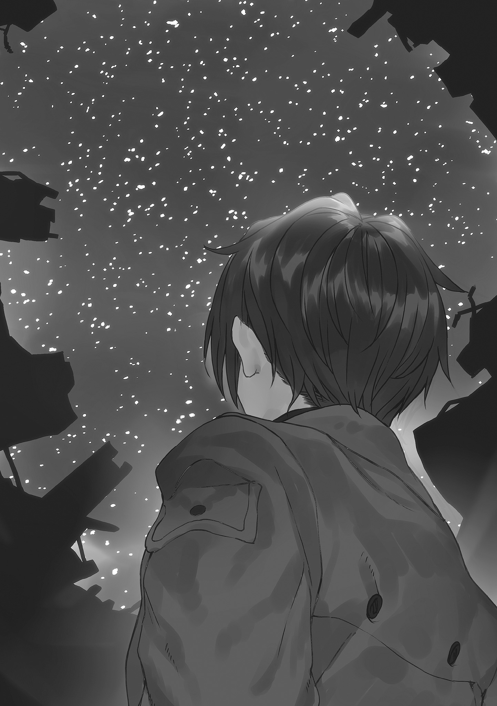

| 86─エイティシックス─Ep.3 ─ラン・スルー・ザ・バトルフロント─〈下〉 | |
| 安里アサト | |
本書（電子版）に掲載されているコンテンツ（ソフトウェア／プログラム／データ／情報を含む）の著作権およびその他の権利は、すべて株式会社ＫＡＤＯＫＡＷＡおよび正当な権利を有する第三者に帰属しています。
法律の定めがある場合または権利者の明示的な承諾がある場合を除き、これらのコンテンツを複製・転載、改変・編集、翻案・翻訳、放送・出版、公衆送信（送信可能化を含む）・再配信、販売・頒布、貸与等に使用することはできません。
それが誇りだと、彼らは言った。
それ以外の何も、まだ知らぬままに。
──フレデリカ・ローゼンフォルト『戦野追想』
戦場に見渡す限りに咲き誇る雛罌粟の花の真紅は、天を焼き尽くす夕映えの下、狂気のように美しかった。
大陸の北寄りに位置する共和国八六区の戦場は、夕暮れになると途端に冷える。薄暮の風が長時間に渡った戦闘の熱を奪い去っていくのを感じながら、シンは暮れなずむ天をただ、見上げる。
共和国の〝有人搭乗式〟無人兵器──〈ジャガーノート〉の処理装置として戦場に出てから一年余り。すっかり慣れてしまった静けさだった。
敵も友軍も、等しく全滅した戦闘の後。
どの戦隊に配属されても、最後に待っているのはいつも同じ、仲間達の誰もが戦死したこの無人の静寂だ。一年も繰り返せばいい加減に慣れる。
硝煙の臭いと砲声に怯えて鳥も獣も鳴かず、羽虫の一匹も飛ばぬ世界は赫く、しんと静謐に凍てついている。絶えず耳に届く亡霊の声だけ相変わらずだが、それも今は遠い。〈レギオン〉達は彼らの支配域に潜み、今日はもう出てはこないらしい。
とはいえ戦場に意味もなく一人残っているのもなかなか無謀な振舞だったが、もう少しだけ動かずにいたかった。戦慣れたといってもようやく十二になったばかりの、まだ背も伸び始めない、未完成の子供の体だ。〈レギオン〉たちとの激戦、それも途中からは僚機の一機もいなくなった戦闘に、流石に疲れていた。
──アンダーテイカー。その、貴官の他には何人が。
自身が共和国市民であることにあまりに無自覚な、善人気取りのハンドラーの声が不意に蘇って目を細めた。
本来聞くまでもない問いだ。
戦死者ゼロのこの戦場で、プロセッサーが死ぬのは当たり前のことだ。
エイティシックスが死ぬのは当たり前だ。
要塞壁と地雷原に退路を断たれたこの戦場で、人間の代わりに戦って死ねと。もし生き延びたとしてもその最後に必ず、無意味に死ねと。エイティシックスに強いているのは、彼ら共和国市民なのだから。
両親や兄姉は早々に死んで、あるべき庇護も無く育ち、戦死を期待しての苛烈な戦場と共和国兵の露骨な悪意に曝される──明言・暗黙を問わず死んでしまえと望まれ続けるプロセッサーは、だから、早くて一瞬、遅くとも五年後に待ち構える不可避の死を、直視することに慣れている。
慣れざるを得なかった。
──ま、どうせ死ぬなら、我らが死神のお導きなら悪かねぇよな。
そう言って、誰も彼も。
先に。
ああ。
そうかもしれないな──と、天と地を染め上げる色彩と同じ、血の真紅をした双眸を細めた。
最初に配属された戦隊は、シン一人を残して全滅した。
次の戦隊も、その次でも、今属しているこの戦隊も、いつも生き残るのは彼一人だけだった。
亡霊の声を聞き人の死を招く化物と、忌まれることにも慣れてしまった。
多分、本当のことだから。
──お前のせいだ。
かつて兄が、言ったとおりに。
そう、言ったくせに。
思い出すのはそれが最後の姿になった、振り返らずに出てゆく背中。
陽は沈み逝き、暗い空に、届かぬと知りつつ手を伸ばした。
兄さん。
どうして、おれを。
間章 ゲット・ユア・ガンズ
灯火管制がかかり、夜間哨戒の隊を除いて前線は寝静まる時間にも拘わらず、生き残った全ての戦隊と知覚同調は繫がった。
その事実に、レーナは淡い色をした唇をひっそりと嚙む。
彼らはとうに、備えていたのだ。
いずれ来るこの時に。迫りくる破滅を知りもせずにぬくぬくと惰眠を貪る共和国を捨て置き、来る〈レギオン〉の大攻勢に、敵わずとしてもせめて最後まで抗うために。
東部戦線にかつて在った〝死神〟の予言により、あるいは敵軍と対峙した所感から。必ず訪れる自らの滅亡の日を、誇り高いエイティシックス達は知りながら今日まで戦っていた。
ともあれ各隊に協力を──八五区内への集結と応援を要請し、個々の応答は訊かずに知覚同調を切って管制室への道のりを急ぐ。回答など訊かずとも、協力してくれるつもりがあるなら八五区内へ来る。その前に、エイティシックス達と共和国を隔てる、地雷原の啓開とグラン・ミュールのゲートの開放を、行わないと。
黒く染めた軍服の胸元、内ポケットのある位置をそっと押さえた。
彼らは、最後にそう。望んでくれたのだから。
通り過ぎた廊下の背後に、誰かが立った。
「──何をする気かね。ヴラディレーナ・ミリーゼ大尉」
同時に腕を摑まれてはっとレーナは振り向く。
立っていた人物に、低く唸った。
「カールシュタール准将......！」
摑まれた腕を振りほどき、頭一つも高い相手を真正面から睨みつけた。
ここが分水嶺、──共和国が、エイティシックス達とレーナが生き残るか否かの瀬戸際だ。
こんな、半端な絶望にうすぼんやりと浸ったちっぽけな男に、邪魔をされてたまるものか。
「地雷原の啓開とグラン・ミュールの開放を。......前線の各戦隊をグラン・ミュール内に呼び寄せ、戦力を集中させて〈レギオン〉を迎撃します。そうすれば、まだ生き残る道は......」
「やめておけ。エイティシックスを呼び込むくらいなら、このまま〈レギオン〉に滅ぼされる方が共和国市民にとってはまだましだ」
「貴方はまだ、この期に及んで──......！」
白系種だけが人間で、八五区内は白系種だけに赦された楽園だなどという、自分でも信じていないお題目に固執して祖国の滅びを座視するというのか。
「エイティシックスが共和国のために戦うわけはない」
言い捨てられた言葉に、横面をはたかれた気持ちになった。
「共和国に迫害され、棄てられ、虐殺された彼らだ。今更我々を守ってくれなどと懇願したところで、聞き入れる義理も理由もエイティシックスにはない。......せいぜいが、ざまを見ろと嘲笑われるのが関の山だ」
きつくレーナは歯をくいしばった。
そんなことはわかっている。
助けてくれ、守ってくれなんて図々しいことは口が裂けても言えない。
でも。
「義理はありませんが、理由ならあります。わたし達はまだ、彼らは持っていない発電プラントと生産プラントを擁している。生きるため、戦い抜くためにはそれらが必要だと、これまで戦場で生きのびてきた彼らは判断してくれるはずです」
カールシュタールは傷痕の残る顔をしかめた。
どこか、耐えがたいものを見た人のように。
「そううまくいくものか。......なるほど、最初はおとなしく従うかもしれん。だが彼らはすぐに気づくぞ。役にも立たない、不平ばかりの市民どもを守って戦うくらいなら──自分達だけで〈レギオン〉に立ち向かった方が遥かに楽だと」
「っ......」
「その時何が起こる？ ただの虐殺ならまだいい。だが、そう生易しくはすまないことは歴史を学んだならお前も知っているだろう。お前には......若い女性のお前には特にだ」
その示唆する生々しい末路にレーナは怯む。
考えなかったわけではない。
戦闘の指揮は執り続けて、今の戦隊のプロセッサー達の信頼は多少得られたかもしれない。けれどそれも彼らからしてみれば、安全な後方にいる白ブタの振舞だ。
呼び込んだ瞬間に殺されるかもしれないと──考えなかったわけではない。
それ以上の暴力も。
それでも。
軍服の内ポケットの中、......いつ〈レギオン〉の大攻勢が始まってもこれだけは手放さずにすむよう、防水のカバーに入れて持ち歩いている手紙と写真に、軍服の上から手を触れた。
彼らが最後に遺してくれた、言葉と心。
「それでも。......最初から何もかも諦めて、殺されるのをただぼんやり待っているのは嫌です。たとえ力及ばず死ぬとしても......それまでは戦い抜きたい」
そうでなくては、そのように生きて散った彼らに。レーナもそう在れると信じてくれたシン達に、会わせる顔がない。
白銀色の二対の双眸がしばしぶつかり──不意に、カールシュタールが目を背けた。
「なら、好きにするがいい」
そのまま身を翻して廊下を反対方向に歩き出す。広い背中で、ストラップで掛けたアサルトライフルが重く揺れた。共和国制式の七・六二ミリ口径。よく手入れのされた、けれど一つ型番の古い単射・三点射仕様の。
たとえばカールシュタールがごく若い頃、使われていたような。
軍のライフルは兵員それぞれに専用のものが与えられ、訓練も戦闘もそれのみを用いて行われる。工業製品のアサルトライフルとはいえ、銃ごとに細かい癖がある。その癖も含めて、自分のものとするために。
まだ若いカールシュタールがかつて与えられ、十年前には〈レギオン〉と戦い、そして今この時まで彼と共にあった、彼のライフル。
「准将──？」
「夢を見るのは子供の特権だ、ミリーゼ大尉。そして、子供が夢から醒め、無慈悲な現実を知って打ちのめされるまでその夢を守ってやるのが......大人の役目だ」
片手でネクタイを緩めて引きむしり、投げ捨てる。将官の重厚な軍服の足元が、不釣り合いに実用一点張りの野戦用の軍靴であるのに、今更気づいた。
最初から、そのつもりで......？
「せいぜい打ちのめされるがいい、レーナ。お前の望んだ甘ったるい夢が、現実の前に壊されていく様に」
「待──」
つい、〝小父様〟の背に手を伸ばしかけ......レーナはぎゅっと唇を引き結んでその手を握りしめる。
かつりと軍靴の踵を鳴らし、振り返らぬその背に敬礼を送った。
「ええ、ご武運を。──カールシュタール准将」
口の中だけで言い捨て、レーナは再び、深更の国軍本部の廊下を歩きだす。
心に強く思うのは、最後に彼が遺してくれた言葉。何度も読み返して脳裏に刻み込まれた、闇に灯る導きの星のような、その言葉だ。
いつか、おれ達が行きついた場所まで来たら。
ええ、シン。
貴方が行きつき、眠るその場所まで。
わたしは必ず、辿りついてみせる。
†
押し寄せる〈レギオン〉の大群の、狂奔のような砲撃と剣閃の合間。ふ、とシンは引き戻されるように我に返る。
誰かの声が、聞こえた気がした。
大攻勢を迎撃に出た、その死闘の最中だ。その感覚は瞬く間に戦闘への没入に押し流され、忘却されて消えていった。
それが最後に聞く〝彼女〟の声かもしれないとは、思いもせずに。
第六章 オーバー・ゼア
テレビの〝ほうどうばんぐみ〟はお兄ちゃんのいる〝せいぶせんせん〟から〝せんきょう〟を説明していて、それによると攻めてきた沢山の〈レギオン〉を、〝れんぽうぐん〟は追い返すことができたらしい。
家の前に車が停まる音がして、六歳のニーナ・ランツは顔を上げる。
赤と黒の双頭の鷲の国章を掲げた、連邦軍の公用車だ。従軍している兄のユージンからの手紙を運んできてくれる、鋼色のセダン。
応対する叔母に手渡されたのも連邦軍の双頭の鷲の透かしの封筒で、お兄ちゃんからだ、とニーナはとてとてと歩み寄る。半年前に特士校に入学してからは数える程しか会えない、一月半前の正式配属からは一度も会っていない兄。十歳年上の、強くて優しくて、大好きな兄。
おばちゃん、と言おうとして、ニーナは普段とは違う叔母の様子に気づいて立ちすくんだ。
封筒を受け取った叔母は真っ青で、家事と内職に荒れた手が小刻みに震えている。
手紙を渡した軍人は、いつもの鋼色の軍服の上から黒いサッシュを斜めにかけて、きつく唇を引き結んでいる。
どうしたの。
お兄ちゃんに、何か、あったの。
テレビの報道番組の、西部戦線の前進基地からの中継映像が、その時、激烈な閃光と無音の轟音に塗り潰された。
†
身じろぐと、砕けた硝子片が滑り落ちてちりちり鳴った。
フレデリカを押し伏せて覆いかぶさった体勢から、シンは身を起こす。窓硝子は全て割れて飛び散り、激震に落ちた埃が淡い陽光に舞う師団本部基地の廊下。
硝子片が掠めたものか左のこめかみにぬるりと伝う血の感触があって、無造作に手の甲で拭う。硝子を叩き割り、伏せた上を過ぎていった衝撃波に耳の奥が強く痛んだ。
割れて外れかけた窓枠の向こうを見やって、目を眇めた。
ふらふらとフレデリカが立ち上がる。
「っ......、止んだか。シンエイ、被害の状況は......」
「見るな」
返事は聞かず、ようやく自身の鳩尾程度の背丈しかない、小さな頭を片腕で抱え込んで視界を奪った。
窓の外、司令部基地からおよそ十キロ前方。辛うじて目視圏内にあった前進基地一四が──一個連隊五千余名の本拠が、消滅している。
崩壊でも壊滅でもない。消滅だ。地平線に薄く霞む灰色の建造物の影が、綺麗さっぱり消え失せている。広範囲に渡って薄く立ちのぼる土煙だけが、砲撃で消し飛ばされた何かがそこに広がっていたことを物語っていた。
目を転じれば、この司令部基地も無傷ではない。少し離れた格納庫の一つが流れ弾に丸ごと叩き潰され、無惨に抉り飛ばされてクレーターと化している。無誘導の超長距離砲撃は半数必中界が広い──砲撃の命中率はさして高くない。
ひしゃげて裂けたバラックと〈ヴァナルガンド〉の残骸、飛び散った巨大な砲弾片が混じり合って転がり、折り重なった、およそ見たこともないほどに無惨な破壊の爪痕。
中にいた者は──全滅だろう。
同じ砲撃の集中砲火を浴びたＦＯＢ一四も、おそらくは、同様に。
至近距離の衝撃波に弾き飛ばされて横転した装甲車にでも巻き込まれたか、助けを求める誰かの声が遠く、細く聞こえた。
聞きつけたフレデリカの小さな体がびくりと強ばる。無理矢理首を横にねじ向け、片目だけで窓の外を見やった紅い瞳が、大きく見開かれて凍りつく。
「こん......な、」
「フレデリカ」
「キリ......が、こんなことをしでかしたのか......」
「フレデリカ。部屋に戻ってろ。外は見るな」
不意にフレデリカはこちらを見上げた。
今にも泣き出しそうな、脆い瞳だった。
「そなたは、」
「......何？」
「そなたは、こうはならぬであろうな。キリと同じようには──」
「あたりまえだろ。〈レギオン〉になりたいわけじゃない」
死んだ後までこの世に残るほどの未練などない。
司令官執務室の扉が音を立てて開く。
「ノウゼン中尉、無事!?」
「ええ」
血の色は見えたろうが、この状況下で切り傷の一つ二つ怪我のうちに入らない。緊迫に紅唇を引き結んで、グレーテは視線で執務室内を示す。
「今の砲撃、どこからか聞き取れて？ ──反撃をするわ。位置を特定しないと」
「了解。......ですが、」
フレデリカを離し、戻っていろと背中を押しやりながら、シンは緩く首を振った。
「特定できても、打てる手が？ ......砲撃位置はおそらく、数百キロは先です」
†
成立直後から〈レギオン〉との戦争に国力の大半を割かれて法整備もままならず、『現場の判断』で急場をしのぐことも多い連邦だが、そうであるが故に関係者や関係部署のフットワークは軽い。
軍と国政に絶大な権限を有する大統領なら、尚更に。
「──当該超長距離砲を新型〈レギオン〉と認定。以降、〝モルフォ〟と呼称します」
ギアーデ連邦大統領官邸、〝鷲の巣〟。
帝政時代には皇帝の御座所、独裁政権下では独裁者達の官邸であった、謹厳にして威圧的な末期帝政様式の大宮殿の大議場は、今は軍事に関わる高官と官吏が集う国防会議の場だ。
同心円状に座席の並ぶ大議場の、最前列中央の席で、エルンストは議場中央の宙空に投影されたホログラムの西部戦線の三次元モデルを見上げる。
「弾着は、第一射が第八機甲軍団戦域のＦＯＢ一四に五五発。七二分後、ＦＯＢ一三に四五発。十五時間後、第五歩兵軍団のＦＯＢ二八、三〇にそれぞれ五〇発」
〈レギオン〉支配域内の計四か所の砲撃位置から放物線が伸び、前進基地のアイコンに到達。三次元モデル上方に四枚のサブスクリーンが展開し、砲撃後の各基地の映像が投影される。
そこにあったはずの基地など跡形もない。構成物の何もかもを粉砕され、幾つものクレーターが刻み込まれただけの荒野と化した砲撃跡を。
「各ＦＯＢはこの砲撃により消滅。それぞれの基地を本拠とする四個連隊、計二万余名が殲滅されています」
たった一日足らずのうちに、四個の前進基地が。二万余名の戦闘要員と基地要員も諸共に。
余計な感情は出さず読み上げるよう訓練された分析官の声音も、さすがに緊迫の色を帯びて硬い。
「現時点で推定される性能諸元は、主砲口径は八○○ミリ、最大射程四〇〇キロ。砲撃の初速は八○○○メートル毎秒。......電磁加速砲と推定されます」
エルンストは目を細めた。
レールガン。
二本のレールの間に弾体を挟み、電磁誘導によって加速し射出する投射兵器である。
莫大な電力を必要とし、また小型化の難しい面もあるが、せいぜい初速二〇〇〇メートル毎秒が限界の火砲に比べ、非常な高速で砲弾を射出できる利点を持つ。質量弾の破壊力──運動エネルギーは、弾頭重量に速度の二乗をかけたものだ。
着弾時には減衰しているとはいえ秒速八○○○メートルもの初速に、口径実に八○○ミリ──数トンにも及ぶだろう弾頭重量。その有する莫大な破壊力にかかればいかに堅固な要塞基地といえども砂の城に等しい。ましてプレハブの前進基地など何をかいわんや、だ。
「──保護した時の彼らの報告にも、あったものだね」
「ええ。対抗手段の開発は、間に合いませんでしたが」
〈レギオン〉の開発母体である帝立総合軍事研究所の研究員は、多くが旧体制派の軍門に下り、その拠点とともに〈レギオン〉に吞み込まれた。その時にその知識、あるいは脳そのものが〈レギオン〉に吸収されたのだろう。
そして帝国の超技術を支えた彼らのいない今の連邦に、同時期に同等の兵器を開発するほどの技術力はない。
「第二、第三射の間の十五時間は、砲身換装の時間と思われます。口径八○○ミリともなれば、砲身の摩耗も激しいでしょうから。──この間に西方方面軍は保有する全巡航ミサイルの準備を完了、第四射直後に全ミサイルによる飽和攻撃を実施。弾着観測が不可能なため正式な損害評価はありませんが、相応の損害は与えた模様です」
競合区域深部から〈レギオン〉支配域では、阻電攪乱型の電磁妨害と電磁干渉であらゆる誘導が無力化される。数十キロ程度の短距離で戦場全体を目標とするならともかく、百キロ先のおそらくビルディング程度の目標にピンポイントで着弾させるのは不可能だ。
それでも必中を期すなら、数で補うしかない。それこそなけなしの巡航ミサイルを一度に使い切ってしまう程に。
そしてどうせ対〈レギオン〉戦では使えないのだからと、気が遠くなるほど高価な巡航ミサイルの再生産も全域測位システム用の人工衛星の再打ち上げも、もう久しく行われていない。
「これ以降、電磁加速砲型が砲撃、移動とも停止していることからもそれは裏づけられます。ただし観測を行っている異能者によれば、撃破には至っていないとのことです」
ちなみにこれはシンのことだ。エルンストも初めて知らされた話だった。
とはいえ話してくれなかったのは仕方ない。祖国に人権を剝奪され、人の形の兵器として扱われてきたのが彼らエイティシックスだ。口実さえあればどんな無体非道もまかりとおるのが人間社会だと、彼らは誰よりも思い知っている。便利な警報装置として、それを強制するための人質として、飼い殺されるのを嫌ったのだろう。あるいはより無惨な末路を。
実際、......この状況以外で露見していたら、おそらく彼らが危惧したとおりになっていた。性質の悪いことに、シンの異能は感知可能な範囲が異常に広い。彼らの望むとおり再び戦場に立つことも叶わず、安全な首都近郊の軍施設か研究所で、大事に籠の鳥にされていたろう。
報告書に参考資料として添付されたシンの人事ファイルの、クリップ留めされた顔写真を見下ろして唇を嚙む。
そこまで警戒して秘匿していたというのに。露呈のリスクを犯してでも西部戦線全体に敵襲を知らせねばならない状況だったと、──それほどの危機を眼前にしながら頼ることもできない情けない〝保護者〟だったのかと、己のふがいなさに憤りを覚えた。
五年にも渡り〈レギオン〉との死闘を生き抜いてきた彼が、今更恐ろしいと思っていたかはわからない。
けれど誰にも助けを求められぬまま、あれほどの大軍が迫り来るのを一人、見続けねばならないのは......辛かったろうに。
議場の最前列、解像度が低くてほとんど人の形のシルエットにしか見えないホログラムの一つがゆっくりと身じろぐ。
『──損害評価については、浸透させた我が連合王国の自動機械が電磁加速砲型の観測に成功している。直撃こそしなかったものの、間違いなく大破には持ち込んだようだよ』
ロア＝グレキア連合王国王太子、ザファル・イディナローク。
〈レギオン〉本隊の撤退を受けて阻電攪乱型が支配域に退き、辛うじてオンラインになっている回線を通じて参加している、ロア＝グレキア連合王国側の代表者だ。
連合王国が〈レギオン〉と対峙する最前線である南方戦線司令官の弟王子ではなく、まさか王太子その人。国王に次ぐ統帥権の保持者、連合王国軍全軍の次席司令官だ。連合王国にとっても、電磁加速砲型はそれほどの脅威であるものらしい。
細身の体軀にぴんと伸びた背の、老齢の女性将校であるらしいヴァルト盟約同盟の将官──正確には、そのホログラム映像が口を開く。
同盟北方守備軍司令官、ベル・アイギス中将。成立当初から国民皆兵の国是に従い、男女問わずの徴兵制度を敷いてきた筋金入りの武装中立国家は、未だ変質していないらしい。
『それだけの至近に接近できるのでしたら、電磁加速砲型の除去も貴国の自動機械に実施いただけるので？』
王太子は優雅に笑ったようだ。
『生憎とそれが可能なほどの積載重量はなくてね。比較的浅い地域とはいえ〈レギオン〉支配域への浸透に成功したことからもわかるとおり、〈レギオン〉に比べればごく小型の機体だ。そうだね、......可憐な乙女が備える程度の武装だと考えてくれたまえ。それにそのたった一機を浸透させるために随分な数を犠牲にしたし、相当に神経を使ったようでね。兄として、弟にこれ以上の無理はさせられないよ』
弟君が出てこないのはそういう事情もあったらしい。
察するに偵察・観測機程度の小型機、管制官が遠隔操作する無人自動機械の類。仮にも王族である弟王子御自ら管制にあたっているなら、何か操作者を選ぶ理由でもあるものか。
ベル中将が鼻を鳴らす。
『それはまた、......随分な大盤振る舞いですね』
偵察のための犠牲とやらに加え、おそらくはあえて晒してみせた自国軍の手の内も。
『これから協同作戦をとろうという相手だ、隠し事は無用だろう？ 信頼こそは人間同士、国家同士の最も強靭な紐帯だよ』
まあ、噓だろう。
自国の戦力の誇示と払った犠牲の強調、提供可能な手札の提示。要求に牽制。これから取られるであろう協同作戦に際し、少しでも自国に有利な条件を引き出すための駆け引きの一端だ。
半円を描く最前列の席の、丁度両端で穏やかに睨みあう二国の代表を視界の左右に、エルンストは薄く笑う。
十年にも渡り、不自然に分かたれてきたが。
これが国交。これが国家同士の在り方だ。
ベル中将は冷やかに笑んだようだ。
『素晴らしいお心映えですね、王太子殿下。......でしたら、〈レギオン〉どもの戦略・戦術アルゴリズムについても、是非見解を聞かせていただきたいものです。〝マリアーナ・モデル〟──〈レギオン〉の元ともなった人工知能モデルを発明なされた、貴国の』
王太子は優雅に嗤う。
『もちろん構わないよ、中将。......履帯に比べ速度に劣るとされていた多脚型機甲兵器を高機動化し、最初に実戦投入した貴国に──その流れを汲んで作りだされた〈レギオン〉の性能の分析をしてもらえるのならね』
微妙な沈黙が二国の代表者の間に満ちる。
嘆息してエルンストは口を開く。国同士、正しい姿とはいえ、今はそんな話をしている場合ではないし、それを追及されるのは連邦にも具合が悪い。
何となれば今ここにいる三国を含め、大陸全土を席巻し、蹂躙している〈レギオン〉を開発・運用したのは、連邦の前身たるギアーデ帝国なのだから。
「今、考えるべきは電磁加速砲型──そして当該個体を含め、確認されている我々人類と同等の知性を有する〈レギオン〉とその対策についてではありませんかな」
『知性化された指揮官型〈レギオン〉──我が盟約同盟でも確認しています。......あれが出て来てから、防衛線での戦闘が激化している』
『〈レギオン〉の弱みは、数と性能を恃みにして戦術面が単純なことだったからね。それを払拭する指揮官型の登場は、こちらでも頭の痛い問題だよ』
ベル中将は背もたれに身を預けて宙を仰いだようだ。
『......先の大規模攻勢も、〈レギオン〉にとってはあるいは前線により多くの将兵を呼び寄せ、張り付けるための陽動であったかもしれませぬな。小賢しい屑鉄どもが、忌々しい』
『そういう厄介な敵機を、戦死者の遺体の回収もしないどころかわざわざ支配域深くに優秀な兵員を送り込んで増やすような真似をしている、かの共和国には猛省してもらいたいものだね。もっとも、まだ生き残っていればの話だけれど』
小さく王太子は頭を振る。エイティシックスを保護したことで試作時の電磁加速砲型の情報を得た都合上、その彼らが共和国を追われた経緯は二国にも伝えてある。
『まあ、元々民主共和制、万民平等などといううすら寒い理想を謳いながら、自分たち以外の各民族を〝有色種〟と総称して区別するのをおかしいとも思わないような奴原だからね。区別が差別に、差別が迫害に転じたところで、驚きはしないよ。......虐殺された我らが同胞と、同胞ならずとも同じ境遇のエイティシックス達には、同情を禁じ得ないが』
嘆息し、王太子は佇立したまま沈黙を保つ分析官に目を向けた。指先まで躾けられた、優美極まりない挙措で片手を振る。
『失礼、報告の途中だったね。続けてくれたまえ』
「は」
とはいえ分析官は他国の王族に敬意は払えども、下知に従ういわれはない。ちらりと向いた視線にエルンストは小さく頷いて、それを受けて分析官は口を開く。
「では、続けます。──移動速度、および発射位置からして、電磁加速砲型は旧高速鉄道の路線を利用した列車砲と推定されます。現在位置は旧国境付近、クロイツベック市の鉄道ターミナル。ここからでも連邦西部戦線の全ての基地、連合王国副都ヒーテ＝ビルチ、盟約同盟第二首都エストホルン、共和国副都シャリテを射程に収められます。また、〈レギオン〉支配域および競合区域内に残存すると推定される高速鉄道の軌条を移動範囲と仮定した場合、」
三次元モデルの戦域図が鳥瞰の二次元のそれに切り替わり、縮尺が拡大。広域表示に変更。かつて在った高速鉄道の路線が粗い網目状に地図上に表示され、そこに四百キロの電磁加速砲型の射程が重ねられて。
老獪な二国の代表を含め、議場に集う軍と政府の高官達が微かに息を吞んだ。
「連邦首都ザンクト＝イェデル、連合王国王都アルクス＝スティリエ、同盟本部カペラ、サンマグノリア共和国の八五行政区全域が射程に入ります」
〈レギオン〉に席巻されたこの大陸で、辛うじて生存が確認された、──人類最後かもしれない生存圏の全ての首都機能が。
およそ蛇から国家そのものに至るまで、共通する壊し方は一つだ。
頭を潰せば蛇は死ぬ。
「自動工場型の推定生産能力からして、修復完了、再稼働までの猶予は最短で八週間。その間に何らかの対策を取らねば、......我々の敗北です」
静かにエルンストは口を開く。
「確実な対抗手段は？」
分析官は唇を引き結んだ。
「西部戦線の指揮官達は異なる見解であってほしいものですが。分析室の結論としては──」
「──この超高速・超長距離の砲撃に対する、有効な対処方法はない」
十年前までは貴族の別邸であった古城を接収した西方方面軍統合司令部の状況説明室は、窓のない厚い石壁に閉ざされて暗い。
円卓の上に展開したホロスクリーンの燐光に西方方面軍、即応予備軍の各軍団長と副長、背後に立つ副官達の影が幽鬼のように浮かぶ。
「砲弾を撃ち落とそうにも、対空砲では速度も弾幕の密度もまるで足りない。そもそも数トンはある弾頭だ、たかだか四〇ミリの機関砲弾を命中させたところでどうなるものでもない」
周囲にホロディスプレイを展開し、それをほとんど見もせずに説明する参謀長はまだ若く、帝国貴種特有の端整な容貌だ。
この古城の以前の所有者であり、今は重工業に大きな影響力を持つかつての大貴族の子弟だが、血筋だけでその地位にある無能でもない。旧帝国では大貴族の子弟は、幼いうちから一族の専門分野や戦闘指揮の英才教育だけを叩きこまれて育つ。下手な専門家よりも、その分野に関する造詣や経験は深い。
〈レギオン〉などという時代を間違えたかのような高性能の自律戦闘機械が生まれたのも、帝国のこの慣習が理由の一つだ。
「他の戦線から巡航ミサイルはかき集めさせているが、これも確実とはとても言えんな。誘導は効かず、弾速が遅い分対空砲兵型の迎撃も受けやすい。電磁加速砲型自身も、強力な対空兵装を備えているようだ」
ホロスクリーンが一度暗転し、モノクロの粗いビデオ映像がスタートする。連合王国から提供された、連合王国軍無人機の観測映像だ。
都市の廃墟と曇り空の遠景。視点は随分低くて、おそらく人の背丈と同程度だ。画面の端で何かが光り、直後に空中で連続する爆発。辛うじて目標まで辿りついたわずかなミサイルが叩き落とされていく。
映像は対空砲火をかいくぐった一基のミサイルがシーカーを作動、廃墟の向こうの巨大な何かに突進し、対空砲を喰らいながらも至近距離で炸裂したところで、唐突に終わっている。
「おそらくこの二の舞になる。......かといって、火砲による反撃ではまるで射程が足りない。阻電攪乱型と対空砲兵型に制空権を奪われている以上、航空兵力による対地攻撃も難しい」
〈レギオン〉の対空防衛は対空砲兵型の他、高空に展開する阻電攪乱型もその一翼を担う。本来の役割である電磁妨害に加え、航空兵器の進路上に蝟集しインテークに飛び込む攻撃行動を取る機械仕掛けの蝶は、ジェット機の天敵だ。ある意味では最も性質の悪い〈レギオン〉である。
「──そもそも、」
旧帝国空軍から転任した、義足の准将が口を開く。
「後方で任に当たる輸送機のパイロットはともかく、戦闘機や攻撃機、爆撃機のパイロットは皆〈ヴァナルガンド〉のオペレーターに転身し、......この十年でほとんどが戦死しています。生き残った者も、もう今更飛べますまい」
「では、やはり」
軍団長達の視線が西方方面軍司令官に集まる。受けて司令官は重々しく頷いた。
「──地上兵力による直接排除しかない」
しん、と硬い沈黙が会議室に満ちる。
椅子に身を沈めた即応予備軍の軍団長が不満げに唸った。
「〈レギオン〉支配域への、西部戦線の全軍をあげての突撃作戦。......〈レギオン〉どもがひしめく中を、直線距離百キロの敵中突破、か」
この十年、質、量ともに遥かに優勢な敵を相手に戦い続けてきた連邦軍人をして、およそ正気の沙汰ではないと感じる、圧倒的劣勢下での突撃作戦だった。
参加する将兵の生還率はおそらく、極めて低い。
けれど成功させねば西部戦線が、ひいては連邦そのものが瓦解する以上、机上での成功確率がゼロであろうと、成功させる以外に生き残る道がない。
「......西部戦線の戦力は、増援・即応予備を加えても先の攻勢で二六パーセント減衰。他戦線の防衛部隊はさすがに動かせない以上、この戦力だけで作戦を実施せざるを得ない」
「〈レギオン〉通常兵力も同数程度は減耗させてはいるが......」
「元の母数が異なる。再生産能力もな。観測の結果、奴らの戦力は西部戦線と対峙しているだけでも五個軍団規模。当然だが支配域最奥の自動工場型は無傷で、ここから二か月後には更に増えるだろうという予測だ。......便利なものだな。破滅しか予言できない異能者とは」
鼻を鳴らした第五歩兵軍団の副司令官が、添付資料の一つであるごく薄い束を指ではじいた。
人事ファイルの形式だったが、あるはずの写真は添付されておらず、それが何故かはここにいる誰もが理解している。一呼吸の間を置き、副司令官はわずかに沈痛に呟いた。
「排除にあたる部隊は、......どの部隊を選んでも犠牲になるな」
「ああ。......だからこそ、最も確実で、」
最も誰の心も痛まぬ。
「惜しまれぬ者を、選ぶべきだ」
「っ......」
思わず漏れた、幽かな声を──向かいに座る情報分析室室長は耳聡くも聞き咎めたらしい。
「どうかしたかね、ノウゼン中尉」
冷厳を絵にかいたような佐官の、怪訝というより気遣うような問いに、シンは咄嗟に答えられなかった。問いの声そのものが、今は遠かった。
常に耳の奥に響く、機械仕掛けの亡霊達の嘆きの声。
その──位置が。
「中尉」
重ねて呼ばれて、我に返る。第一七七師団本部基地、情報分析室の一角。作戦立案に際し、敵数の把握に〝協力〟を求められてここ数日かかりきりになっている索敵の最中だ。
正対位置以外からは表示内容が見えないように設定されたホログラムの電子書類を片手を振って消して、佐官は猟犬がそうするように首を傾げる。
「少し休むかね。朝からぶっ続けだ。いくら常時〈レギオン〉どもの声が聞こえているとはいえ、長時間耳を傾けているのはまた別の話だろう」
「いえ、」
平気だ、と首を振ると、佐官は息をついて立ち上がった。
「......なるほど。確かに君達は──君は、使い捨ての兵器の部品であったようだな」
侮りとも嘲りとも違う、ただ平淡な声音だった。
向けた視線は広い背中で受けて、部屋の奥のキャビネットに向かう。私物らしいティーセットを取り出して、保温用のティーコゼーを掛けたポットを取り上げた。連邦では珍しい紅茶党らしいが、大陸東部原産の紅茶も今では生産プラントの合成品しかない。合成紅茶特有のかすかに薬品じみた香りが淡く広がる。
「幾らでも替えが利くが、壊れるまでは交換用の部品も来ない。故に、摩耗に気づかぬふりをする。毀れたならその痛みを忘れる。壊れ果てて動けなくなるまで。疲れ、厭い、恐れながら、それらを押し込めてなお戦う。まさに〈レギオン〉に対峙する人の形の兵器というわけだ」
二客持って戻ってきたティーカップの片方をシンの前に置き、自身は座らず立ったまま一口啜って、佐官は言った。
「顔色が悪いぞ。ここは君達がいた戦死者ゼロの戦場ではない。人が生き、人が戦う戦場だ。ここでは、休むべきだと判断する疲労や痛みの基準を、もう少し下げておけ。それらは警報だ。鈍らせておく方が、本来は問題なのだ。......なに、その間は彼らが索敵をする」
背後の硝子張りのオフィスを目で示した。忙しく立ち働く、年齢も性別も様々だが一様に焰紅種の血赤の髪と瞳をした、鋼色の軍装の士官達。
貴種には異能を受け継ぐ血統があり、赤系種の貴種である焰紅種には精神感応系の血脈が多い。その異能をかわれ、索敵要員や尋問要員として、従軍することも多いのだとか。
「覚えておくがいい。代わりのいない人間などいない。人の世では、......良くも悪くもな」
†
先の大攻勢で出た大量の負傷者は、前線の負荷を軽減するために速やかに後送されて、けれど前線からは遥か遠い連邦首都の軍病院でさえも、静かに迫る絶望に息詰まるようだ。
大部屋の病室の、重苦しい沈黙が気詰まりで、エルウィン・マルセル少尉はようやく慣れてきた松葉杖を操り、折れた右脚を庇いつつ病棟の外に出た。
同じ病院内に知り合いはいない。先の大攻勢で全滅した同じ中隊の仲間は無論、特士校の同期もだ。大半はまだ西部戦線で戦っていて、一部はもう、どこにもいない。
中等学校の同じクラスで特士校の同期で、西部戦線でも同じ部隊で、......少し前に死んだ、ユージンのように。
新型〈レギオン〉の登場とその推定される性能、被害予測は市民達にも報道されていて、病院の敷地内から見えるザンクト＝イェデルの街も今は静まり返っている。嵐を前にした臆病な小動物が息を潜めて巣穴に籠り、いつ異変が起きるかと全身を耳にして警戒するような、不安にはりつめた静寂だ。
自由報道は近代民主主義の基本であるし、最初に消し飛ばされたＦＯＢ一四に、まさにその瞬間生中継が入っていたのでは隠しようもない。下手に報道管制をかけ、誤情報やデマに暴動が起きるくらいなら、正確な情報を随時報道させた方が良いと政府は判断したのだろう。
その判断が功を奏したか、連邦各地で小規模なパニックや混乱は散発的に起きているものの、おおむね連邦市民達は平静を保てているらしい。西部戦線が後退、あるいは陥落すれば電磁加速砲型の射程に入るこの連邦首都から逃げ出す者もいるようだが、大半の者はいつもどおりの生活を続けている。
けれどそれも、彼らが心のどこかでわかっているからだろう。
かつての国土の過半を維持できているとはいえ、全周を〈レギオン〉に囲まれたこの連邦で、逃げる場所などどこにもないのだということを。
「......ん、」
軍施設である連邦の軍病院は、災害等の緊急時を除いて一般市民の立ち入りを許可していない。歩哨以外に人気のないゲートの前に、よく見ればちいさな人影が立ち尽くしていた。
少し見つめて、マルセルは歩み寄る。
知っている子だった。
クラスメートの家に遊びに行った時、会ったそいつの妹だ。
そう。
ユージンの。
「チビ、どうした。何やってんだ」
声をかけるとびくっと肩を揺らして振り返る。
気が小さくて人見知りなんだと、以前ユージンが苦笑していた。ユージン自身は人懐こい性格だったから、誰に似たんだかと、冗談交じりに。
......だから。
余所の国から追い出されてきた、あんな死神なんかにも近づいてしまって。
大きな白銀色の瞳がマルセルを見上げて、見覚えのある相手だと気づいてぱちくりと瞬く。彼女は入れないゲートの中から出てやると、とてとてと寄ってきた。
「おにいちゃんをさがしにきたの。......でも、いれてもらえなくて」
ちらりと見やれば、幾つか年上らしい歩哨がアサルトライフルを肩にかけて直立不動の姿勢のまま、ついと目だけ逸らした。
まあ、意地悪をしたわけではない。まだ幼い少女とはいえ、規則は規則だ。
それはともあれマルセルは唇を引き結ぶ。
少し苦労しつつ膝をついて、小さな少女と目線の高さを合わせた。
「......兄ちゃん、帰ってきたろ」
連邦軍人は共に戦う戦友を、それが遺体であっても見捨てない。必ず連れ帰り、家族の元に送る。
ユージンも戦闘後すぐに回収されて、大攻勢が始まる少し前に他の大勢の棺とともに輸送列車で後送されたはずだ。
それがたとえ彼女が望んだのとは違う、無言の帰宅だったとしても。
ニーナはふるふると小さな頭を振る。
丁寧に編まれた二本のお下げが、飛びかう蛍の光芒のようにその動作の軌跡を彩る。
「かえってきてないの。きたの、はこだけで、......おにいちゃんじゃないの」
「っ......」
マルセルは唇を嚙んだ。
戦死者の遺体は。
それが遺族の目にさえも触れさせるのをはばかるほどに無惨な場合は、棺の蓋を釘付けにして対面させないまま埋葬される。
ユージンもそうだったのだろう。
体を半分失い、残った顔も銃弾で損壊した遺体は、特に幼い妹には見せられないと判断されたのかもしれない。
けれどまだ人の死なんてきっと理解できていない幼いニーナに、......連邦の国旗で飾り立てられた開かない棺がユージンだなんて、それが彼の死だなんて、どう言葉を尽くされても実感などできなかったろう。
きつくマルセルは唇を嚙む。
思い出すのは西部戦線の深い森の戦場。この世のものではないような翠の霧の中、機甲搭乗服を朱殷に染め、戦友の命を刈り取った拳銃を片手に無造作にひっさげて立つ、禍々しくもうつくしい死神のような少年兵の姿。
苦しませず殺してやるのは、戦場では慈悲だろう。
頭を──脳を破壊してやったからこそ、その遺体は忌々しい〈首狩り〉や回収輸送型に連れ去られ、〈レギオン〉と化さずにすんだのかもしれない。
けれど──けれど。
そのせいでニーナはユージンと最後に会うことができず、帰ってきたというのにその帰還も、彼の死さえも吞み込めなくなってしまったのだと。そうなるかもしれないと、あの時お前は本当にわかっていたのか。
なあ。
ノウゼン。
死神のように無造作に、顔色一つ変えずに戦友だったはずのユージンの命を刈り取った、──エイティシックスのお前は。
「......おにいちゃん、」
どこにいるの、と無垢な白銀色の瞳で見上げてくるニーナから、耐えきれずに目を逸らした。
ニーナにそんなつもりは毛頭ないのだろうが、責められているような気さえした。
どうして、お兄ちゃんを。
助けてくれなかったの──と。
それは俺じゃない。
あの時。
あいつが。
助けてやらなかった。
守ってやらなかった。
傍にいてやらなかった。
相棒だったくせに、ユージンよりも首の無い死告げ姫なんかを選んで、ユージンを見捨てた。
俺のせいじゃない。
責められるべきは。
あの時、ユージンを殺した。
あいつが。
ああ、と不意に、腑に落ちる感覚があった。
サンマグノリア共和国の市民が、エイティシックスに対し行った差別と迫害の。よくも同じ人間を相手にそんな惨い真似ができたものだとこれまで見下してきた蛮行の、その理由が。初めてマルセルは、わかった気がした。
人は、突然襲い掛かってきた理不尽を。
それに対してなす術もない己の無力を。
誰かのせいにして、責めたいんだ。
「......ユージンは、」
言葉とともに零れた笑みの、引き攣れたような悪意を、その持ち主であるマルセルこそは見られない。
†
「さすがに、いつ支配域の向こうから一方的に狙い撃ちされて基地ごと吹っ飛ばされるかわかんないってなると、みんなぴりぴりしてるね」
気の無い猫のように周りを見やって、言葉の割にどうでもよさそうにクレナはスクランブルドエッグをぱくつく。
第一七七師団司令部基地の朝の士官食堂は、即応予備要員と再編分の人員を受け入れて定数より人数が増えているにも関わらず、食事時らしい喧騒よりもどこか重苦しい緊張が色濃い。
紙コップの代用コーヒーを優雅に啜ってアンジュが言う。
「例の新型──電磁加速砲型、だったかしら？ 完全修復にはあと二か月はかかって、それまでは攻撃はしてこないだろうって予測だったはずだけれど」
「その予測の元が十年も連絡取れなかった外国の観測映像の、それも途中で電磁妨害喰らって送信中断して五秒くらいと、原理もよくわかんないエイティシックスの〝異能〟だけじゃ仕方ないんじゃないの。共和国でも最初の頃は、同じプロセッサーだって実際聞くまでは信じなかったじゃん」
連邦名産の腸詰めをぶっ刺したフォークを行儀悪くくわえたままセオが言い、まあねえ、とアンジュが嘆息する。
むしろ、軍隊といういかにも現実主義を絵に描いたような組織のそれも上層部が、シンの異能を割合すんなり受け入れたことの方が、彼らには意外だ。
「それでも表立っては混乱一つ起きてねえんだから、まあ、連邦軍の練度は大したもんだよな」
「だよねえ。共和国の白ブタだったら、今頃ハンドラーが真っ先に逃げ出してるんじゃないの」
口の端で嗤い、それからセオはふっと笑みを消した。
「......もしそうだったら。少佐、生きてるかな」
「セオ君」
窘められてセオはしまったという顔で口を噤む。
何故かそろそろとこちらを窺ってくるから、シンは少し眉を寄せた。
「なに」
「えっ。なにって何ソレ。まさか自覚してないとかじゃないよね」
ぎょっとした顔で言われる。
だから、何が。
やれやれとばかりに息を吐いてライデンが言う。
「......電磁加速砲型がどうこうっつうより、そういうヤバい状況になって連邦の連中も意識しちまった、って感じだな。自分が明日、手も足も出ずに死ぬかもしれねえってことをよ」
元より戦場とはそういう場所だが、誰もがそれを意識しきれているわけではなく、自己の生存を第一とする生物の本能にとってこれほど異常な環境も他にない。
ふふん、とクレナが少し誇らしげに鼻を鳴らす。
「あたしたちは別に、当たり前だけどね。そういうの」
明日をも知れぬ戦場に生き。
その兵役の最後に必ず死ぬさだめの、エイティシックスであったのだから。
ただ。
ふ、とシンは思考に沈む。
傍らにある死を、恐れないこと。
明日死ぬのを、当然のさだめと受け入れること。
それはあの共和国の戦場で生き延びるのに必要な適応でこそあれ、......誇るようなことでもない気がする。
傍らにある死を恐れないのは。明日死んでも構わないと、思ってしまえるのは、むしろ......。
気がつくと隣のフレデリカが覗きこんでいた。
「シンエイ？ いかがしたか」
怪訝に問われて、シンは自分がどうやら随分長い間、黙り込んでしまっていたことに気づく。
「......いや、」
フォークを持ったままセオが頰杖をつく。
「ひょっとして、まだ疲れ抜けてないとか？ この前の迎撃戦は〈レギオン〉が滅茶苦茶多かったし、それでシンにはうるさかったろうし、......最後の方とか、ちょっと吞まれてたよね」
「周りの状況、ほとんど見えなくなってたでしょう。〈レギオン〉が撤退する兆候を聞き逃したの、シン君、初めてじゃない？」
「......」
言われてみれば、そうだったかもしれない。
「同調を繫いだが、そなた応答もせなんだぞ。......やはりあれは、常のそなたの戦い様ではなかったのじゃな」
「同調？」
「気づいてもおらなんだか......」
子供らしからぬため息をつき、フレデリカは全員を見回した。黒絹の髪がさらさらと肩から滑り落ちる。
「シンエイを含め、そなたら少し、休んだ方がよいのではないか？ 一口に戦場と言っても、共和国と連邦とでは異なることも多かろう。疲れたと、気詰まりだと、心の底では感じておらぬか」
まともな支援も指揮もない分、軍組織としての制約も無いに等しいのが八六区の戦場だった。無人機に軍規も何もない。シンの異能で〈レギオン〉の動向を常時把握できるから享受できた余暇とはいえ、戦闘の無い時間はそれなりに好きに過ごしていられた。
十年に渡る戦争であちこちに無理や歪みが出ているとはいえ、未だまともな軍隊の体裁を保っている連邦軍ではそういうわけにもいかない。
とはいえ。
「この状況で？ さすがにそれは厳しいでしょ」
「兵の精神衛生を保つも軍の大事じゃ。実際、先の迎撃戦で、そなたらと同じ年頃の特士士官やらは戦闘神経症で大勢後送されておる。ましてそなたらはエイティシックスじゃ。多少の考慮はされると思うがの」
むっとクレナが顔をしかめる。
「そんなの嫌よ。可哀想がられて特別扱いされるなんて、ぜったい嫌」
食堂の喧騒に、けれど少女の高い声はよく通る。何気なく視線が向き、次の瞬間ぴきりと凍てつくようにその場の空気が硬化した。
......エイティシックス。
誰かの吐き捨てる声が小さく聞こえた。
共和国の生み出した化物が。
化物は化物同士、支配域で好きなだけ殺し合っていればよかったものを──同じ化物を呼び込みやがって。
その悪意にフレデリカが息を吞む。一方でシンを含め、とうのエイティシックス達は顔色一つ変えなかった。
今更だ。
お前達エイティシックスの利敵行為のせいで共和国は〈レギオン〉に敗北したのだと、そう断じられて戦場に追いやられた彼らだ。
ましてその中でも戦争を始めた帝国の血を色濃く引き、異能を持つシンは、戦を招き、死を呼び込む忌まわしい死神と、同じエイティシックスから疎まれたことも一度や二度ではない。
世界はいつも、より数が少なくて、〝普通〟からは少し外れた、異端者に冷たい。
静かにライデンが口を開く。
「......クレナ」
「わかってる。......でも、ああいう目のがよっぽどましよ。慣れてるから」
「......」
「踏みつけられても、負けなければいいだけだから。でも、可哀想がられるのは別。負けないって思ってるのに、もう負けてるみたいに言われるんだもの。......そういうのは嫌」
軍の忙しい朝食時間のこと、集まった目はすぐに離れる。それでもどこかよそよそしい空気は残り、フレデリカが不安げに周囲を見回した。
ライデンが鼻を鳴らす。
「......にしても、猶予は二か月か。その程度の時間で、何か手が打てるとも思えねえがな」
「一応、万が一があるかもしれないからって作戦開始は半月前倒すらしいわ。......まあ、またろくな作戦じゃないんでしょうね」
「結構力技で無茶だよね、連邦もさ。性能でも兵数でも情報でも後れを取って、その上はったりも揺さぶりも利かない〈レギオン〉が相手じゃ仕方ないんだけど」
〈レギオン〉は士気が下がりもしなければ功名を求めもしない。命を惜しみさえしない。人間の軍なら払拭しきれないそれら弱点を突くことはできず、そもそも奇策とは賭けの類に近い、戦術的には邪道というべきものだ。圧倒的な戦略的優勢下にある自動機械達は、生半な奇策など気にも留めずにその膨大と強大を以て踏み潰すだけだ。
力技で──正攻法で立ち向かうしか、術がない。
「ミサイルは足りねえ、重砲は届かねえ、航空戦力は使えねえ。......となると、」
「陸上部隊の投入、しかないだろうな。突破を図るのか、浸透するのかは、わからないけど」
その時食堂の入口に鋼色の影が立った。
「──傾注！」
広い食堂全体にびりびり響く、腹の底からの割鐘に、訓練で叩きこまれた一糸乱れなさで全員が直立不動の姿勢を取る。遅れたのは大喝につい身竦んだマスコットの少女達のみ。軍規にさして重きを置かぬエイティシックスの五人でさえもそれは例外ではない。
連邦軍の精強を支える、その練度の高さを狼のような鋭い翠の瞳で見返して、大佐の階級章のその士官は一つ頷く。
「作戦が決まった。中隊長以上の部隊指揮官は、〇九〇〇に状況説明室に集合せよ」
とはいえ現在、連邦標準時で〇七三〇である。
居住区画の廊下を一人自室に向かいながら、シンは再び物思いに沈む。
思い出すのはつい先ほどの、何気ないセオの言葉だ。
──もしそうだったら。少佐、生きてるかな。
本当は、もし、も何もない。
感知できるのは自分一人、話す必要もないから他の誰にも告げてはいないが。
共和国はとうに陥落している。
〈レギオン〉支配域全体の索敵を手伝っていた時に、気がついてしまった。支配域をも超えた遥か遠く、連邦に比べればあまりにささやかだが確かにあったはずの共和国の勢力圏が、機械仕掛けの亡霊達の嘆きの声に、塗り潰されていることに。
聞いた話では大攻勢が始まった直後に、自然のものではない地震波が検出されていたそうで、おそらくその時、グラン・ミュールが陥ちたのだろう。効果的に使うなら大攻勢に合わせて投入されるべきだった電磁加速砲型が、実際には大攻勢収束後に砲撃してきたのも、先に共和国を攻略していたからだとすれば説明がつく。
大攻勢の開始から、グラン・ミュール陥落から、わずか一週間。
エイティシックスに戦場を押しつけて現実から目を背け、狭い甘い夢に閉じこもった挙句に自らを守る術さえ見失ったあの国は──たったそれだけの日数すら、保たなかった。
祖国だという意識もない、幼い頃の朧な記憶の、曖昧な背景に過ぎない国だ。蹂躙されようが滅亡しようが、寸毫の感慨さえもない。
ただ。
──共和国が滅ぶ前に、助けが来るかもしれない。
──だから、少佐はそれまで、生きのびてください。
間に合わなかったな、と。
嘆息が一つ、未だ硝子の細片が薄く散らばる廊下に落ちた。
──少佐はおれたちのことも、忘れないでいてくれますか？
おれたちが死んだ、その後。ほんの少しの間だけでも。
そう、願ったはずなのに......どうやら今度も、忘れないでいる側に回ってしまったらしい。
置いていかれてばかりだと、ふと思った。
八六区の戦場に生きて死んだ戦友たちに。言葉を交わした者に。関わりを持った相手に。その死によって分かたれることが、そういえば、あまりに多いと思う。
共に戦い、先に斃れた彼らの名と記憶を、アルミの墓標に葬る死神。その在り様を苦に思ったことは、ないのだけれど。
──おいていかないで。
そう、望まれたのはこちらのはずなのに。
彼女でさえも、先に。
「──ん、」
自室の扉の隙間に薄い封筒が差しこまれているのに気づいて、シンは足を止めた。
またか、と思ったのは、そういう送られる覚えもいわれもない手紙を一方的に送りつけてくる『善意の市民』とやらに辟易させられていたからで、こんな時にも──あるいはこんな時だからこそ、〝可哀想なエイティシックス〟をだしにした嗜好品の同情を楽しもうとする態度に思わずため息が零れる。
中身も見ずに破り捨てようとしたところで、ふと気づいた。
開封されていない。
連邦軍では機密保護のため、軍人・軍属がやりとりする封書の類は全て開封の上検閲される。その開封の形跡がない。
そもそもその類の荷物は全て連邦首都の国軍本部で止められているし、今は西部戦線を再編している最中だ。手紙など運んでいる余剰はどの輸送ラインにもない。
改めて表を見れば宛名も送り先の住所も何もなく、消印さえ捺されていない。まともな郵便の手続きを経て届けられたものではない。
「......」
わずかに目を眇め、封筒を裏返した。
予想に反し、差出人の名前はあった。
幼い子供の、歪で薄い、読みにくい鉛筆の文字で。
ニーナ・ランツ。
ランツ。
一瞬眉を寄せ、取り出したマルチツールのナイフで封を切った。いかにも子供が持つような、安っぽいちゃちなレターセットは透ける程に紙が薄く、厚さも薄紙一枚が入れられた程度だ。何か仕込めるようなものではない。
二つ折りの、薄い便箋を片手で開く。
書かれていたのは二行だけ。
どうして、お兄ちゃんをころしたの
お兄ちゃんを返して
ふ、と。
零れたのは冷えた、薄い笑みだった。
誰だか知らないが──シンとユージンの双方を知り、ユージンの最期も知っている以上想像はついたが──この状況で、暇なものだ。
先の大攻勢からそういえば見なかったが、手紙を送ってくるあたり死んではいなかったらしい。特士校の同期もまだ西方方面軍全体では残っているだろうから、正規の手続きに拠らず封書を届けさせるのもそう難しくはあるまい。どうあれ暇な話だったが。
それとも、この状況だからこそ、か。
幼い少女の非難という尤もらしい正義を楯に自分こそが、人殺し、と責めたいだけの。
「......そうだな」
どうして。お兄ちゃんを。
殺したの。
見捨てたの。
助けてくれなかったの。
何度も、言われた言葉だ。
八六区の戦場に初めて出てから、これまで。何度も問われた問いだった。
〈レギオン〉の声が聞こえるくせに。強いくせに。号持ちのくせに。お前はそうやって、生き残ったくせに。
どうして。
あいつは死んだのに、お前が。
どうしていつも、お前だけが。
嫌というほど聞いて、聞き慣れた非難だ。そして実のところ全く的外れな糾弾だった。自分の命の責任は、結局のところ自分にしか負えない。自分の身も守れないくらい弱かったのが悪いと言うほど冷血ではないつもりだが、守ってくれなかったと他人に責を問うのは筋違いだ。
これまでと違うのは、一つだけ。
待っていたのに。
聞こえた気がした糾弾は、同期の少年のそれでも一度会ったきり顔も覚えていない幼い少女のそれのようでもあり、何故かユージン自身の声のようでもあった。
帰ってくるのを、待ってたのに。
待っているのを、知っていたくせに。
どうして。
帰りを待つ人なんていないお前が。
帰ってきたところで何もないお前が。
あいつの代わりに。
お前が死んでいれば。
「......ああ」
そうかもしれないな、と独りごちた声は、人気のない廊下で、誰も聞かない。
内心とは裏腹、握り潰された薄っぺらい便箋が手の中でくしゃりと鳴った。
プレハブの隊舎の階段を上がってきたライデンが、自室の前に立ちつくすシンの姿に足を止める。
「なんだ、戻ってたのか、シン。......どうした？」
ふっと見返した血赤の瞳に、ライデンはひそかに戦慄を覚える。
第一戦区の、いつかの夜。あの超長距離砲に仲間達の四人が消し飛ばされた日の夜。兄貴の亡霊との避けられぬ対峙を知ったあの夜と。
同じ目をしていた。
「──いや」
何だ、と問う淡々とした声音は幽かに凄惨な響きを帯びて、けれどシン自身がおそらくそれに気づいていない。
戦慄と危惧を吞み込んでライデンは言う。
「命令変更だ。集合が〇九〇〇なのは変わらねえが、集合先は師団長執務室だってよ。ノルトリヒト戦隊戦隊長と、第一〇二八試験部隊部隊長......お前と、中佐だけ」
その含む意に、血赤の双眸が冷徹に細まる。
執務室に一部隊長とその隷下の戦隊長だけを呼び出しての説明という時点で、ろくな命令でないのは察していた。
それでもあまりといえばあまりの内容に、グレーテは紅を引いた唇を震わせる。
「最優先の作戦目標は、第一七七師団戦区から北西に一二〇キロ、〈レギオン〉支配域内の旧高速鉄道ターミナルに潜伏する電磁加速砲型の排除だ」
ホロスクリーンに表示される戦況図は幅、縦深四〇キロの師団用の戦域図よりも遥かに広く、配置された部隊記号は軍団のそれ。西部戦線全域、および南北のロア＝グレキア連合王国、ヴァルト盟約同盟のそれぞれの防衛線をも含めた戦況図だ。
西部戦線でも屈指の撃破数を誇るとはいえ、たかだか一個中隊規模──それも先の大攻勢でそれさえ割り込んだ部隊に、提示される作戦図では本来ない。
「第二目標は旧西部国境地帯、通称〝街道回廊〟の奪還」
戦況図上、当該地区が緩く明滅する。西部戦線から西に数十キロ程、旧国境線をなぞる帯状の範囲だ。
街道回廊にはその名のとおり三国間の街道に加え、旧高速鉄道の軌条の大半が含まれる。超長距離砲搭載の列車砲という厄介な兵器を、再び運用させないための対策だ。
別の場所に軌条を敷かれる可能性は残るが、街道にしろ鉄道路線にしろ、大抵の場合そこを通るのが最も容易であるからそこに敷かれるものだ。先人が避けた難所にそれでも通そうとすれば、それだけ〈レギオン〉の工兵部隊に負担がかかる。
「参加兵力は西方方面軍、即応予備軍の残存兵力全軍に加え、連合王国南方方面軍及び近衛軍団、盟約同盟北方守備軍と中央即応軍団。......両国とも、現時点で副首都が射程に入る。楯を恃みに閉じこもってはいられなくなったようだな」
連合王国と連邦とは天険・竜骸山脈によって隔てられ、盟約同盟は大霊峰ヴルムネスト山を中心とした峻嶮な山岳地帯を領土とする小国家群だ。どちらもその天然の要害を絶対防衛線として〈レギオン〉に対峙し、祖国防衛を成している。
けれどその絶対の楯も、高空を飛び越えてくる超長距離砲撃には何の役にも立たない。
「作戦概要だが、これは極めて単純だ。三国合同軍は、電磁加速砲型排除作戦の陽動として、その全軍を以て〈レギオン〉支配域へ侵攻、敵主力部隊を各戦線に誘引、拘置する。それにより手薄になった支配域深部に特別攻撃部隊が空挺進出、電磁加速砲型を排除する」
単純を通り越して、乱暴極まりない作戦だった。
シンが索敵に加わることで判明した〈レギオン〉の総数は、西部戦線に対峙しているだけでも実に五個軍団規模。数十万機にも上る兵数だ。まして輸送と兵站以外の後方要員が存在せず、純粋な戦闘用品しか必要としない〈レギオン〉は、総数に対する戦闘部隊の割合が極めて高い。数で劣る各国軍が真正面から突っ込めばただでは済まないし、その最奥に投げ込まれる特攻部隊とやらは、おそらく保たない。
それがわからぬはずはないというのに、少将はあくまでも平淡に説明を続ける。見下ろす紫の双眸を、硬く弾く漆黒の隻眼。
「撃破後は連邦軍本隊到着まで当該地点を堅守し、合流して帰還。──この特攻部隊に、」
隻眼がグレーテを外れ、背後に控えるシンに冷厳と向いた。
「シンエイ・ノウゼン中尉以下、ノルトリヒト戦隊十五名を任じる」
シンの表情は変わらない。
わずかに伏せられたまま、視線が合うこともない静謐な血赤の双眸を見据えて、少将は言う。
「史上最大の協同作戦の、その最先鋒──貴様らが〈レギオン〉の鉄壁を打ち破る槍の穂先だ。心して励め」
その名を持つ彼のかつての所属部隊が、何のために設立された部隊なのかを考えれば笑えないたとえだ。
それともそれを踏まえた上での、......性質の悪い皮肉のつもりか。
怒りを押し殺して低い、軋るような声音でグレーテは言う。
「質問をよろしいでしょうか。少将」
「何かね、ヴェンツェル中佐」
「何故──我がノルトリヒト戦隊を？」
少将はつまらなさげに鼻を鳴らした。
「特攻部隊に要求される条件は、極めて厳しいものだ。〈ヴァナルガンド〉は足が遅く、空挺には重すぎる。装甲歩兵では火力が足りない。即応性の低い重砲は論外。高い機動性と火力、空挺進出可能な機体重量。加えて司令部との交信途絶下での作戦行動の経験値に、圧倒的劣勢下での生残性。電磁加速砲型の所在の精確な探知。これら全てを満たすのは、中佐、貴様の〈レギンレイヴ〉とそこのノウゼン中尉だけだ」
きり、とグレーテは紅を引いた唇を嚙みしめた。
「よくも、ぬけぬけと......！ 連邦に家族や知己のいないエイティシックスだから──死んでも何処からも文句の出ない子供だから捨駒にしても惜しくはないと、そう仰るのですか!?」
「口を慎め、中佐」
「いいえ、黙りません。そんなもの、決死隊ではありませんか！ 中尉達が仕損じても〈レギオン〉の、電磁加速砲型の注意を引き付けられれば──その間に本隊が前進できればミサイルでの撃破の可能性が高くなると。あわよくば近接防御の消耗にさえ成功すればと、そういうおつもりなのでしょう!?」
半数必中界が広いとはいえ、距離が近ければそれだけズレは少なくなる。押し上げて近づいた最前線から、同程度の密度で飽和攻撃を仕掛ければ、あるいは今度は直撃を期待できるかもしれない。
「確かに飽和攻撃の準備はするが、万一の保険というだけだ。帰ってくるなとは言わん。我々は共和国とは違うのだ」
「同じことです！ 本作戦で、ノルトリヒト戦隊の生還率がどれくらいあると──!?」
レーダー・対空砲火とも避けやすい低空を安定飛行可能な反面、航空機に比べ脚が遅く積載重量が少ないのが輸送ヘリだ。まして軽量とはいえ十トン強の〈レギンレイヴ〉は一機を積むのが限界──十五機もの編隊の奏でるローターの爆音が、高性能の光学・聴音センサを持つ斥候型に発見されないわけがない。
そして航空兵器の常として、輸送ヘリは重い装甲などろくに施されていない。
まず、大半が撃墜されるだろう。
たった十五機、中隊規模の戦力が、更に減耗した状態で電磁加速砲型とその直衛に挑めば──どうなるかなどわかりきっている。
その上での作戦。
その上での、決死隊だ。
少将は苛ついたように嘆息する。
「それ以上は抗命ととるぞ。違うと言うなら対案を示してみろ」
ぐっとグレーテは言葉に詰まる。
少将は小さく首を振った。
「誰かがやらねばならんことだ。その点──」
再び少将はシンに目を向けた。
静謐な血赤の双眸はやはりわずかに伏せられたまま、揺らぎも細波立ちさえもしない。自身と仲間の生命が俎上に載せられているのを、眼前にしてなお。
それが狂気の類に属するものだと、彼は──彼らエイティシックス達は、理解できているのだろうか。
「中尉は〈レギオン〉支配域突破の経験者だ。一度できたなら二度目もできるだろう。そうでなくても、貴様らエイティシックスは、よほど戦いが好きなようだからな」
一瞬少将の隻眼をよぎった感情を、なんと形容すべきだったろう。
深い哀れみのようで、闇雲な恐れのような。拾った仔犬に思いがけず手を嚙まれた苛立ちのようで、自身が逃げおおせるために幼子を狼の群に投げこむ者の罪悪感のようでもあった。
哀れみも恐れも、一方的なそれは無理解と同義だ。哀れみ見下すにしろ恐れ仰ぐにしろ、それは相手を自身と同じ高さに置かず、わかり合おうともしない態度のことだ。
そして期待した筋書きのとおりに動かぬ者を人は嫌うもので、罪悪感を糊塗するのに互いの差異を言い訳とするのはよくある話だ。
あれは自分達とは『違う』のだから──と。
「我々連邦は、貴様らを戦場から救い出したはずだ。帰る家を与え、生きる場所を与えた。それでもなお、戦場に舞い戻ったのなら──これも覚悟の上だろう。戦闘こそが戦人の──軍人の役目。戦って死ぬのも、役目の一つだ」
シンを伴ってグレーテは出て行き、執務室の扉が礼を失した乱暴さで閉められて、同時に執務室と続き部屋になった私室の扉が開く。
入ってきたのは西方方面軍の参謀長だ。
緊迫したこの最前線で皺一つない糊の利いた軍服を纏い、微かに香水さえ香らせているが、有能な副官を従え、かつ顔色や服装から部下に状況の切迫を悟られるのを良しとしないだけだ。実際には押し寄せる大量の情報を相手に、寝る間もないとは想像がつく。
「すまないな、少将。汚れ役を押しつけて」
「構わん。これも師団長の当然の責務だ」
誰かの父母に、兄弟に、子供に。そうでなくても、未来も前途もある若者に。死ねと命じるのが指揮官の役目だ。正確には、死んでも構わないから敵と戦えと。
それでもここまで、本当に死ねと言ったも同然の命令を出すことは滅多になくて、少将は暗鬱と嘆息した。
「──帰還できると思うか？」
彼らは、たった一人でも。
参謀長は肩をすくめた。
夜黒種純血の漆黒の髪と目をした彼もまた陸軍大学の年下の同期で、グレーテとは同い年だ。
にも関わらず一方が方面軍の参謀長で将官、もう一方が一試験部隊の部隊長で佐官であるのは、かつて帝国国政に関与した大貴族の直系と、大企業とはいえ一介の商人の娘という差もあれど、やはり決定的なのは資質の差だ。
靡下の兵員を一個の駒として捉え、目的達成のためならば使い潰すことも厭わない、指揮官の冷酷。
領民を人ではなく財産と捉える貴族階級の価値観にも通じるその冷酷が──グレーテには足りない。
「参謀本部の分析ではノルトリヒト戦隊の生還確率はほぼゼロだが、つまりゼロではないということだ。......ま、詭弁だがな」
小数点以下にずらりとゼロが並んだ果てに現れた一と、全くのゼロは数字の上では別物だが、それを以て『生存の目がある』などとは無論言えない。
それを知りながら、参謀長は薄く嗤った。
「そんな作戦が戦友に課されれば兵どもは憤りもするだろうが、共和国が生み出した狂戦士にとなれば受け入れるだろう。エイティシックスには相応しい任務だと、したり顔でな」
先の大攻勢で〈レギオン〉を迎え撃ったエイティシックス達の戦い様は、同じ戦場で戦った大勢の将兵が目にし、流言として広まって西部戦線の更に多くの将兵が耳にしている。
〈レギオン〉の名そのままの大軍を向こうに回して一歩も退かず、自らの命さえ惜しむ様子のない、血に酔ったかのようなその壮烈。彼らには背後に守るものの一つもないというのに。
それは惜しむ命を抱え、けれど退けば家族同胞が失われるからと、恐れる心を押し隠して戦う者達には、度し難い狂気としか映らない。
「怪物を倒す者は、自らも怪物となるなかれ。──そう、化物に比肩する者は、もはやそれ自体が化物だ。ましてあれは〝真紅の魔女〟マイカと〝漆黒の将騎〟ノウゼンの──旧帝国軍きっての化物同士の血を混ぜあわせた忌み子。機械仕掛けの化物どもに対峙させるには、いっそ都合がいいだろうさ」
重い樫材の執務室の扉を閉ざし、グレーテは嘆息する。
「......失望したかしら、中尉。行きついた先が──世界が所詮は、こんなもので」
必要だから。係累がないから。異分子だから。そんな理由で子供を死なせることを容易く是とする──行き着いた先さえ、そんな世界でしかなくて。
「......今の状況下では妥当な判断かと思います。無理をしてでも電磁加速砲型を排除しなければ、連邦が前線を維持するのは難しいでしょう。それに、」
無関心に執務室の扉を見やって、シンは肩をすくめた。
「前線基地が射程に入っていながら、逃げ出さずにいるなら充分です。不満に思うことなどありません」
「ああ......共和国は、そんなことさえしないのだったわね......」
乾いた笑いをグレーテは零す。国家同胞を守る盾である軍人が、敵前に立たない。それを良しとしている共和国が狂っているだけなのに。
狂った世界で生きざるを得なかった彼らは、それを逃れてもなお、狂わされた価値観に囚われたままで。
笑みを消して振り返った。
「求められたのは〈レギンレイヴ〉の機体特性と貴方の異能。でも、だからといって貴方自身が行く必要はないわ」
原則として、軍において絶対とされるのは達成すべき目標だけだ。そのための手段については受領側の裁量に一任される。不確定要素があまりに多く状況の流動性の高い戦場で、手段まで強制してはむしろ足枷になりかねない。
「突撃作戦には傭兵達だけ行かせる。......貴方達は残りなさい」
その時シンが両手を握りしめたのに、向き合いながら見てはいなかったから、グレーテは気づかなかった。
「それから、これが終わったら、もう軍なんて辞めなさい。貴方達は、貴方達を守らない祖国のために充分戦った。だからもう──」
「──だから、」
突然遮られて、虚を突かれてグレーテはシンを見返す。
そうしてはっと息を吞んだ。
「貴方がたの正義感と同情心を満たすために、おれ達であることをやめろと──そう言うのですか」
目の前の少年は。
半年余り前に連邦軍が保護した時にも、大攻勢の時でさえも見せたことのない、......年相応の子供の顔をしていたから。
たった一つきり抱えた大切なものを、無造作に取り上げられて目の前で踏み躙られた子供の。
頑なな。
「助けられたことは、感謝しています。ですが、だからといって憐れまれるいわれはありません。戦うなと言われる筋合いも。──おれ達には、」
これだけしかないのだから──......！
押し殺しているくせに、否、だからこそ。それは血を吐くような響きだった。
何故、戦うのか。
戦う理由もないというのに何故戦うのか。
エイティシックスの彼らにとって、これほど侮辱的な問いもない。
誇りしかないのだから。
最後の瞬間まで生きることを諦めず、最期の一瞬まで戦い抜く誇り以外の何も、何もかもを奪われた彼らには、もう残ってはいないのだから。
守るべき家族は全て死に絶え、帰るべき故郷はどこにもなく。拠るべき歴史は血族のそれさえ知らず、継ぐべき文化は幼い日、夜ごと読み聞かされた絵本の一篇さえ覚えていない。
祖国だったはずの国からは徹底的に尊厳を踏みにじられ、ひたすらに死を望まれて。生きのびる理由など最早何もなく、それでも生にしがみつくために。
己自身の他に何も持たない自分の形を、せめて保つために。
誇りしか、なかったのだ──機械仕掛けの亡霊の軍勢と迫害者の悪意に鎖された絶死の戦場で、運命から逃げず、絶望に屈さず、戦い抜くと決めた誇りしか。
何のために戦うのか。
問われても、彼らは答えられない。
答えようがない。
戦わねば失われるものが、戦って守るべきものが、彼らには何一つない。
ただ、戦い抜くことだけが矜持だからと、その誇りだけは失いたくないと──そのために、目を背けて逃げだせば長らえる命を落とすとしても。
「他の奴だけ戦わせて戦場から逃げるのも、誰かに首を括られるまで目を背けて生きるのも、共和国の奴らと同じだ。生きてるふりをしているだけで死んでるのと変わらない。──同じものに、成り下がってたまるか」
吐き捨てた言葉の、常には冷徹なこの少年らしからぬ語気の強さがそのまま彼の覚えた拒絶感の強さだ。
しまった、と紅を引いた唇を嚙んだ。
自分が何を損ねたのか悟った。
何もかもを奪われた彼らの、たった一つきり抱えてきた誇りを。そのことによって、彼らがほんの少しでも、寄せていてくれた信頼を。
彼らはエイティシックス。
戦場に棄てられ、戦場に生き、絶望しかないその戦場をそれでも戦い抜く──その誇り以外に何も持たぬ、寄る辺の無いこどもたち。
もう戦わなくていいと。戦場など忘れて平穏に暮らせと。気遣いのつもりでこれまでグレーテ達が繰り返してきた言葉は、彼らにとっては、その最後に残った誇りさえ奪い取ろうとするものだったと。
紅い双眸が伏せられて、それは再びこちらを見ることはない。
「後方から指示を出すのでは、致命的なタイムラグが生まれかねない。......特攻部隊は、直接おれが指揮を執ります」
†
突撃作戦の作戦要旨説明は、どの部隊でも重苦しく悲壮な緊張に満ちていた。
作戦目標自体が無謀以外の何ものでもないのだ。それを達成しようとする各部隊も、将兵の命で征路を舗装する戦いを強いられるのは必定である。
それを討たねば連邦を含めた三国が──否、おそらくは人類そのものが敗北する、射程四百キロの戦略兵器。
西方方面軍全軍による、直線距離百キロの突撃作戦。
その急先鋒として選定された──エイティシックスの少年兵達。
しんと張りつめた各部隊の状況説明室のホロスクリーンに、その作戦図は冷酷に投影される。
緊迫を帯びたブリーフィングであったのは、第一〇二八試験部隊とその戦闘部隊であるノルトリヒト戦隊も同じだ。
戦域最奥に突きこまれる特攻部隊だ。帰れぬ可能性は、西方方面軍全軍の中でも格段に高い。
淡々と説明を終えたグレーテが状況説明室を退出し、次いで発令所要員が出て行く。整備班と研究班が話し合いながら後に続き、最後に旧戦闘属領兵の戦隊員達が硬い表情のまま席を立った。
状況説明室に残るエイティシックスの五人を、戦隊の最先任軍曹であるベルノルトが出て行き際に振り返る。
「隊長」
常にはシンの副官として行動している壮年の軍曹は、この時ばかりは部下ではなく、無謀な子供を案じる年長者の目をしていた。
「俺たちを見捨てねえでくれるのはまあ、ありがたいですがね。......いくら俺たちが人獣だからって、手前んとこや親戚のチビどもとそう変わらねえガキが、むざむざ死んでくのを平気で見てられるほど残忍じゃありませんや。......気が変わったなら構わねえ、俺たちだけで行けって、命じてください」
「......」
応じる声は誰からもなく、ベルノルトもそれ以上は何も言わずに状況説明室を出る。
ふー、と長く息を吐いて、硬い椅子の背もたれからずり落ちてライデンが天井を仰いだ。
「......まあ、そう言われる程度には、ろくな作戦じゃねえな」
「全軍囮にして〈レギオン〉をおびき出した隙に突っ込んで、何とか百キロ先の目標地点に辿りついて、どうにか電磁加速砲型を撃破する、ねえ」
「それで帰りは本隊頼みの行ったっきりとか。本隊だって、そこまで来れるかもわかんないのにさ」
「だいたい、それだって生き残ってたらの話でしょ。周り中敵だらけで援護も何もなくて、ほんと、共和国と大して変わんない」
口々に言い合いながら、それぞれ口元には薄い苦笑を浮かべている。まあ、こんなものだろうというような。達観めいた。
実際、仕方のないことだ。
それを除かねば自分も誰も生き残れない敵がいて、それがいるのが敵陣内の遥か彼方で、安全に排除できる手段は何もなくて。それでも生き延びようとするなら、それがたとえ将兵の大半が戦死するような無茶でも、やるしかない。
共和国の、八六区の戦場と同じだ。
楽な、確実な戦闘なんてなかった。
生還の保証も。
いつも。
唯一違うのは、今は選んでこの戦場にいるということだ。
進む道を選べるということ。
その得難さを知っているのは同じエイティシックスの彼らだけで、だからこそ、投げ出そうとは思わない。
それを知りつつ、シンは口を開く。
「一応、中佐からは抜けてもいいとは言われてるけど」
「冗談でしょ。ここで逃げたら白ブタと一緒じゃん」
吐き捨てて、それからセオはふっと笑った。
「......って、シンだって中佐に啖呵きってきたんでしょ。僕達もそれは一緒だから」
作戦要旨説明の間中、グレーテはシンと目を合わせなかった。少年兵の犠牲を厭うグレーテのこと、ブリーフィング前に一悶着あったものとはそれで察したらしい。
それからふと、翡翠の目を伏せた。
「まあ、でも、一番やばいとこに僕達が選ばれたのは、僕達がエイティシックスだからだよね。それだけはちょっと、......寂しいかな」
連邦は決して、悪い国ではない。
少なくとも共和国に比べれば遥かにまともだ。
その国から、一番失っても惜しくない駒だと判断されたのが──少し、寂しい。
「......そうだな」
何のために戦うのか。──何を守るために、戦うのか。
その問いは、人が戦うには守るべき何かがあるとの前提に基づいて成り立つもので、それがないまま戦場に立つエイティシックスは、連邦ではどうやらまともではない。
帰る故郷はなく、守る家族もなく、行きついた先でも受け入れられないなら、いられる場所は戦場しかない。
それでも望まれるまま、同情されるための愛玩動物として飼われるつもりはやはりなくて。
化物。
多分──そのとおりなのだろう。
戦場に生き、命運尽きるまで戦い抜いた果てに、戦場に散る。
それはまともな人間の在り様では、おそらくない。
それでも。
無意識に、きつく両手を握りしめた。
戦い抜く誇りしか、おれ達にはないから。
†
「──以上の理由から、エイティシックス五名を含めたノルトリヒト戦隊を、特攻部隊として電磁加速砲型討滅に選抜しました」
高緯度に位置する連邦首都ザンクト＝イェデルの夏は日没が遅く、官邸の大統領執務室はようやく沈んだ陽の残照に染め上げられて朱い。
エルンストが目を向ける先、壁の一面に投影されたホロスクリーン上の西方方面軍総司令官は厳めしい無表情を崩さない。
「これは正当な命令であり、西方方面軍総司令官である私の権限の範疇です。いかに閣下の庇護下にある子供らといえど、従軍している以上特別扱いはできない。おそれながら閣下におかれても、本決定を覆す正当な権限は存在しません」
「わかっているよ。彼らが従軍を望み、それを許可した時点で、こうなることも覚悟していた。......連邦軍人たちが死ねと命じられるのを黙認しながら、自分の子供には許さないなんて理屈は通らないからね」
淡々と応じたエルンストに罪悪感でも覚えたものか。司令官の中将はわずかに急きこむ調子で続ける。
「士気高揚策としては、これ以上ない材料かと思いますが。非道な元敵国から救い出された少年たちが、新たな祖国への忠誠心から、存亡の機となる作戦の最も危険な部隊に志願する。......民草の好む、感動的なエピソードでしょう。報道のさせ方次第では軍への志願人数も閣下の支持率も上昇するかと思いますが」
「似合わない政治ごっこはやめたまえよ、中将。君らしくもない」
古風な武人の性情そのままの厳つい四角い顔を見返して鼻を鳴らす。
そのままの調子で問うた。
「......中将。これは、一年越しの〝消毒〟ではないのだよね？」
一瞬。
沈黙がおりた。
「彼らを保護したばかりの時、君を含め何人かの将校からはそういう意見が出ていたね。──〈レギオン〉支配域から逃げ込んできた子供なんて得体が知れない。支配域を抜けてきたなんて信じられない。何に汚染されているかもしれないのだから、連邦市民の安寧のため大事を取って処分するべきだ、と」
〈首狩り〉の魔手から救い出された、年端もいかない少年兵ばかり五人。保護した師団やその上の軍団指揮官たちの間でも、同情的な見方が大半を占めた。
共に回収された、自爆用としか思えぬ乗機。過剰に他人を警戒する態度。体中に残る戦傷の痕。全てが祖国に迫害を受けたという、彼らの証言を裏づけた。
けれどそれらは全て、偽装しようと思えばできるものだ。
共和国が何らかの思惑を以て、送り込んできた工作員ではない証明にはならない。
生物兵器を運用できないという〈レギオン〉の禁則事項も規定通りの検査も隔離も、生物兵器の汚染を受けていない証明にも、彼ら自身が生物兵器ではない証明にもならない。
彼らが〝清潔〟だという保証は、どこにもない。
それでも同胞であるなら多少のリスクは吞むべきだろうが、彼らは異邦人だ。連邦が保護する義務はない。
万が一に備えて処分するべきだと、一部の将校からはかなり強硬な主張があった。
正義を国是とする連邦でその手段は吞めないとその時エルンストは退けて、将校達もそれで引きさがったけれど。
「その主張自体を残忍だと非難したいわけじゃない。区別も差別も、悪意だけじゃない、善意からも発生するものだ。大切なものを守りたいから、大切でないものを排除する。その心自体は否定しないよ」
それがいかに間違った、人の道を外れた行為に繫がったとしても。
大切な誰かを守りたいと思うことそれ自体は、人間らしさの発露なのだ。
「ただ、人でありながら言葉に拠らず、言葉を尽くさず、ただ暴力を以て我を通そうとするならそれは明確に間違いだ。上辺だけでも同意したものを、国難をいいことに秘密裏に覆そうとした......そういうことじゃないんだよね」
『──無論です』
わずかに空いた間は、はたして何であったのか。
『ですが、ご一考はいただきたい。実際、彼らは哀れな子供などではなく、忌むべき戦闘狂の類だったのです。そうした化物どもでさえ、これからも我らが愛する祖国に受け入れていくのか。それが本当に、連邦の目指すべき姿であるのか』
苦渋に満ちた諫言を、けれどエルンストは一笑に付す。
「無論だよ、将軍」
少なくともこの中将は、わざわざ子供を殺したい狂人ではない。
それを知りつつ、逡巡の欠片さえもなく即答した。
「それが僕の──僕が先導するこの国の、あるべき理想だ。なにしろ僕は、」
この十年、連邦市民の過半が選び続けた。
「連邦市民の総意の代弁者であるわけだから、ね」
誇り高く。
高潔に。
正義を以て。
心底から理想を語る大統領のその姿が、不意に細く火を噴く不吉な火竜に見えた気がして、中将は密かに息を吞む。
†
帰還できぬ公算の高い作戦にあたり、身辺整理を求められるのは二回目で、整理するほどの私物もないのが以前との違いだ。
唯一後方に送るべき荷物を訪ねて、シンはその部屋の扉を叩く。
「フレデリカ」
「開いておる」
軽い合板の扉を開けると、調度品が一直線に並ぶ通路のような狭さの個室で、狭いベッドにフレデリカは座っていた。抱えたぬいぐるみの頭に顎先を埋め、ふてくされたようにそっぽを向いている。
「作戦」
目を合わせぬまま言い捨てられた言葉に、片眉を上げた。
「受けたのじゃな。あのような無謀な、行く道しかない特攻作戦を」
「レイドデバイスは外していたはずだけど。......見ていたのか」
作戦内容は軍事機密だ。レイドデバイスに限らず、通信機器は持ち込めない。
特に今回の突撃作戦は、そのまま外部に漏れでもすれば混乱と反発は必至だろう。仮に〈レギオン〉に傍受され、万一内容を解析されたとしたら目も当てられない。
けれど見知った者の過去と現在を透かし見るフレデリカには、ホロスクリーンに投影された作戦図やその動きを目にし、作戦内容を推測するのも難しくはなかったろう。
「なら、改めて説明は要らないな。......今のうちに首都に帰れ。作戦準備が始まったら、後送できる余裕が輸送ラインになくなる」
「......マスコットは兵どもへの人質じゃ。戻れぬことくらい知っておろう」
戦場では足手まといにすぎないマスコットの少女達に、けれど帰還の許可は今もって出ていない。
兵達を戦場から逃がさないための、娘のような、妹のような、人質の少女達。
彼女達の境遇は様々だ。
身寄りのない孤児。口減らしに親に売られた子供。祖国への忠誠を示すため、嫡子の身代りに放り込まれた貴族階級の庶子。
吹き飛ばされかねない基地に兵を留めるため、彼女達に前線を離れる許可など出ることはないし、仮に出たところで、帰る場所などもう彼女達にはない。
マスコットの職務は、最長でも十二歳まで。務めを全うした少女達はそのほとんどが幼年学校の門を叩き、そのまま軍人を志すのだという。
帰る場所もなく、戦場の水に馴染んだが最後、生涯、戦場からは離れられない。
そう、なる前に。
「お前は、帰れるだろ。他人に気を使ってる場合か」
「あの木端役人めの強権をもってすればできるかもしれんがの。......何故、突然戻れなどと言う？ 己が生き方を他人に決められるいわれなどないと、言うたのはそなたではないか」
「必要がないなら誰かの死になんて関わらない方がいいとも、言ったはずだけど」
出征したきり帰らない家族も、〈ジャガーノート〉のメインスクリーンの中で吹き飛ばされる僚機も、殺してくれと懇願する死にかけの仲間も、同調した聴覚に届く死者の嘆きに耐えきれずに自殺した戦友も、......見ずにすむなら見ない方が良かった。
次の作戦ではおそらく、参加した将兵の大半が死ぬ。
見知った者の現在を見るフレデリカが──見ていいような地獄ではない。
「普通なら承認なんておりない、こちらが劣勢の突撃作戦だ。はね返されるだけならまだいい、反攻を受けて前線が崩壊する可能性もある。そうなったらこの基地も無事じゃすまない」
そうなったら基地どころか首都でさえも無事ではすまないだろうが、それは口には出さなかった。それを考えてしまえばどこに逃がそうが意味がない。そんな事態にするつもりはさすがになかった。
「あれの声は覚えている。......第一区で戦った時には、四人吹き飛ばされた。どこにいるか、お前に示してもらう必要も本当はない」
キノとチセ、トーマとクロト。八六区の最後の戦場で共に戦い、戦場の彼方から一方的に、あまりにもあっけなく吹き飛ばされた四人の仲間たち。
「それなら話が逆じゃ！ キリヤに縁があるのはわらわである以上、そなたらこそが帰るべきであろうが！」
駆け寄ったフレデリカがしがみついて叫んだ。放り出されたぬいぐるみがベッドを転げ落ちて床に転がる。欲しいと言うからきまぐれに買ってやったが、何が気に入ったものかはシンにはわからない、微妙に不気味な手縫いのクマ。
「グレーテにはわらわから話す。そなたらは此度は留まるがよいぞ。敵の位置を示す異能なら、全ての〈レギオン〉の動きを見透かすそなたの方が連邦軍には有用じゃ。せっかく八六区の、絶死の戦場を逃げ延びたのであろうが。斯様な無謀な作戦で、死んではならぬ」
「お前の騎士一人見えても、他が見えないなら支配域は突破できない。突入したところで全滅するだけだ」
「じゃが......！」
「......お前、どうしてそんなにおれたちを後陣に退がらせようとする？」
自身と同じ色の血赤の双眸が、怯えたように見開かれる。
ユージンが死んでから──人は死ぬものだと思い至ってから、ではない。
思えばその最初からフレデリカは、戦場に戻るのなら自分の騎士を討ってくれと言いこそすれ、自分の騎士を討つために戦えとは言わなかった。
「お前の騎士を討ってほしいんじゃなかったのか。連邦軍は全滅してでも電磁加速砲型を討たないといけないとはいえ、なぜわざわざ可能性を低くするようなことをする？ ......本当は、あれを討たれたくはないんじゃないのか」
「っ......」
その時フレデリカの瞳によぎったのは、まぎれもない恐怖だった。
見下ろしてシンは嘆息する。やはりそうか。
「......なら、なおさら帰れ。それで忘れろ。俺達みたいに、なりたいわけじゃないんだろう」
「っ、そなたこそ、それを誰に言っておるのじゃ！」
どん、と力一杯突き放してフレデリカは叫んだ。
少年とはいえ成長期も終わりにさしかかった、それも戦場暮らしの長いシンと、まだ子供の体軀のフレデリカではそもそも体重が全く違う。突き放したはいいが動かないシンに自分こそ後ろによろめき、二、三歩たたらを踏んでなんとか踏みとどまる。
「戦場に果てた兄君を追い、その亡霊を討ち果たすを目的に戦ってきたそなたが、討ち果たした今、我が騎士の亡霊を追うてはならぬとわらわに言うのは何故じゃ!? 目的を果たしてはならぬと言うのは何故じゃ!? ......そなたも薄々わかっておるのであろ。目的もなく帰る地もなく、誇りだけに縋って生きた果てがあの惨めな亡霊であると。同じものになりたいのか！」
繊手の指先が北西を指す。
彼女の騎士の居場所を正確に指したと、その最期の声を聞くシンにはわかる。
その今の有様が如何なるものかは、聞くだけしかできないからわからないけれど。
「......おれはお前の騎士じゃない」
──同じだからな。昔のおれと。
──どうだかな。
いつだったか、ライデンと交わした会話だ。
今から思えば、なるほど、フレデリカと自分とは同じではない。
何を犠牲にしても、何を捨て去っても、討たなければならなかった。
償わなければ進めなかった。
そんな風に容易く、諦められるような相手ではなかった。
「重ねるのはお前の勝手だ。......けど、お前の後悔と罪滅ぼしまで押しつけられるのは迷惑だ」
「ッ......このわからずやめが！」
とうとう癇癪をおこしてフレデリカは喚いた。少女の甲高い声は狭い室内に、きんと響いて跳ね返った。
「わらわは行くなと言うておるのじゃ！ 言うておるのじゃから従わぬか、痴れ者が！」
小さな両手を握りしめ、幼児のように地団太を踏んで喚き散らす。赤い瞳にみるみる涙が盛り上がり、そのまま屹と睨み上げた。
「そなたは兄君にそう言わなんだことを後悔しておるのであろ。行かぬでくれと思いながら口には出さず、兄君が死地に赴いたきり帰らなんだことを、今でも後悔しておるのであろ。それなのに、なぜそなた自身が兄君と同じことをしようとするのじゃ。──兄君にされて辛かった仕打ちを、どうして今わらわにしようとするのじゃ!!」
小さな体で腹の底から叫んだから息が切れて、フレデリカは肩で息をする。大きく息を吸った拍子に涙が零れて、途端に抑え込んでいた激情が決壊したようにぼろぼろ流れ落ちた。
「......フレデリカ」
「行くでない」
か細い、弱々しい声だった。
「わらわは、また兄様を失いたくない。......キリのように、そなたに死なれたくはない」
「......」
「わらわが死地に追いやったように兄様に死なれるのは、もう嫌じゃ。ひとが死ぬのはもう、いやじゃ。じゃから......行くでない」
†
深更。
西部戦線の各基地には灯火管制がかかり、けれど部隊統率を司る将官、佐官の一日はまだ終わらない。
電灯が消えて暗い、第一七七機甲師団師団長の執務室の重厚なデスクで、情報端末のホロスクリーンの光を灯火に執務を続けていた少将は密やかなノックの音に顔を上げる。
入ってきた相手の姿に、眉を寄せた。
「──作戦計画の見直しなら聞かんぞ」
「ええ、だから、意見具申に」
かつかつとヒールを鳴らしてデスクの前に立ち、グレーテは顎を引くように頷く。
命令拒否は兵卒から士官までどの階級にも許されないが、士官に限ってはその代わりに別案を提示する権利がある。無論、容れるか否かは上官の裁量だが。
夜闇の中、底光るような紫の瞳をひたりと据えて、......そのままグレーテはふっと笑った。
「ノルトリヒト戦隊を小隊単位でばらばらに運用していたのは、こういう事態を避けるためだったのですね。リヒャルト先輩」
いかにプロセッサーが鬼神の如き戦いぶりをしても、小隊程度の部隊規模では上げる戦果はたかが知れている。対峙する敵の数が少ないのだから当然そうなる。周りにいる友軍の数もそれは同様だから、その規格外の戦闘能力も大して広まらない。精々が戦場のよくある怪談話、暇潰しの与太程度に扱われるだけだ。
そして小隊単位での戦闘実績しかない部隊に、いきなり戦隊規模の、それもこんなデリケートな作戦は任されない。
「......〈ジャガーノート〉といったか。あの欠陥兵器のミッションレコーダーの記録を見ていればそうしたくもなる。ノルトリヒト戦隊の初陣──一個中隊が全滅しながらノウゼン中尉一人が生き残った、あの戦闘の記録でもな。お前は戦果と高機動戦のデータ収集にしか、関心がなかったようだが」
〈ジャガーノート〉のミッションレコーダーは、稼働開始からの全てのデータファイルを圧縮状態で保存していて、それを少将も確認している。
異常な戦闘回数で、異常な撃破数だった。
保護した際の事情聴取によれば三機あった搭乗機のうちの一機で、大破させるたび廃棄して乗り換えていたからそう長く使った機体でもないというのが信じられないほどに。
そのまま前線に投入すれば、ろくな結末にならないとはわかっていた。
連邦の一般の軍人とは比べ物にもならないほど、鋭利に研がれ過ぎてしまった果断の魔剣だ。ひけらかせば闇雲に忌まれるか、便利に使い潰されるだけだろうと。
実際には想像した以上の、血戯えの狂剣だったけれど。
「......あまり入れ込むな。あれも憐れな子らだが、ああなってしまっては救いようがない。戦場を棲処に、闘争を日常に育てられてしまった者どもだ。その者の一部となってしまったものは外せない。いかに慈愛深く庇護されたとしても、......あれらは戦いを忘れられんよ」
「いいえ」
強く、遮られて少将は残った片目を上げる。
闇の中、きつく炯る紫の瞳。
「彼らは憐れなんかじゃないし、それを決めるのは私達じゃないわ。私達が彼らにしてもいいのは、決めるための時間を作ってあげることと、それまで待ってあげることだけよ」
あまりに戦場に慣れすぎて、下手な兵士などより余程頼りになるものだからつい忘れてしまっていた。
まるで古参の、もっと年齢と経験を重ねた軍人であるかのように、どこかで考えてしまっていた。死なせるには忍びない少年兵だと、思っていたつもりのグレーテでさえ。
けれど彼らは、ようやく十代半ばを超えた程度の子供で。連邦に来てからもまだ一年と経っていないのだ。
新しい環境に馴染むには、誰だって時間がかかる。それが以前とは全く違う環境で、以前のそれが他人を信頼できなくなるほど劣悪だったなら尚更に。
知らない世界に突然放り込まれて間もない彼らは、持っていない何かを求めて手を伸ばせるほどにはまだ、連邦という新しい世界に適応できていない。激変した環境の中、自分を守るのに精一杯で、それ以上などまだ望めない。
生き抜き方は知っていても、生き長らえ方はまだ、明日死ねと言われながら生きてきた彼らは知らない。
だから戦い抜く誇りしかないというなら、今はそれでいい。守る家族も帰る故郷もないというのも、そのとおりなのだから仕方ない。
けれどいつか、落ち着いた後に。奪われたものをもう一度手に入れたいと、望めるようになるのなら。
あるいはその上でなお、戦場を生きる場所に選ぶというなら、それでも。
その選択は彼ら自身の手にあるべきで、他人が決めていいものではないし、ましてやもう選べはしないモノなのだと、決めつけていいはずがない。
何年かかるかは、わからないけれど。
それでもいつか。
「今は連邦市民とはいえ、元はといえば他国の人間に、そうまでしてやる義理が？」
「勿論。当然の責任よ。溺れた仔犬を拾う程度のつもりで同じ人を救おうとした、私達の傲慢さの、ね」
まともな餌と寝床と、優しい飼い主を与えてやれば幸せだろうと──善意のつもりで、今にして思えばまるで犬の仔でも扱うように。あるはずの意志も矜持も、一顧だにもせず。
人間扱いしていないという点で、それは共和国市民がエイティシックス達にしたことと大差ない。まるきり善行のつもりであった分、より性質が悪いかもしれない。
人は目の前の他人でさえも、時に、一個の人間ではなくドラマやシネマのキャラクターと同じ、嗜好品の同情や正義感を愉しむためのアイコンとして消費してしまう。
「戦場で研がれ、鍛えられた血刀が、人の情を解するとでも？」
「昔、同じ賭けをしたことがあったわよね、先輩。あの時は私が勝ったわ。──その後、〈レギオン〉に全部持っていかれてしまったけれど」
「......」
深く、少将は嘆息した。
「繰り返すぞ。ああいうものに入れこむな、グレーテ。お前はただ、重ねているだけだ。亡くした者に。......もう二度と、取り戻せはしないものに」
「ええ、そうよ。でも、......だから何？」
無礼も構わずデスクに手をつき、身を乗り出した。近づく、どこか引きつったような笑みの気配。
「私が無くしたものを知っている人達が、そうやって気を回してくれるならいっそ好都合よ。何度でも言うわ。私は、子供が戦場で死ぬのはどうあっても嫌なの。......防ぐためなら何だってするわ」
言いきって、グレーテは凄絶と笑んだ。
嚙み締めて無惨に剝げた紅の唇が、それでも艶然と闇の中に紅く裂ける。
「私の可愛い戦乙女達の晴れ舞台に、のろまの輸送ヘリじゃ相応しくないわ。──あれの使用許可を出して頂戴」
デスクに両肘をついて両手を組み、その陰に口元を隠して少将は嘆息した。
「......あれ、か」
「ええ」
グレーテは小さく頷いた。
軍服の左胸、その組織が解体されても外さない、翼持つ乙女を模した旧空軍のパイロット徽章。
「〈ナハツェーラー〉を」
第七章 死して甲斐あるものなれば
『──フライホイール、一番、二番始動。仮設臨時変電所、異常なし』
『カタパルトレールの冷却を開始。冷凍機、稼働率二三パーセント。さらに上昇中──』
『キャノピ解放。カタパルトレール、展開開始』
ごおん、と遥か頭上で重い轟音が響き、待機状態の〈アンダーテイカー〉のコクピットで瞑目していたシンは顔を上げる。
三面の光学スクリーンは今は母機の機外カメラと同期していて、機首を上方に向けた傾斜の先、地下に隠されたカタパルトを擬装していた天蓋が開く。
暗渠の底から見上げる、四角く切り取られた空は薄明特有の濃藍色だ。未だ顔を出さない太陽が地平線の向こうから投げかける光に夜の闇色が滲む、独特の透明な藍碧の空。名前も知らない秋の星の、まろやかな光が淡く散る。
スライドして伸び上がったカタパルトの延長レールが天に挑むように黎明の空に突き刺さり、夜気を切り裂く金属音で接合部が固定される。
『第一から最終までのジョイントロック──完了。〈ナハツェーラー〉、発進準備完了しました』
†
それを最初に見せられたのは一月前、〈レギオン〉支配域への突撃作戦が決定されて一週間あまり経った頃だ。
「──開かずのシャッター、なんて、何人かは呼んでいたようだけれど」
師団司令部基地、第一〇二八試験隊格納庫奥のシャッターは、言われてみればたしかに開いたところを見たことがない。
耐爆仕様の分厚いシャッターの向こうは百メートル以上もの横幅を持つ傾斜路で、床全体が沈み込むエレベーターの操作盤の前で、下っていく闇の底を見つめながらグレーテは言う。プロセッサー十五名と整備クルー、管制要員と研究員全員を乗せてなお無人の場所の方が広い、異様に巨大な昇降機。
「この格納庫は元は、旧帝国空軍の実験機のためのものだったの。戦争が始まって基地ごと一時放棄せざるを得なくなった時には、ロールアウトも試験飛行もすべて完了した、量産開始目前の状態だった」
「地下に施設を置いたのは機密保持のためでしょうが、当時は国境にも近かったこの基地で、実験機の試験を？」
「戦闘機や爆撃機と違って性能諸元を機密にしておくものではないし、そもそもあの子は〝見えない〟ことが最大の要求だったから。試験飛行には広くて何もない場所が必要で、そんな場所はこの西部戦闘属領以外になかった。格納庫が地下にあるのは空爆への備えと、関連施設の設営と維持管理には地下の方が有利だったからよ。おかげで、回収輸送型にも持って行かれずにすんだわけだしね」
斥候型を除けば、〈レギオン〉のセンサ能力は低い。同じ空間に転がっているフェルドレスや戦闘機ならともかく、耐爆シャッターと隔壁の奥深く隠された〝実験機〟には、彼らがこの地を支配域としていた数年の間、そもそも気づきもしなかったろう。
「関連施設？」
「基本的には滑走路、というよりそこに付属したカタパルトね。......軍の要求仕様に応えていたら、重くなりすぎて離陸のために電磁カタパルトが必要になってしまって」
エレベーターがわずかな振動で止まる。
薄闇の中、勝手知ったる動きでグレーテが降り、軍靴の足音が遠く反響する。広い空間だ。幅も奥行きも高さも。同時に全ての電灯がつく。ＬＥＤの白々とした光が一瞬網膜を灼く。
それを背後に、グレーテが振り返る。
プロセッサーか、あるいは初見の整備クルーか管制要員が息を吞む。
咄嗟に──誰もが眼前にうずくまるそれの全容を把握しきれなかった。
それほどそれは巨大だった。
全幅は実に、百メートル近くもあるだろうか。旧帝国空軍工廠が誇る世界最大の輸送機、Ｃ‐５〈フレースヴェルグ〉より更に大きい。鈍い鋼色の機体はステルス機特有の平面的な構成で、巨大なブーメランの形をした全翼機の形状は、どこか翼を広げた竜を思わせた。
「試作型地面効果翼機、ＸＣ‐１〈ナハツェーラー〉」
耳慣れぬ機種名で、連邦東南部の古い伝承から取られたと思しき名称だ。
墓から蘇り、己が影を引きずって墓地を這いずり、教会の鐘を衝くという吸血鬼の。
天空を征く軍用航空機の名には──いささかならず不似合いな。
疑問への答えは両方とも、続いたグレーテの言葉で示される。
「地表近くで得られる大きな揚力を利用し、地表すれすれを飛翔する異形の航空機。巡航速度と積載重量は航空機と同等、巡航ミサイルよりも更に低い地上数メートルの超低空を飛ぶから、レーダーからも対空ミサイルからも極めて捕捉されにくい。......元は戦闘属領の前線後背で、専用の飛行路を敷いて大規模高速輸送を行うために造られたものよ。積載重量は公称二五〇トン、でもマージンを取らなければ三〇〇トンは載せられるわ。〈ヴァナルガンド〉の分隊四機が、一個そのまま載る計算ね」
言って、グレーテはどこか獰猛に笑った。
「〈レギンレイヴ〉なら十五機全機が載る。......輸送ヘリなんかよりずっと速く、少しは安全に、貴方達を電磁加速砲型のところへ運んであげられるわ」
巡航速度が速く、レーダー網の下の超低空を飛び、輸送ヘリの編隊の爆音に比べればまだしも静粛性に優れるなら。少なくとも往路における危険度は確実に低くなる。
ただし。
聞いていたセオが半眼になる。
「って。そんなの陸上飛んで平気なの？ 地上数メートルって、普通にビルとか家とかに激突する高さじゃん」
別種の危険は、つきまとう。
「〈レギオン〉支配域といっても、今回の作戦域は元々帝国の領土だもの。地形データも地図も揃っているわ。人間じゃそうはいかないけど、〈レギオン〉は街も家も作らないから、支配域でも地形はそう変わらないし」
仮にも陸戦兵器が雨ざらし程度で動かなくなるようでは、戦争にならない。
「大型建造物に相当する自動工場型や発電プラント型は前線近くにはそうそういないし、ノウゼン中尉が位置を把握できるでしょう。避けて飛べばいいだけよ」
「......位置は把握できても、機種の特定は確実ではありませんが」
「充分よ。要するに、〈レギオン〉のいない所を飛べばいいんだから」
いくら迎撃を受けづらい超低空を侵入するとはいえ、進路上に〈レギオン〉がいれば撃墜される。地上数メートルなら、仰角が苦手な戦車砲でさえ充分狙える高度だ。
「つーか、離陸にカタパルトがいるって、それなら帰りどうするんだよ。飛べねえんだろ」
「ノルトリヒト戦隊は最初の作戦案でも、本隊に回収してもらう予定だったでしょう。同じことよ。予備の〈レギンレイヴ〉が運べるだけ、輸送ヘリで待機させられるよりマシだわ」
その言葉に、古参の整備班長が眉を寄せた。
「お嬢。まさかとは思いますが──パイロットは誰が？」
グレーテはおどけた様子で両手を広げた。
「私よ」
†
「──何も、中佐が来なくてもよかったと思いますが」
淡々と言ったシンに、知覚同調の向こう、発進準備中の〈ナハツェーラー〉の操縦席に座るグレーテはむしろ楽しげだ。
『私以外、誰がこの子を動かせるというの。旧空軍のパイロットはほとんど戦死してるし、飛行試験で〈ナハツェーラー〉を操縦した経験があるのなんてもう私くらいしかいないわ。......本社にフライトシミュレーターが残っていて本当によかった』
不吉な独り言に数名が何事か呻いたが、グレーテは気に留めた風もないしシンも気にしない。
「そういえば、中佐は元空軍パイロットでしたか」
『......今の今まで忘れていましたって、そういう言い方ね、中尉』
実際全く関心もなかったので、そのとおりなのだが。
『それならどうせ、こっちも覚えてないんでしょうけど。貴方達のような子供が戦場に出るのは、私はやっぱり反対なのよ。......貴方達エイティシックスはここで戦い抜くのが誇りで、アイデンティティなんでしょうけど、私もこれは譲れない。戦い抜くというなら、せめて最後まで戦い続けられるように一緒に戦うのが──私の役目よ』
「......」
『貴方たちが辿りついたこの国も、所詮、理想郷にはほど遠かったけれど。でもこれだけは覚えていて。この国では誰も、貴方たちの戦死を望んではいない。むしろ死なないでほしいと願っているの。私も、師団長も、部隊のみんなも......それに、この方もね』
『──久しぶりだね。元気かい、君たち』
穏やかな、そして意外なその声にシンは瞬く。知覚同調ではない。〈ナハツェーラー〉機外からの有線回線。
「何故貴方が？ エルンスト」
『いや、あの、僕一応連邦軍の最高指揮官だからね？ 連邦全市民と国土、周辺諸国の存亡の危機なんだから、そりゃ僕が督戦に来るさ。まして君達はこの作戦の要なんだから。──そう、』
ふ、と息を吐いた時には、エルンストは十年に渡り連邦を率いてきた指導者の声に切り替わっている。
『君たちノルトリヒト戦隊の働きに、連邦と周辺国、人類の行く末がかかっている。そのことを心得て、必ず電磁加速砲型を撃破するように。......期待しているよ』
「了解」
『それから、......もう一つ、これが最優先任務だ』
ちらりと目を上げた先、エルンストは真摯に頷いたらしい。
『帰ってきなさい。全員で』
奇妙に。
空々しい響きの声だった。
こちらを案ずる以上にどこか、自分自身のために言っているかのような。
「......努力はしますが」
『それじゃあ駄目だ。必ず、帰ってきなさい』
違和感は消えない。
裏腹にひたすらに真摯な口調で、暫定大統領であり書類上の養父である男は言った。
『戦い抜く、のだろう？ この連邦ではね、戦い抜くというならそれは死ぬことじゃなくて戦争が終わるまで生き残ることだよ。だから帰っておいで。必ず、......この先何度でもね』
「そう。必ず、帰っておいで」
インカムを切り、エルンストは呟く。西方方面軍、統合司令部の司令官席。
この十年で連邦暫定大統領のトレードマークとなりつつある量産品の背広は今は脱いで、連邦軍の鋼色の軍服に身を包む。
最初に彼らと会ったのも、この西部戦線だった。少し位置は変わったけれど。
督戦に来た戦場で報告を受けた、〈首狩り〉の重戦車型から奪還したという異国の少年兵達。
哀れではあった。
生まれなかった自分の子供の代わりに、幸福にしてやれればとも思った。
けれどそれ以上に。
ふ、と酷薄な、酷く虚ろな笑みの気配が、連邦大統領の消炭色の瞳を掠めた。
だって。傷ついた子供を救わない国は。子供が幸せになれない国は。
誰かの都合で子供を死なせて構わない世界は、彼女が信じた、人のあるべき理想の姿では、全くないのだから──。
長くエルンストは息を吐く。
世に倦んだ火竜が、細く、火焰の吐息を吹くように。
何もかも全て、焼け落ちてしまえばいいと望むかのように。
「でないと僕は──この世界を滅ぼしてしまうよ」
発令所のメインスクリーン上、作戦開始時刻までのカウントダウンが五分を切る。
一段低い位置に立つ参謀長がちらりと視線を寄越すのに、エルンストは小さく、頷いた。
†
星暦二一四九年十月九日。第一薄明時刻。
司令官席の暫定大統領、副司令官席の中将が頷くのを受け、参謀長は口を開く。連邦軍の鋼色の軍服と制帽。床に突いて柄尻に両手を置いた、柄と鞘を革紐で封じた指揮棒代わりの細身のサーベル。
「──戦士諸君。傾注せよ」
参謀長の声は厳重な無線封止の中、有線回線を通じて西部戦線の全部隊の元に届く。
『これより西方方面軍は全軍を以て〈レギオン〉支配域に進軍する』
誰もが極限の緊張の中、息を殺してその冷ややかな声を聞く。
作戦目的と概要、各部隊の役割は、それぞれが出撃前のブリーフィングで説明を受けている。今更詳細に語られる必要はない。
西方方面軍、連合王国軍、盟約同盟軍は、街道回廊の制圧と奪取を目標に。
そして支配域後方、突きこまれる槍の穂先である特攻部隊は、そこに潜む電磁加速砲型の撃破を。
相対する〈レギオン〉全軍を相手にするも同然のこの作戦に──撤退も失敗も赦されない。
『これは共和制ギアーデ連邦、および友邦、ロア＝グレキア連合王国、ヴァルト盟約同盟のみならず、助けを求める声さえ届けられずにいるやもしれぬ周辺の善隣諸国の命運をも左右する、人類史上最大の作戦である。諸君らは祖国同胞を堅守する勁き楯であり、同時に人類の未来を斬り開く鋭き剣である。──戦神は奴僕を嘉さず、戦士のみを祝福する。双頭の鷲の旗の下、死するを覚悟で前進せよ』
「傾注！」
最前線から十キロ東の戦線後方に、砲兵部隊は重砲の砲口をずらり並べて展開する。
天を衝く槍の如き威容の、一五五ミリ牽引式榴弾砲。同じ砲をトラックに搭載した一五五ミリ自走砲。旧式の一〇五ミリ榴弾砲、少数配備されたのみで生産中止となった二〇三ミリ榴弾砲をも砲列に並べ、四〇連装のコンテナ型弾倉を暗い西の空に向ける多連装ロケットシステム。
「我らの任務は友軍部隊の進撃の援護！ 泥の中を這いずる我らが戦友の前に立ちはだかる、忌々しい屑鉄どもを木端微塵にしてやることだ！」
火線に頭を押さえられ、戦場の泥と血の中を這い回るようにして戦う装甲歩兵やフェルドレスを揶揄する言葉に、極度の緊張に顔をこわばらせた砲兵達が少し無理に笑う。
見回して砲兵部隊の指揮官は頷く。制帽の下の長い黒髪、娘盛りの白い面を半ば隠す黒縁の眼鏡。
「最前線の戦友たちのため、その向こうに行く戦士たちのために、何があろうと撃つのを止めるな！ 砲身が裂けようが天使が空を突っ切ろうが撃ち続けろ！ ──総員、射撃用意！」
最前線。機甲部隊の宿営。
「──準備砲撃後、俺達が出撃だ！ ビビッて足止めんじゃねえぞ！ 遅れた奴はハニー宛の手紙朗読の刑だ！ ハニーもいねえチェリーはママ宛の手紙な！」
機甲部隊指揮官のがらっぱちな声が外部スピーカーを通じ響き渡る中、待機状態の〈ヴァナルガンド〉が次々に立ち上がり、随伴の装甲歩兵を満載した歩兵戦闘車がエンジンを始動する。
回転数を上げていくパワーパックの甲高い唸りと、ディーゼル・エンジンの特徴的なスタッカートが、払暁の、夜闇を色濃く残した瑠璃色の空に突き刺さる。
どうせ〈レギオン〉支配域──阻電攪乱型展開下ではものの役に立たないデータリンクは最初から切ってある。三面の光学センサに映る僚機の隊列を見やり、ようやく二十代半ばの年頃の、年若い指揮官は外部スピーカーのマイクを口元に寄せる。
「共和国の化物なんぞに、守ってもらってたまるものかよ。......この戦争は俺達の戦争だ！ 連邦軍人の誇りを、戦闘狂どもに見せつけてやれ！」
外部スピーカーを通じて暁闇の紫黒にびりびり響く機甲部隊指揮官の声に、装甲歩兵部隊の隊長は歩兵戦闘車の中で苦笑する。
「まったく、若者はどこでも、お熱いよねえ......」
装甲強化外骨格の肩に愛用の一二・七ミリ重機関銃をもたせ掛け、顔を覆う面頰を今は跳ね上げて四十がらみの四角い顔を晒している。歴戦の装甲歩兵というより満員電車のくたびれた勤め人だと部下達が笑うとぼけた顔は、この期に及んでなお、どこか眠たげで気だるげだ。
装甲板に閉ざされたカーゴスペースの薄闇の中、左右のシートに腰を預けた部下の装甲歩兵達のごつごつと無骨なシルエットを見回して、覇気の欠片も無く口を開いた。
「さて諸君。誇りだの栄誉だの、そういう恰好いい言葉は欲しい奴らに任せるとして、我々は今日も、とにかく生きて帰るように。......とはいえ、」
装甲強化外骨格の内側、貼り付けた妻と子供の写真をちらりと見やって、相変わらずとぼけた顔のまま、歩兵部隊長は肩をすくめる。
「生きて帰るには、第一に帰る家がないといけないわけで。今日もしっかり守ろうじゃないか。我々と、それから、」
真っ先に押し潰されると知りながら、先陣を切って〈レギオン〉どもの大群に突っ込むを良しとした、目の前の機甲部隊の若者達の。
そしてその向こう、戻れぬ征路と、折れるを承知で突きこまれる槍の穂先と自覚した上で、敵地の奥深く送り込まれるを厭わなかった少年兵達の。
らしからぬ感傷だとつい零れた笑みを、隠すように歩兵部隊長は面頰を下ろす。網膜投影の光学映像の端に重なる、作戦開始までのカウントダウン。
作戦開始、十秒前。三、二、一──。
「我らが戦友たちの、帰る故国をね」
──ゼロ。
視線を向けた参謀長、西方方面軍総司令官に頷きを返し、エルンストは冷然と口を開く。鋼色の軍服と制帽。袖を通さずマントのように羽織った塹壕外套。
「作戦開始」
「撃てぇぇえええええええッ!!」
号令一下、砲兵陣地の全ての榴弾砲と多連装ロケットシステムが、歩兵部隊の一二〇ミリ迫撃砲が咆哮する。
猛烈な後方爆風が砂塵を巻き上げる。砲号を置き去りに火箭が天へと伸び上がる。
鋼の壁のように東の空を埋め、淡く残る星の光をひととき遮ったそれらは天頂近くで放物線の頂点に達し、大気を引き裂く金切り声と衝撃波で〈レギオン〉支配域に突き刺さった。
「──前進命令だ！ さァ、行くぞ野郎ども!!」
「突撃馬鹿どもに遅れるんじゃないぞ、諸君。なんならケツを蹴っ飛ばしてやれ！」
後方の砲兵部隊の突撃準備砲撃は、未だ止むことを知らない。
砲身の過熱も厭わず、陣地転換の間さえも惜しんだ猛砲撃だ。絶え間なく大地をどよもす大口径榴弾の炸裂音の中、楔型陣形を組んだ機甲部隊の〈ヴァナルガンド〉が前進を開始。瞬く間に最高速度に達して驀進するその背後に、追従する影のように歩兵戦闘車が続く。
パワーパックとエンジンの兇暴な雄叫びを鬨の声と上げ、鋼鉄の濁流が薄明の戦野を疾走する。
†
〈レギオン〉支配域と人類のそれの狭間、競合区域。待機状態の自動機械たちのシルエットが黎明の闇に薄く滲む中、一機の斥候型が東の空を振り仰ぐ。
高性能の複合センサを向けた先、遥か上空でちかりと閃光。
直後に、猛烈な打撃。
上空で散布され、それぞれレーダーを作動して獲物となる機甲兵器の直上で炸裂した自己鍛造弾の群が、秒速三〇〇○メートルの鉄槌と化して〈レギオン〉部隊を薙ぎ払う。
重戦車型さえも串刺しにする着弾の衝撃が連続する。大地が揺れる。吹き上がった土砂が天高く茶灰色の緞帳を作りだす。
その帳を突き破って。
辛うじて生き残り、立ち上がろうとした自動機械達に──猛然と突っこんできた〈ヴァナルガンド〉の一群が、群狼さながら襲い掛かった。
†
統合司令部、発令所正面のメインスクリーンに、各部隊の勇戦は部隊アイコンの移動と激突の形で表示される。
対峙する〈レギオン〉側の部隊総数は、作戦に参加する三国のそれより多い。数で勝る自動機械達の戦線を、けれど寸断し、引きよせて叩きのめし、友軍の青のアイコンは前進する。
「ッ、動いた。......釣り出せた......！」
迎撃のためだろう、後方、支配域内に確認されている〈レギオン〉機甲部隊が雪崩れるように移動を開始する。振り返った先、参謀長が頷くのを確認し、管制官はインカムに鋭い声を吹きこんだ。
「〈レギオン〉前線部隊の誘引に成功。第二フェイズに移行します。──総合司令部より一〇二八管制室。〈ナハツェーラー〉、発進してください！」
『──さあ、行くわよ！』
〈ナハツェーラー〉両翼、四発のエンジンがジェット機特有の高音の咆哮を上げた、と聞き取った瞬間、電磁カタパルトの猛烈なパワーが六〇○トンの機体を蹴り出した。
「っ......！」
輸送機の離陸にも〈ジャガーノート〉の高機動にも慣れた身にさえまるで未知の、強烈な加速。電磁波がメインスクリーンをノイズに塗りつぶし、次の瞬間には黎明の薄青い空が広がる。
地中の滑走路を一息に駆け抜け、ほとんど一瞬で傾斜を駆け登って地上に飛び出した〈ナハツェーラー〉が、その高速を以て風に乗る。
大気そのものを染め上げる深い青と、秋の冷えた暁に未だ深く睡る草原がスクリーンに映り、瞬きの間に遥か後方に流れていく。
それほどの高速で。
それがわかるほどの超低空だ。
『こっ......これは、思ったより、怖いわね......！』
『頭おかしいんじゃねえのか!? これ最初に作ろうとか言いだした奴！』
操縦席のグレーテが声を上げて笑う。
普段の彼女らしからぬ、どこかけたたましい笑い声だ。アドレナリンの過剰分泌でハイになったような。
久方ぶりの鉄火場に、血が沸くのを抑えきれないというような。
『怖いもの知らずの貴方達にそう言ってもらえるのは光栄ね！ ちなみにこの子は時速八百キロは出せるわ。目標までは百キロと少し、......九分ちょっとの空の旅を楽しみなさい！』
†
〈レギオン〉支配域、上空二万メートル。
三国に接する全戦線から矢継ぎ早に上がる会敵報告を、その〈レギオン〉は貪欲に収集する。
阻電攪乱型親機、警戒管制型。
対空砲兵型と阻電攪乱型が織りなす絶対的な航空優勢下の下、遥かな高みから一方的に、人類各軍の動静を見通す早期警戒機。全幅一二二メートルの翼に太陽光発電パネルを敷き詰め、撃墜されるまで、自動機械としての寿命が尽きるまで飛び続ける白銀の大鴉だ。
また子機である阻電攪乱型が中継する〈レギオン〉間の通信を統合し分析、管制下の各〈レギオン〉に対応を指示する指揮管制機としての役割も併せ持つ。
押し寄せる数多の情報を元に、分析と判断は即座に下る。管制下のネットワークでは戦力に不足。広域ネットワークに対応を要請。
支配域最奥、総指揮官機が統括する広域ネットワークにその報告を送信しながら、警戒管制型は進攻する敵機を追い、翼を傾けて緩く高空を旋回する。
《了解。──ノゥ・フェイスより第一広域ネットワーク所属機全機。連邦、連合王国、盟約同盟からの侵攻を確認》
第一広域ネットワーク──連邦、共和国、連合王国、盟約同盟の四国を分断する〈レギオン〉軍集団、その総指揮官機から通信は渡る。宙を駆ける電子の声。機械仕掛けの亡霊同士が交わす、人声ならぬ、人語ならぬ囁きだ。
〝ノゥ・フェイス〟のコールサインを持つ〈羊飼い〉だ。妻や愛する娘に見分けてもらえる顔さえも失い、けれど人の信念は未だ識る。そういう諧謔と皮肉を自ら愉しむ程度には、生前は教養を有していた亡霊だ。
想定通りの状況だと、総指揮官機は判断する。
航空兵器、誘導兵器は封殺され、同等の超長距離砲も持たないのであれば、全軍上げての突撃作戦に賭けるより他に術はない。目先の戦死者数の少ない作戦に固執して戦線の端からレールガンに焼かれる結末を、三国軍は選ばなかったものらしい。
壁の中の甘い夢に閉じこもり、その壁を無力に打ち砕かれて滅びた、──かつての彼の祖国とは違って。
とはいえ計画通りに進捗したのは、その対共和国戦線での作戦だけだ。
二か月前、満を持して発動させた四正面同時の殲滅作戦は、その初手から躓いた。
攻撃開始を時刻まで精確に予見したかのように、連邦軍が急ごしらえとはいえ迎撃態勢を構築して待ち受けていたからだ。
同じ現象を知っていた。
繰り返しその報告を受けていた。かつての彼の祖国、サンマグノリア共和国に対峙する戦線から。
いかなる奇襲も伏撃も、完璧なまでに見抜かれる──特異な戦区が一つあると。
援軍として対連邦戦線に投入したレールガンが阻電攪乱型の電磁妨害の展開下、百キロ以上の遠距離にもかかわらず、正確に位置を特定した反撃を受けたのも、あるいは。
この遅延は、今日で取り戻さねばならない。
彼らの敵は、必ず殲滅されねばならない。
《全機、待機解除。戦術アルゴリズムを殲滅戦闘モードに設定》
プログラムされた殺戮本能が、もはや理由も必要もない戦闘を彼らに命じる。とうの昔に滅びさった帝国が自動機械たちに組み込んだ交戦規定。友軍登録されていない全てをひたすらに殺戮するだけの、単純な、止められない限り永遠に戦闘を繰り返すだけの本能だ。
それを不毛と思うのも、総指揮官機はとうの昔に止めている。
人の言葉はもう何年も前、八六区の戦場で死んだ時に失ってしまった。
《殲滅開始》
†
「前線部隊が進撃を開始した。──指揮車より全車輛！ 我々も前進するぞ。移動準備急げ！」
最前線の機動部隊が敵前線部隊と交戦している間、その交戦相手ではなく更に後方から送り込まれてくる増援を叩くのが砲兵の役割だ。必定、機動部隊が前進する限り、後衛の彼らも重い砲を引きずり、前線の移動に合わせて焼けた戦場を疾走することになる。
「砲撃域を前方に移す！ 屑鉄どもの鼻面をひっ叩いて──」
装甲指揮車は最前線に譲ってオープントップの汎用車輛に箱乗りし、車載無線機のマイクを片手に檄を飛ばしていた砲兵部隊指揮官の娘は、その途中に不吉な予感を覚えて視線を跳ね上げる。
その時には藍色の空を黒々と切り裂く鉄色の榴弾とロケット砲弾が、西の空を音もなく埋め尽くしている。
長距離砲兵型の対砲射撃。高性能の対砲レーダーを備えた斥候型は二分で発射位置を特定し、データリンクした長距離砲兵型が即座に精確な砲撃をぶち込んでくる。
「っ、退避──────ッ!!」
叫んだ分だけ彼女自身の行動は遅れた。引き伸ばされた最後の一瞬、砲兵指揮官は呆然と自らの上に落ちかかる一五五ミリ砲弾を見つめ。
「大尉殿っ！」
跳びついた指揮車操縦士の大柄な体軀に跳ね飛ばされるように指揮車から落ち、そのまま地面に押し伏せられた。
弾着。
対装甲・対人多目的榴弾の集中砲火。秒速八○○○メートルの衝撃波と爆炎、ばら撒かれた高速の榴弾片が、砲兵陣地を吹き荒ぶ。
直撃すれば〈ヴァナルガンド〉でさえも粉々にする一五五ミリ榴弾をまともに喰らい、指揮車が爆散。
外れた黒縁の眼鏡が衝撃波に弾き飛ばされ、ひしゃげながら宙を舞う。
覆いかぶさった操縦士の下、砲兵指揮官はそれを見る。
榴弾が地表で炸裂した場合、炸裂地点に足を向けて伏せていれば比較的負傷を抑えられる。加えて空気に比べて遥かに密度の高い人体は、榴弾片に対し効果的な楯となり得る。
地に伏せ、操縦士の体に守られた砲兵指揮官は致命傷を免れる。
けれど、庇った操縦士は。
覆いかぶさっていた操縦士が、突然ずしりと重くなる。
押し潰されそうな重さからようよう抜け出して、砲兵指揮官は息を詰めた。
「──。伍長、」
多分。
目の前のこれが、操縦士なのだろう。
自失したのは一瞬。傍らに転がっていたレンズの割れた眼鏡を摑み上げ、砲兵指揮官は立ち上がる。整然と展開した砲兵陣地など見る影もない、鉄塊と肉片が燻る地獄に一瞬で変貌した靡下の部隊を見渡して、マイクもないまま腹の底から声を張った。
傍らの焦げた血と肉の臭いを肺一杯に吸いこんで気にも留めない、鬼気迫る瞳。
「──損害を報告！ まだ戦闘は終わっていないぞ！」
未だ夜の明けきらぬ薄闇の中、草の波が寄せては返す草原はまるで嵐の海だ。夜露と貫徹の火花を飛沫と散らし、鋼色と鉄色の波濤は夜気を裂いて激突する。
〈ヴァナルガンド〉と装甲歩兵、歩兵戦闘車から成る機甲部隊と、戦車型と近接猟兵型、斥候型で構成される〈レギオン〉混成部隊。両者が絡みあって入り混じる、大混戦の坩堝だ。
遮蔽物のない草原は高い火力と運動性能を併せ持つ戦車型・重戦車型の独壇場。自軍不利のその戦場まで踏み込まざるを得なかった連邦軍機甲部隊は、一輌の敵に対し複数機で相対し、僚機を囮に後ろをとることで敵軍の優位を覆さんとしている。背後に回ろうと、それを防ごうと互いに激しく機動するこの戦闘で、乱戦になるのは必定だ。
そうして生まれる数多の死角に、それは潜む。
〈ヴァナルガンド〉の後席で、機甲部隊の部隊長は狭い光学センサの映像にそれを見る。
多脚戦車の角ばった砲塔の縁。自機の装甲の縁を掌で摑んで這い登る小さな影。
戦場にはあるまじき、三つかそこらの幼児の姿だ。咄嗟に理解が追いつかず呆然と見やった先──ずるりと砲塔の上に這い上がったそれは、腰から下が千切れて無かった。
人間なら動けない。まず間違いなく致命傷だ。
つまりそれは、人間ではない。
対戦車自走地雷。
子供の姿で油断を誘う、戦線近くにまだ市民が残っていた十年前に多用された初期型の。
砲塔後部に据え付けた重機関銃の俯角の下だ。取りつかれた時点でなす術がなかった。
幼児の大きさと形をした殺戮機械が、砲塔の上を這い寄る。
顔のない大きな頭が光学センサを覗きこむ。合成された子供の声が、口も無いくせに奇妙に明瞭に響く。
──マ、マ。
「......くそったれ、」
『いやあ、そりゃいかんでしょうよ』
どん、と軽い衝撃。
五〇トン超の〈ヴァナルガンド〉に比してあまりにも軽い、装甲強化外骨格を含めても百キロ程度の重量が砲塔に飛び乗る。接触回線が開いてすっとぼけた声が言う。
『若いもんが先に死ぬとか。親御さん泣くよ』
携えた一二・七ミリ重突撃銃を構えて撃つ時間も、駆け寄って蹴り飛ばす時間もない。だから装甲歩兵は飛び乗った勢いのまま、対戦車自走地雷に跳びついた。〈ヴァナルガンド〉に比べればささやかな総重量も、幼児型の自走地雷にはとても支えきれる重さではない。装甲を摑む両手があっけなく離れ、絡み合ったまま諸共に砲塔から転げ落ちて。
閃光。
「大尉......!?」
〈ヴァナルガンド〉の分厚い装甲を貫徹するための爆薬だ。薄っぺらな軽装甲と脆弱な人体など跡形もない。
ひらりと舞った小さな何かが、光学センサを掠めて飛んだ。
縁に火がついて、燃えていく最中の──両親と三人の子供が映った、家族写真だった。
畜生ッ......！
唇を嚙む間も、激情に任せコクピットの内壁を殴りつける間もない。戦闘はまだ継続中だ。
部隊長を失った装甲歩兵部隊を、......なんとしても、残った者だけでも生還させなければ。
「二号機、三号機、続け！ 歩兵部隊、俺達の後ろから来い！ ......くそっ、」
インカムを切って吐き捨てた。
眼前の重戦車型の向こう、まだ暗い空を睨みつける。
まだか、エイティシックスども......！
†
連邦軍の猛攻は封鎖が解除された無線を通じ、〈ナハツェーラー〉にも届く。
未だ実験段階のレイドデバイスは、量産ラインが準備できなかったこともあり、今もノルトリヒト戦隊にしか配備されていない。戦線全体に展開した阻電攪乱型の電磁妨害でノイズだらけのその無線交信を、待機状態の〈ジャガーノート〉の中シンは聞く。
第二二五機甲大隊、統制線ズィンクに到達。友軍到着まで制圧範囲を固守する。第四一七歩兵中隊、第一三九救護小隊がそちらに向かっている。負傷者後送の用意を。こちら第三二機甲大隊、大隊指揮官が作戦中死亡。これより副長が指揮を執る。第七七五歩兵中隊より第八二八砲兵陣地へ、今すぐ砲支援を、ああ構わない、俺達の上に落とせ。
交信の声は戦場の喧騒と狂奔の中、どれも怒号の形で交わされる。その向こうに絶えず聞こえる、悲鳴と、罵声と、絶叫と、それら全てを押しのけて響く吶喊の叫び。
狂気と紙一重の勇猛さ、ただひたすらな必死さの。
ぽつりとライデンが呟いた。
『──退かねえんだな、連邦は』
押し寄せる〈レギオン〉の大群に削られ、削られ、削られ、削られ、それでも連邦軍は一歩たりとも後退しない。ばかりか自動機械達の奔流の狭間に楔のように機甲部隊を打ち込み、先頭の部隊が磨り潰されるのも構わず後続の部隊が押し込んで、隙間をこじ開けるようにして前進を試みる。
後退はしない。一歩でも退がれば何かを奪われるとでも言うように、いかに押しまくられても退がらない。
実際、退がれば奪われる。今の戦線が後退すれば、その位置まで電磁加速砲型の進出を許せば、その時点で彼らの背後、彼らが守らんとしているものがたちまちレールガンの業火に曝される。
だから彼らは退がらない。ただの一歩も、たとえその身が砲火に消し飛ばされたとしても。
それはシンを含め、エイティシックスの誰もが知らない、見たことのない戦いだ。
共和国八六区に、こんな戦闘はなかった。
エイティシックスにとって共和国とは祖国ではなく、共和国を祖国とする白系種たちは戦場に出てはこなかったから。
「守る......か」
家族を。故郷を。同胞を。国家の理念を。
その元にある、──自らが在るべき、生きる場所を。
いつか聞いた、もうどこにもいない白銀種の少年の声が聞こえた気がした。
──妹に。海を。
そう望んで戦って......望んでいながら、死んだ。
──どうして、君は。
その問いに、応えられないのは。
戦う理由が──守るものがないということは。
また交信が飛び込む。
どこかの要地で孤立し、包囲され攻撃を受けている部隊の声が、無線機を通じて再生される。
死守。死守だ。あと少しだけ持ちこたえろ。そうしたら。
あのクソ忌々しいエイティシックスが、〈レギオン〉どもの切札を撃破したら。
俺達の勝ちだ。
くす、と、誰かが零したどこか高揚した笑みの気配が知覚同調の交信間に落ちた。
『私達が、電磁加速砲型を撃破したら。そうね、それなら』
『ご期待に応えてやらないとね......ってとこ？ これだけがんばってもくれてるんだから、まあそれはそうだよね』
楽しげに言い合う仲間達に、──けれどシンは応じられない。
進行方向。展開する〈レギオン〉部隊の、新たな動きを知覚したから。
「──中佐、」
『ええ、今、捕捉したわ。......進路を塞ぎに来たわね』
「回避は」
『難しいわね。この子、旋回は苦手だから』
地面効果翼機は地表近くを飛ぶ特性上、機体を傾けての旋回ができない。方向舵だけでの旋回は、不可能ではないがあまりに時間がかかる。
言いながらグレーテはおそらく操縦桿を引いた。昇降舵が動き、〈ナハツェーラー〉が機首を上げる。地表すれすれを飛ぶのに最適化された地面効果翼機だが、高度を取れないわけではない。速度を犠牲にみるみる高度を上げ、空中、と言うにふさわしい高度まで瞬く間に到達する。
対空砲兵型と阻電攪乱型に阻まれ、人類が奪われた空。レーダーにも対空砲火にも捕捉され得る、危険な高度に。
「何を......」
『ここでただ降ろしても、道を塞ぎに来た奴等と結局戦闘になる。それじゃわざわざ、この子を持ち出した意味がないでしょ』
同調の向こうでアラートが鳴る。ロックオンアラート。対空砲兵型が砲撃前に照射する、照準レーザーの検出警報。
同時に、ごおん、と重い音を立てて、後部カーゴハッチがゆっくりと開いた。
『万が一と思って研究班の皆に用意してもらったのは、やっぱり正解だったようね。突貫作業の急造品なのは申し訳ないけど、作動自体はちゃんとするはずだから』
〈レギンレイヴ〉が固定されているのがカーゴスペースの床面ではなく、敷き詰められた妙に頑強な作りのパレットであるのに、プロセッサー達は唐突に気づく。その下をまっすぐに走ってカーゴハッチまで伸びる、無骨な金属製のガイドレールにも。
『ああ、こっちのことは心配しないで頂戴。撃墜されるような無様はしないし、そのために予備機も持ってきたんだから。......前に言ったでしょ、私もオペレーターだった。のろまの〈ヴァナルガンド〉に不満があったのは、何も貴方達エイティシックスだけじゃないのよ』
十五名のプロセッサーに対し、積まれた〈レギンレイヴ〉は十六機。カーゴスペースの最奥、一機だけ直接床面に固定された、無人の。
「......中佐。進路上の敵機は二個中隊規模。おそらく戦車型主体の機甲中隊です。陽動なら交戦する必要はありません。接触した後は森の中に退避してください」
「あらありがとう。でも......なめるんじゃないわよ、ガキ」
さすがに面食らってシンは口をつぐむ。グレーテは声を上げて笑った。
何故か少し、懐かしげに。
「それじゃあまた、貴方たち。──神速の加護があらんことを！」
先行きの幸運を祈願する古い言葉を最後に、知覚同調が切断。同時にガイドレールのロックが音を立てて解除。
金属同士が擦れ合う金切り声と火花を散らし、十五機の〈レギンレイヴ〉とファイドがレール上を滑り落ちる。瞬く間に空中、明け初める空に投げ出された。
陸戦兵器である〈レギンレイヴ〉に、当然、重力を振り切る機能はない。空を仰いで墜落する視界に、金色の空を背景に傾いて旋回する〈ナハツェーラー〉の黒影とその翼端を掠めて空を薙いだ対空機関砲の火線、鈍く銀色に煌めく都市の遠景が映る。
市街中心部に向かって高さを増す高層ビル群と、その狭間に縦横に走る高架。その向こう、繰り返される怨嗟の響きが、意識に留まった。
──あれか。
直後、パレットに設置されていたパラシュートが開傘、急減速。
背中側から襲いかかる加速度に突き飛ばされ、四点式のシートベルトに引き戻されて顔を上げた次の瞬間、投下パレットが着地。
高度上昇で〈ナハツェーラー〉自体が減速していたのとパラシュートによる減速で大分減衰されたとはいえ、安全とはとても言い難い速度でのハードランディング。パレット内部の緩衝系で緩和されてなお凄まじい振動が機体を揺らし、〈レギンレイヴ〉の高機動性に慣れたプロセッサーでさえ舌を嚙まぬよう耐えるのが精一杯だ。
翠の平原を黒々と抉り抜いて、投下パレットが停止。
自動でロックが解除され、十五機の〈レギンレイヴ〉がややふらつきながら〈レギオン〉支配域の地を踏む。人工知能も目を回すのか、ファイドが光学センサの焦点を後ろに寄せたままよたよたと降りた。
さすがにくらつく頭を振り、顔を上げた先──無人の平野を歪に切り取る森林の向こうで、ジェット燃料に引火した黒い煙が立ちのぼり、一拍の後火勢の激しさを示してごうと天を衝くのが見えた。
†
「ッ、〈ナハツェーラー〉、失探！ 〈ナハツェーラー〉の信号途絶しました！」
悲鳴のように報告した一〇二八試験隊管制要員に、統合司令部から確認は即座に返る。西方方面軍参謀長、直接の糺しだ。
『ノルトリヒト戦隊の現状は？』
「失探前に投下し、全機健在。目標外縁五キロ地点まで進出しています。......ですが、」
報告しながら、管制官は唇を嚙む。〈レギンレイヴ〉は足が速い。〈レギオン〉達を〈ナハツェーラー〉が釣り出している間に、クロイツベック市外縁まで進出したものの。
「先程ノウゼン中尉より、会敵の報告がありました。──戦隊は現在、電磁加速砲型直衛の〈レギオン〉部隊と交戦中です！」
†
四門の一五五ミリ戦車砲と七六ミリ同軸副砲、一四ミリ旋回機銃八挺が織りなす濃密な弾幕が街路を薙ぎ払う。
市街に突入するなり待ち構えていた重戦車型の一個小隊に、シンは目を眇める。〈レギオン〉にとっては電磁加速砲型は対連邦、対人類の切札となる戦略兵器だ。守りを固めるのは当然とはいえ、厄介な。
共和国のあのアルミの棺桶に比べればマシとはいえ、〈レギンレイヴ〉の装甲でも一五五ミリ戦車砲弾などという法外な破壊力は防げない。避けて散開する白銀の機影を追い、重戦車型の砲塔が旋回。高性能の自動装塡装置に任せた、速射砲並みの発射サイクルでなおも〈ジャガーノート〉を追撃する。
壁を穿たれ、柱を抉られ、一直線の弾痕で切り裂かれたようになったビルディングが倒壊。崩れ落ちる瓦礫の向こう、回り込んで接近を試みていたベルノルト指揮下の小隊に計八門の砲口が向き。
その後背に〈アンダーテイカー〉が着地。
同時に振り下ろした高周波ブレードが重戦車型の後部装甲を斬り裂き、返す刀で隣接する二輌目に砲撃。一瞬遅れて同じく倒壊するビルの上から飛び下りた〈ラフィングフォックス〉が宙返りしつつの二連射という曲芸じみた砲撃で残り二輌の重戦車型を撃破する。
『──シン！ 次が来るぞ！』
言われるまでもない。
左右に跳び分かれる形で〈アンダーテイカー〉と〈ラフィングフォックス〉が回避、直前まで二機がいた場所を機関銃弾が擦過。歩兵ですら装甲に身を固める連邦との戦闘では、七・六二ミリ汎用機関銃弾如きでは効きが悪い。二機の汎用機関銃を廃し、対軽装甲用の十四ミリ重機関銃に換装した斥候型たちの突撃。
次の瞬間二機が跳びのいて空けた射線に、後詰めの〈ジャガーノート〉全機が機銃掃射を叩きこんだ。
頽れた重戦車型の狭間から〈ヴェアヴォルフ〉が、瓦礫の陰から〈スノウウィッチ〉が、ワイヤーを打ち込んでよじ登ったビルの壁面から〈ガンスリンガー〉が、それぞれ格闘アームの重機関銃を咆哮させる。集中した火線に装甲の薄い斥候型はたちまち引き裂かれて倒れ、その間隙を〈アンダーテイカー〉を先頭にノルトリヒト戦隊は再び前進する。
戦闘中は必要になるまで後方に控えているファイドが合流、ややあってベルノルトと彼の小隊機が隊列に戻る。
「無事か？ 軍曹」
『こっちの台詞ですよ、なんすか今の無茶苦茶な機動。......ええ、損害なしですよ中尉殿。ここまでぎっちり防御線敷かれたんじゃ、あんたの地獄耳でも戦闘無しですり抜けるってわけにはいかんようですな』
いくらシンが〈レギオン〉の位置と動きを把握できるといっても、集団で待ち構えるただ中に突っ込む以上戦闘は避けられない。
周辺国への街道と鉄道網が集まる──他国からの玄関口となる旧クロイツベック市は、旧帝国の都市には珍しく見栄えを重視した都市設計がなされている。硝子と金属の超高層ビルが林立し、有機的かつ複雑に絡み合う無数の高架のどこか近未来的な光景。
そのあらゆる場所に、〈レギオン〉が潜む。
硝子張りのビルの壁面を踏み砕き、雪崩を打つように近接猟兵型が駆け下る。高速道路の高架上を戦車型が驀進する。高感度センサを鈍く煌めかせる斥候型がビルの谷間を這い回り、長距離砲兵型の対装甲榴弾が高層ビルを越えて飛来する。その合間をかいくぐって、十五機の〈ジャガーノート〉は廃墟の都市を駆け抜ける。
都市の中央、旧高速鉄道のターミナルだという場所に潜む、フレデリカの騎士の嘆きを追って、〈レギオン〉達の配置の隙間を縫う最短距離で。
『──殺してやる』
今や聞き慣れた、亡霊の嘆きの──闇雲で空虚な殺意に向けて。
『殺してやる』
近づく。電磁加速砲型の嘆きは霹靂か戦車砲の咆哮のように、衝撃波じみた強烈さで体を突き抜ける。びりびりと腹に響く凍てつくような絶叫に、知らず、奥歯を嚙みしめた。
そうやって。
闇雲な殺意を撒き散らしていれば、あるいは楽なのだろう。
純粋な戦闘機械に堕してしまえば、闘争の狂熱と冷徹に吞まれてしまえば、それからは何も考えずにすむ。
己の形を保つものが何一つない自分を、意識しないでいられる。
あるいは兄も、そうなったのだろうか。
ふ、と疑問が一つ、硬い小石のように胸裏に跳ねた。
その前に辿りつけぬまま、自分が死んでいたら。あの八六区の最後の戦場で、相討ちにも持ち込めず自分だけが殺されていたら。その死体が、首も奪えぬほどに壊れていたとしたら。目的を失った兄は、目の前のこの亡霊のように、世界そのものへの呪詛と殺意を撒き散らす怪物に堕していたのだろうか。
もし、討ち果たすより先に兄を失っていたとしたら。兄という目的を無くしていたとしたら──自分は？
『何もかも全て、殺してやる......！』
ビルディング群の稜線が途切れる。ぽかりと空の広い、開けた場所に出る。
一瞬、エイティシックスと傭兵たち──戦慣れているはずの全員が、吞まれて立ちつくした。
『......うわ、』
『あんな......大きいの......？』
コンクリートの舗装と、等間隔に並ぶ金属の街灯が無機質なロータリーだ。既に日の昇る時刻だが阻電攪乱型の展開下で空は暗く、退廃的な銀色に染まっている。その下に。
それは、長大な体軀を傲然と横たわらせていた。
硝子の繭のようなドーム状の駅舎の中、擦り硝子の向こうに蹲る。ビルディングを丸ごと一つ横倒しにしたような破格の巨軀だ。下手な民家ならそのまま腹に収まるだろう本体に、人一人を丸吞みする口径の巨大な砲が、今は地面と水平に負われていた。
まるで黙示録の七つ首の竜だ。遠近感が狂って見える。
そこにただ在るだけで──押し潰されるような威迫を覚える。
幼い頃に覚えた、忘れていた感覚が蘇る。
強制収容所に送られる前。どこかの博物館で見た光景だ。
それ自体広大なホールの天井一杯に吊り下げられていた、原生海獣の成体の骨格標本。
あまりの大きさにそれは幼いシンの目に、生き物の骨なのだとも思えなかった。その巨体が生きて動いているところなど想像もつかなかった。
同じ空間に存在することが信じられないほどの巨大。文字通りスケールの違う何か。
息を吞み、ただ見上げることしかできない──圧倒的な存在への畏怖、というもの。
振り切るように口を開いた。
「──一〇二八管制室。クロイツベック市高速鉄道ターミナル上に、目標を確認。これより交戦に入る」
『レーラズＨＱ了解。......連合王国の偵察機も近隣に到達している。やはり列車砲か。なんて大きさだ......！』
『......中尉！』
緊迫を帯びたベルノルトの声が割り込む。
新たに敷き直したものだろう複々線のレールの上、磨り硝子のドームの向こうで、蒼く光学センサの鬼火が灯る。
まだ数百メートルも離れたここまで届くほどの軋みを上げ、背部の長大な砲が旋回を始める。内部機構の稼動する唸りが、銀色の空に轟き渡った。
『もう動く!? 修復完了してたの......!?』
『こっちの常識無視してくるのが〈レギオン〉とはいえ、相変わらず無茶苦茶だな......！』
......いや。
電磁加速砲型の胴体下部、折り畳まれた無数の脚部らしき部位は動かない。列車砲としての機動性は後に回し、砲撃能力の回復を優先に修復を行ったものらしい......
ふ、と違和感が脳裏を掠めた。
......修復にあたり。
全体を支える脚部より先に、それ自体非常に重い砲を換装することなどあるだろうか？
周囲の〈レギオン〉の無数の嘆きの声が、突如、波が引くように遠ざかる。
何故、と思う間もなく、答えは即座にもたらされる。向けられた視線の先。こちらをまっすぐに見下す電磁加速砲型の。
声。が。
〈レギオン〉指揮官である〈羊飼い〉は声がよく通り、群の中にいてもそれは際立つ。そのようにシンには感じられる。
都市中に散らばった〈レギオン〉の嵐のような慟哭を圧し。響き渡る電磁加速砲型の怨嗟の絶叫が。
消えた。
ついで遠く離れた彼方で、同じ絶叫が膨れ上がる。人間全てへの、世界そのものへの殺意の咆哮。血縁だというけれど生前の顔も知らない騎士の、闇雲な。
知覚同調の対象が一人増える。
この場にいないはずの少女の必死の絶叫が、同調した聴覚を通じて耳の奥に突き刺さる。
『──退がれ、シンエイ！』
基地に置いてきたはずの、フレデリカの。
『そなたが今見ておるそれは、もうキリではない！』
理解と戦慄が、同時に背筋を駆け登った。
やられた。
弾かれたように向けた、視線の先。
凍てつく黒瞳が開かれる。ゆっくりと持ち上がり、そしてこちらに据えられる。
視線に追従してメインスクリーンの一点がズーム。林立するビルディングの、細い隙間。
地平線に霞む巨大な鉄塔の上に、長大な影がのしかかっていた。
重さに耐えかねて半ばからへし折れた、その上。遥か極東の神話にある蛇神のように鎌首をもたげ、その背に負う巨砲の砲口がまっすぐにこちらを──。
「っ、総員！ 退避しろ、今すぐ──......」
マズルフラッシュ──正確にはそのように見える、アーク放電の激光。
低伸弾道で撃ち放たれたレールガンの砲撃が、都市の一角を文字通りに消し飛ばした。
†
《ペイル・ライダーよりノゥ・フェイス。所定の砲撃スケジュールを完了》
転送された新たな体の奥深く、キリヤは総指揮官機に報告を送る。
《特異敵性体、コールサイン〝バーレイグ〟の誘引に成功。撃破したものと推定》
異様な精確さで奇襲を察知し、進撃路を看破し、指揮官機を特定する特異な敵性体の存在を、彼ら〈羊飼い〉たちは何年も前から把握していた。
最初は共和国東部戦線で。この一年ほどは、彼らの支配域を超えた連邦西部戦線で。
それは同時に複数個体が確認できず、つまり量産、伝達が可能な技術や知識によるものではない。おそらくはその敵性体ただ一人に固有の異才か異能。
極めて脅威度の高い、最優先で排除するべき敵性体だ。
幸いというべきか、その敵性体の搭乗機と思しき機体とその戦闘を、キリヤは二度、捕捉している。充分とは言えないが、分析が可能なだけのデータは入手している。
無論──その弱点も。
《分析結果は正しかった。──バーレイグは、凍結状態の予備機を感知できない》
敵性体がある特定の重戦車型に、非常な執着を抱いているのは見てわかった。
そのくせ同じ死者から作りだされた別の機体には、それが起動するまで欠片の反応も示さなかった。
それ──破壊された重戦車型から脳構造を転送される前の、凍結状態の〈羊飼い〉の予備機。
総指揮官機から指令が返る。
《ノゥ・フェイスよりペイル・ライダー。バーレイグの撃破を確認せよ》
キリヤはふん、と鼻を鳴らしたい心地になる。
なるほどあれには、ここ数か月徹底的に手を焼かされている。
そもそも広域ネットワーク中枢の判断では、先の大攻勢から始まる一連の殲滅作戦は七日程度で終わるはずだったのだ。まるで創世記への皮肉だなと、思ったのを覚えている。
そのはずが覆された。
完全な奇襲となるはずの連邦西部戦線への攻勢は看破され、三国全てで押し返された。グラン・ミュールを崩落させ、そのまま共和国攻略に当たろうとしていたキリヤは急遽対連邦戦線に投入され、巡航ミサイルの反撃を受けて大破させられた。位置を看破される危険から、用意されていたこの予備機に意識の転送もできず、一月近くもかけて牽引してこざるを得なかった。
それもこれも、彼らの動静を見通すあの異能の敵性体が、連邦の前線にいたがために。
《ペイル・ライダーよりノゥ・フェイス。不要と判断。バーレイグは確実に撃破した》
《────。ノゥ・フェイス了解。速やかに射撃位置を離脱し、担当戦域へ帰還せよ》
《了解》
ふと、足元の鉄塔が目に留まった。
千トン超にも及ぶ彼の重量に、頑丈なはずの鉄塔は根元近くでへし折れ、嵐に引き抜かれた大樹のように、大地にその屍を横たえている。
──キリ。
もうずいぶん遠く感じる、幼い主の声が不意に蘇る。
今では顔も思い出せない彼の最後の、唯一の主。
中庭の樹にハンカチがひっかかったと泣きつき、梢の鳥の巣が見たいとせがみ、侍女どもの目を盗んでよじ登った挙句ドレスの裾を枝に絡ませて降りられなくなって、そのたびに、登ってやるのは彼の役目だった。
そんなことはもう、二度としてやれない。
機械仕掛けのこの体では。
彼女のいない、この世界では。
早く戻ろう、と、久方ぶりに足を踏み入れ、留まった、かつての祖国に背を向けた。
早く。こんな世界は焼き尽くしてしまおう。
†
「く──」
絶句したのは一瞬。
「クロイツベック市ターミナル周辺に、着弾を確認。電磁加速砲型の砲撃と、思われます──」
怒号に近い喧騒が発令所を支配する。
「馬鹿な！」
「まだ修復は終わっていないはずだ！ 何故撃てる!?」
「......いや、」
ふと、呟いた参謀長に全員の視線が集中する。
尖った顎に指先を添え、アラートメッセージに埋めつくされたメインスクリーンに目を据えて沈思したまま参謀長は言う。
「修復ではなく、換装なら。......最初から予備の機体を用意していたとすれば。あれだけの図体なら、壊れた部品を全て取り替えるより、無事な中枢部を予備機に換装する方が早い」
あくまで、レールガン二門と列車砲二輌を製作する莫大なコストを度外視すれば、だが。
人間ではない〈レギオン〉にとっては、それも敵を倒すという至上命題の前では些細な問題なのかもしれないが。
「屑鉄どもが、ふざけた真似を......！」
「ノルトリヒト戦隊の現状は」
「不明。浸透していた連合王国の観測機も、今の砲撃で全機破壊された模様です」
ノイズ混じり、コマ送りながら転送されていたクロイツベック市周辺の観測情報が、軒並み信号喪失に切り替わっている。
「巡航ミサイルの使用を──」
「無駄だよ」
淡々と言ったエルンストに、全員の視線が集中する。
「巡航ミサイルなんて、一体どこに撃つつもりなんだい？ ──今、電磁加速砲型は何処から撃ってきた？」
問いの意図を悟った将官達が顔を引き攣らせた。
前進基地を攻撃された時は、周辺の対砲レーダーサイトが砲弾の弾道を捉え、逆算して発射位置を特定していた。
けれど今砲撃を浴びたのは敵地のど真ん中。レーダーサイトなどあるはずもない。
反撃しようにも、敵の位置がわからない。
「で......ですが閣下、相手は列車砲です！ レールを破壊すれば、少なくとも移動は──」
「それでも西部戦線の前進基地の大半は狙い撃てるんだろう？ それにたかだかレール程度、修復なんかすぐに終わる。ミサイルの無駄だよ」
「ですがノルトリヒト戦隊がしくじった以上、他に策はありません！ 西部戦線全域が砲撃に曝される現状を、今だけでも打開せねば──......！」
「今だけ凌いでどうなるっていうのさ。次の部隊をつっこませる？ 今度は帰り道を切り開いてやる手段さえ無しに？」
「っ......」
準備させた、なけなしの巡航ミサイルは。
突撃作戦が失敗した際の次善の策であると共に、連邦軍本隊がクロイツベック市に到達できなかった場合に、帰還の道を拓いてやるための手段でもあった。
迎えに行ってやれずとも、帰路上の〈レギオン〉を少しでも減らすため。死んでこいと送り出した少年兵達に、──せめて、帰ってくるなとだけは言わないための。
発令所を見渡して、ふ、とエルンストは嗤う。
「我が身可愛さに、敵陣に放り込んだ部下を見捨てて、先の作戦計画も潰して、そんな人として全く見苦しい真似、この僕が──連邦暫定大統領にして連邦軍最高司令官たる僕が、許すとでも思うのかい？ そんなのは連邦のあるべき理想じゃない。そんなものも守れないなら、いっそこのまま滅んでしまうがいいんだよ」
しん、と発令所が静まり返った。
大統領の言葉は、なるほど正しい。人として従うべき倫理、あるべき正義そのままだ。
けれど、それを突きつめるのは。
それをそのまま実行してしまえるのは。
司令官席に座して、火竜が嗤う。
単なるお題目、表向きの綺麗事に過ぎないはずの理想と正義を至上とし、ために人命を踏み躙るも厭わない論理矛盾の怪物が、身の裡の狂気をひけらかして嗤う。
「僕なんかを大統領に据え続けた、それが君達の責任だ。人道に悖る手段以外に手がないというならこのまま、......僕の理想と心中してもらうよ」
インターコムの呼び出し音が鳴る。
棒でも吞んだように硬直したまま咄嗟に動けない通信要員に代わり、参謀長が通信に出る。
「......。その必要はなさそうですな。──一〇二八管制室からの報告です。ノルトリヒト戦隊は全機健在。引き続き電磁加速砲型の排除にあたっています」
†
警告は、辛うじて間に合った。
〈ジャガーノート〉にとっては楯となる、比較的構造の頑強な高層ビルが多い都市の中心部であったことも幸いした。
それでも衝撃波に蹴り飛ばされて転倒した〈アンダーテイカー〉の中、くらつく頭を振ってシンは機体を立ち上がらせる。ビルディングが倒壊し、舗装は抉り飛ばされ、視界を奪うコンクリートの白い塵芥の狭間に瓦礫が転がる都市の廃墟。
集中砲火を叩きこまれた旧高速鉄道ターミナルは、文字通り跡形もない。深々と穿たれた巨大なクレーターの片隅に、見るも無残に引き裂かれ捻じ曲がった鉄色の残骸が、流体マイクロマシンの銀色の血潮を広げて転がっていた。
囮......か。
〈レギオン〉は愚かな木偶人形ではない。
彼らは高度な自己学習能力を持ち、人類の戦術や兵器に合わせて自己改良を繰り返している。
まして劣化していない戦死者の脳構造を取り込み、人間と同等の知能と生前の知識を持つ〈羊飼い〉なら。
それでも亡霊の声を聞く異能を、こうまで逆手に取られたのは初めてのことだったが。
遥か遠い鉄塔の上、砲撃を終えてなお傲然とこちらを睥睨している巨影に、目を細めた。
『なんだ、あのムカデ野郎は......！』
『どっちかっていうとゲジゲジじゃない。脚長いし、なんかわさわさしてるし』
『どっちでもいいよ......気持ち悪い』
なるほどそれはそうした肉食性の節足動物に、どこか似ていた。
闇の色をした長大な体軀。今は折りたたまれた、節足状の無数の脚部。口径八○○ミリという常識外れの砲弾に秒速八○○○メートルもの初速を与えるための長い砲身。知能も意思もなく、本能に衝き動かされて獲物を殺戮する昆虫にも通じる、薄気味の悪い無機質さだ。一人の死も見ないくせにあらゆる兵科の中で最も多くの死を撒き散らす、重砲の酷薄。
けれど銀色に鎖された空の、翳る朝陽の下。闇色の巨軀を傲然と聳えさせ、蒼い一つ目をぼうと光らせるその非現実的な威容は──やはり神話の、神に挑む悪竜を思わせた。
蒼い光学センサがゆっくりと廃墟を見渡す。瓦礫とビルディングの陰に潜んだ、こちらの存在に気づいた様子はない。敵機の撃破を疑いもしない、自らがもたらした破壊の跡を確認するだけの、どこか傲慢な動き。
「──戦隊各位」
知覚同調は戦隊十五名、全員と繫がっている。撒き散らされた破片や衝撃波で損傷を負った機も何機かあるようだが、誰も死んだわけではない。まだ、戦えない者はいない。
「目標変更。方位二八〇、距離五〇〇〇。弾種成形炸薬弾。──撃て」
同時、廃都市に穿たれたクレーターの周辺、ささくれた岩盤のように傾いだビルディングの狭間から、火線が電磁加速砲型に集中。
反撃を受けないため、射撃後は移動する火砲のセオリーに全く反し、玉座に座すように鉄塔に凭れたままの巨竜に、八八ミリ砲弾が殺到する。
高速徹甲弾に比べ弾速の遅い──といっても、音速の数倍に達する──成形炸薬弾は、五キロの距離からでは弾着まで数秒かかる。電磁加速砲型の背部で何かが光った、と見えると同時、咆哮した近接防御兵装の機関砲弾の弾幕が八八ミリ成形炸薬弾を片っ端から叩き落とす。タイミングを外してアンジュが放ったミサイルの子爆弾がその頭上に降り注ぎ、対軽装甲用のそれを電磁加速砲型は平然と自身の装甲上で炸裂するに任せる。
貫徹した気配は一つとしてない。......思いの外に硬い。
それを冷徹に見据えながら、シンはトリガを引いた。
戦隊の他の全機の砲撃を隠れ蓑に接近した、廃都市の外縁部で。成形炸薬弾と対装甲榴弾の煙幕を貫いて高速徹甲弾が空を裂き、電磁加速砲型の砲塔基部付近に着弾。爆炎にセンサ類を一瞬塗り潰されていたろう巨竜がわずかにたじろぐ気配。
「......浅いか」
それでもまだ貫徹はしない。破壊力の大半を弾速に拠る高速徹甲弾は、目標までの距離が近いほど威力が高くなる。それを見越して接近したのだが、この距離でもまだ足りないようだ。
ここから先は射線を遮る遮蔽物がない。どう距離を詰めるかと思案する、血赤の瞳が鋭利を増す。
†
ッ......!?
生き残った羽虫どもの豆鉄砲を受け切った、と思った瞬間の衝撃に、少なからずキリヤは驚愕する。振り向けた光学センサに映る、予想外に接近していた純白の機影。
無くした首を探して這いずり回る白骨に似た、四脚の機影。背に負った八八ミリ砲。左右一対の格闘アームの高周波ブレード。駆るフェルドレスの機種が変わってもそいつだと一目でわかる、火器の支配する現代戦では乗り手の正気を疑う近接白兵兵装。
コールサイン〝バーレイグ〟──彼ら〈レギオン〉の動静全てを見透かす異能の敵性体。
そのパーソナルマークに、息を吞んだ。
シャベルを担いだ、首の無い骸骨。
首の無い骸骨の騎士は、ノウゼン家の始祖の紋章だ。
その逸話を題材にした絵本を......かつて当主が、共和国で生まれた孫に贈った。
まさか。
あれは。
ふ、と。
湧き上がったのは、これまで感じたことのない、昏い愉悦だった。
生きていたのか。──否。
そんなザマで、まだ生き長らえてなどいたのか。
総指揮官機から通信が入る。
《ノゥ・フェイスよりペイル・ライダー。敵部隊への対処は直衛に任せ、撤退せよ》
水を差されてキリヤは鼻白む。何を。
《ペイル・ライダーよりノゥ・フェイス。当該命令は受領できない。敵性体はここで撃破する》
《ノゥ・フェイスよりペイル・ライダー。繰り返す。敵部隊への対処は直衛に任せ、現戦闘域を撤退せよ。現戦闘域でのこれ以上の交戦は許可しない》
このっ......！
キリヤの抱いた苛立ちとは裏腹、禁則事項抵触の警告が流体マイクロマシンの脳裏に明滅する。刷り込まれたプログラムが、それ以上の反論を厳重に禁じる。いかな戦死者の人格と意志を持つ〈羊飼い〉といえど、上位指揮官機の命令には背けない。
《現在の相対距離は、戦車砲を主兵装とする敵性フェルドレスに有利である。加えて、ペイル・ライダーの兵装ではバーレイグを殺傷する可能性が高い。以上の事由により、現戦闘域でのペイル・ライダーの交戦は許可しない》
《──》
《担当戦域への帰還を要請する。当該戦域の掃討を実施せよ》
《──。──。──。了解》
それ以外の回答を、〈レギオン〉としての本能が許さない。
けれど......それも世界を焼き払う余興としては、好都合かもしれない。
瓦礫の狭間、顔も知らぬ同胞の機体を一瞥した。
祖国を失い、その祖国に家族を奪われ、そのくせまだ生き長らえているその無様。
同じくせに。
俺と同じ、戦場以外に居場所のないモノのくせに。
思い知らせてやる。
身をたわめ、鉄塔を飛び降りた。超重量に飛び乗られたレールが軋みを上げる。
名も顔さえも知らぬ、生前にはついに会うことの叶わなかった同胞に一瞥をくれた。
追って来い。
その率いている仲間を、帰る地を。お前を人に留めるものを。
目の前で焼いてやる。
もっと孤独になれ。
†
一瞥が向く。
そこに含まれた嗤笑を、戦意に研ぎすまされたシンの意識は感じ取る。
──追って来い。
視線が外れる。電磁加速砲型の無数の節足が波打つようにぞわりと蠢く。〈レギオン〉特有の急加速と巨体に比せばほぼ無音の足音で、超重量を蹴り出した。
八条のレールを金属の脚先が嚙む異音が雨音のようにざあっと広がり、そして見る間に遠ざかる。獲物を追う隼の速度に瞬く間に到達。戦車型や重戦車型でさえも比肩し得ない速度域、かつての高速鉄道もかくやの超高速で、不吉な影が滑るように廃墟の都市を離れていく。
──逃がすか。
ふっと目を細め、操縦桿を倒そうとした、瞬間。
『──シン！』
飛び込んできたライデンの声に、引き戻されるように我に返った。
いつのまにか消えていた音が戻ってくる。〈レギオン〉達の嘆き。〈ジャガーノート〉のパワーパックとアクチュエーターが発する唸り。知覚同調を飛び交う戦隊員同士の指示と報告。慣れ親しんだ戦場の喧騒が。
電磁加速砲型の砲撃に合わせ、一旦退いていた〈レギオン〉の直衛部隊が戻ってくる。続いて周辺一帯の〈レギオン〉達がこちらに向かい動き出す声。
対応しなければ包囲される、と、ようやく気づいた。
『どうする。追うのか』
ノルトリヒト戦隊に与えられた作戦目標は、クロイツベック市に駐屯する電磁加速砲型の撃破。それより奥に行軍する想定も用意も、戦隊にも西方方面軍本隊にもなかったが。
「......ああ。このまま追撃する」
『っ、正気ですか!?』
ライデンは無言で了解を示し、代わりに割り込んだ──若年の士官の補佐を担当する、戦隊最先任軍曹の当然の役目だ──ベルノルトに、淡々と頷いた。
「作戦目標は電磁加速砲型の撃破だ。この街を制圧することじゃない」
一瞬の沈黙。
ついでベルノルトがコンソールを叩く鈍い音が知覚同調を通じて耳に届く。
『ああクソッ！ 全員そろってりゃ本隊到着まででも何とか持ちこたえられるってのに！ なんだってあんたらエイティシックスは、てめえの生まれ故郷でもないこの国なんかのために、んな命がけになれるんですか！』
別に。
この国のためでも、その軍のためでもない。
自分達が戦うのはあくまで、......自分のためだけだ。
『ったく、やっぱあんたの下になっちまったのが運のツキですよ！ とんだ貧乏くじだ。──野郎ども、全機回頭！』
ベルノルトの号令一下、傭兵達が駆る十機が制動をかけ転進した。迫り来る亡霊達の嘆きの声に、真っ向から立ち向かう進路。
『喜べお前ら、お前らの大好きな地獄だぞ！』
そういう言い回しを選ぶ感性は、同じく戦場を故郷とする彼らエイティシックスにも理解しがたい。半ば以上自棄であろうが、雄叫びをあげて高層建築の向こうへと消えていく。
残ったベルノルト機が光学センサだけを振り向かせた。
『ここは受け持ちます。あんたらは行ってください！ 業腹だが、俺達でもあんたらエイティシックスの機動にゃついていけねえ』
エイティシックスと同じく十代半ばからの職業戦闘者だったとはいえ。戦歴においては十年以上も上回るとはいえ。長らく傭兵達が駆ってきたのは重装甲の〈ヴァナルガンド〉だ。超軽量のフェルドレスを機体の限界まで酷使する機動戦に慣れたエイティシックスの戦い様には、経験と勘が追いつかない。
『ガキどもの足手まといになるのなんざごめんだ。──ご武運を』
第八章 ラン・スルー・ザ・バトルフロント
『──まずは、こちらの状況を説明する』
七時間ぶりに繫がった知覚同調の相手は、聞いたことのない若い男声だった。
『三国軍協同での街道回廊の奪取は、ひとまず完了した。完全制圧にはもうしばらくかかり、連合王国軍の進捗がやや遅れてもいるが、まあ、許容範囲だ』
斥候型の捜索を避けて潜伏する〈アンダーテイカー〉のコクピットの中、半ば聞き流しているシンは相槌も打たない。コクピット内の声まで感知されるほど哨戒部隊は至近距離にいないが、気を逸らしていられるほど遠くもない。
その状況を察しているのか、西方方面軍参謀長だというその相手は、たかだか尉官の非礼を咎めることなく言葉を続ける。
『本作戦の第二目標は達成したと言っていいだろう。──だが、第一目標である電磁加速砲型の撃破については、残念ながら未完了だ。ああ、二機目の存在に思い至らなかったのは参謀本部の落ち度だ。君達現場の責任ではないから、気にしなくていい』
会話には参加しないが同調だけは繫いでいる仲間達の間に、一瞬白けたような空気が漂う。言われるまでもなく、元々誰も気にしていない。
『電磁加速砲型の脅威を排除しなければ、本作戦の意味はない。よって、各軍はこのまま進撃を続行。ただし制圧範囲はこれ以降は絞り、旧高速鉄道の軌道周辺を中心に、電磁加速砲型を追いつつ移動可能範囲を狭める形で進軍を行う』
表示した地図データ上に旧高速鉄道の線路網を呼び出し、参謀長の言う本隊の予定進軍路を確認する。帝国の旧国境線上を一五〇キロ南下、そこにある分岐を折れて西に向かうルートだ。
『君達は現在、西方方面軍本隊から七〇キロ西方にいる。小勢の君達と軍団規模の本隊とでは進撃速度がまるで違う。これから更に距離は開くだろう。航空支援は無論、砲支援もできない。救援を出すことも。その上で、改めて確認したい。このまま追撃を続行するか？』
「......本隊からの支援や救援がない任務なのは、最初から変わりがないと思いますが」
『合流までの時間が大幅に長くなる、という点で変わりはあるな。率直に言って、本隊が君達の進出地点まで到達できる保証はないし、合流まで君達が生き残っている保証もない』
シンは小さく嘆息した。何を言わせたいのか。
わかりきっていることを、今更。
「といって、他に手はないのでしょう」
参謀長はどうやら、苦笑したようだ。
『そう言い切られてしまうと、こちらも立つ瀬がないのだがな。......誰かがやらねばならない任務だが、一度任せたからといって状況が変わってもそのままというのも公平ではないだろう。気が変わったなら交代させてやってもいいと、そういう話だ』
「冗談でしょう。交代のために時間をおけばそれだけ、電磁加速砲型は支配域深部に進む。撃破するのが難しくなるだけです」
笑みの気配が深くなる。
『......交代して後送されたら、任務の達成難易度など君達には関係がないぞ？』
「電磁加速砲型を排除できなければいずれ死ぬのに変わりはない以上、同じことです。今日逃げたところで明日死ぬなら意味がない」
『成程？ ......まあいい、こちらからは以上だ。何か質問は？』
「いえ」
†
地上を制圧し、阻電攪乱型を焼き払うための高射砲を自由に運用できるようになれば、前線近くまででも航空機は使える。
「まったく、可愛げのない。というよりも余裕がないな。可哀想だがあれでは早晩戦死する」
外したレイドデバイスを傍らに控える副官に渡し、参謀長は短く鼻を鳴らす。
伝聞よりも正確だからと直接確認に来た前線は、今は再進軍のための編成し直しで慌ただしい。どうにかここまで進出した、旧クロイツベック市街を一望する小高い丘の上。前線に留まる生き残りと後方からの補充要員、逆に後送される負傷兵と戦死者が、今はまだ一ところで渾然となっている。
交錯する、補給や再編を指示する兵達のがなり声と、死体袋を山積みにしたトラックのエンジン音。焼け焦げて擱座した〈ヴァナルガンド〉の横を、車外にまで装甲歩兵を満載した歩兵戦闘車と負傷者の担架がすれ違いながら過ぎていく。
近くに将官がいることにも気づかず疲れ切った顔でうずくまる装甲歩兵と、市街中心部がレールガンの砲撃で完全に更地になったクロイツベック市街の惨状に、周りに気取られぬ程度に目を眇めた。
傍らにくずおれた、装甲が脱落してフレームの歪んだ満身創痍の〈レギンレイヴ〉の操縦席で──無惨な自機とは対照的に割と無傷なグレーテが顔をしかめた。
そう、ほぼ無傷である。〈ナハツェーラー〉の信号途絶から誰もが戦死を覚悟していたというのにまさかの無事だ。密かに気を揉んでいた少将にはしばらく黙っていようと参謀長は思う。
「早晩戦死させようとしてるのはどこのどいつかしら、ヴィレム。......純血の夜黒種の元貴族様には、混血で共和国生まれの中尉はさぞ目障りでしょうね」
「俺はそこまで狭量ではないな、グレーテ。混ざりものには混ざりものの良さと美しさがある。一代限りの、異形の美だ」
言いながら参謀長は口の端だけで嗤っている。
「......君の心配もしなかったぞ。甲斐の無いことだな」
「当たり前でしょ。十も年下の子供なんかに心配されたら、情けなくてそれこそ死ねるわ」
本気で嫌そうにグレーテは言う。
囮の役を果たしてからは交戦は避けたとはいえ、〈レギオン〉支配域で単独行動をしながら無事生還。現役の〈ヴァナルガンド〉オペレーターに、同じことができる者がどれだけいるか。
そもそもが〈レギンレイヴ〉のあの殺人的な運動性能は──グレーテの要求に忠実に従った結果として付与されてしまったものだ。
「腕は鈍っていないようだな、蜘蛛女。──〈レギオン〉殺しの黒寡婦蜘蛛」
グレーテは通った鼻筋に盛大に皺を寄せる。
「やめてちょうだい、人斬り蟷螂。そのあだ名の由来、知ってるんでしょ」
ハハッ、と参謀長は快活に笑う。
「もちろんだとも。何しろつけたのは実は俺だからな。夫のためにウェディングドレスを着る前に、喪服を着る羽目になった花嫁などそうそういない」
「最っ低」
吐き捨てるグレーテに、参謀長は右手を差し出す。預けられた手を引いて、〈レギンレイヴ〉から助け降ろした。
丘の麓からばらばらと、彼女の部下である人獣どもが十名ばかり上がってくる。こちらを見上げる壮年の軍曹を見返しつつ、傍らに立ったグレーテに肩をすくめた。
「俺を振ってあんな、来月花嫁になる女を置き去りにくたばるような馬鹿に靡くからだ。──俺と少将が折角、式場の教会を薔薇で埋める嫌がらせを準備していたというのに」
「......」
腹が立ったから件の馬鹿の棺に、消し飛んだ遺体の代わりにぎっちり詰めてやったが。
「......化物などはどうでもいいが、そのためにまた君が泣くのは気分が悪い。だから別に、わざわざ戦死させたいわけではないな」
†
人の立ち入らない広大な樫の森の奥、鬱蒼とした藪と背の高い下草に隠れた窪地に潜む〈ジャガーノート〉を、斥候型たちはどうやら見つけられなかったらしい。
哨戒部隊が下草を踏み折る微かな音と、嘆きの声が遠ざかる。無意識にふっと息をついたシンに、少し離れたところで〈ヴェアヴォルフ〉を伏せさせていたライデンが言う。
『行ったか』
「ああ。けど、念のためもう少し待った方がいいだろうな。......待機がてら休憩にしよう」
告げると、知覚同調の向こうの緊張が少し緩んだ。
何人かが伸びをする気配が返ってくる。共和国のそれよりは多少マシとはいえ、〈レギンレイヴ〉のコクピットも居住性は二の次以下だ。前方投影面積を極力抑えるため、フェルドレスのコクピットは搭乗者のストレスを度外視して狭苦しい。
外に出ると、作戦開始時には地上に顔を出してもいなかった太陽は今は中天を少し過ぎ、重なり合う樫の葉叢を透かした木漏れ日が緑陰を柔らかに照らしている。重なる無数の光の円に、五機の〈ジャガーノート〉とつき従ってきたファイドが斑に染まっていた。
さて。
全員の視線がファイドに......そのコンテナに集中する。
出撃前はブリーフィングと機体のチェックで気にも留めていなかったものの、たしかに朝からずっと見かけなかったが。
無言の凝視に、ぴ、と妙に弱々しい電子音を鳴らしたファイドが居心地悪げに身じろぐ。窓もないコンテナの中でも集まる視線は感じ取れるのか、コンテナの中の何者かはおろおろとしてから。
『ニ、ニャー。ニャー』
「「「「馬鹿かっ!?」」」」
シン以外の全員が思いきりつっこんだ。一応敵地のど真ん中なので声は抑えて（そしてアンジュは「馬鹿なの!?」と言ったので少しだけずれて）。
下手くそかつベタなごまかしは捨て置いてシンは口を開く。
「ファイド」
「ぴ、」
光学センサをそっと逸らす、とかいう要らない芸を披露したのでとりあえず前脚を蹴った。
「命令だ。コンテナを開けろ」
「......ぴ」
『いかんぞファイド、開けてはならぬ......あっ、』
果たして露わになったコンテナの奥、固定された八八ミリ砲弾の弾倉とエナジーパックの隙間に、フレデリカは縮こまっていた。
彼女が何を言うより早くセオの手が伸びた。猫の仔にそうするように襟首を摑んで引っ張り出す。
「何やってるんだよ......ッ！」
「ひゃっ......!?」
霹靂のような怒号にフレデリカが首をすくめた。
押し殺してなお斬りつけるような、本気の怒声だった。
「帰れないかもしれないってわかってるだろ!? 何ついてきてるんだよ！ 何かあったら一緒に死ぬ破目になるっていうのに！」
瞬間、フレデリカの血赤の瞳が凄惨に光った。
「その根性が気に喰わぬからじゃ、たわけどもが！」
虚を突かれてセオが黙る。
大声を出してしまってからその危険性に気づいて、フレデリカは両手で口を押さえる。
そのままおろおろと見上げてくるのに、小さく首を振った。斥候型達はこの間に随分離れ、密に重なる枝葉で音が散らされたらしく、気づかれた様子はない。気づかぬふりをしているだけかもしれないが、遠い彼らの本隊にも目立った動きはないようだ。
ほっと息を吐き、フレデリカは改めて両腕を組む。
「まったく、何が帰れぬじゃ。斯様な心構えでようも吐かせたものじゃの。そなたらときたら一体いつまで、必ず死ぬと定められた、かの八六区の戦場に囚われたつもりでおるのか。必ず帰れと、エルンストめも言うたであろ。......それこそが今のそなたらに課せられたさだめであるぞ」
じゃから、と、華奢な肩を精一杯そびやかした。
「わらわは人質じゃ。戦場からではない、生還の義務からそなたらを逃がさぬためのな。......かよわく、いたいけなわらわを巻き添えにするのは、そなたらとて本意ではあるまい？」
わずかに青い顔のまま。
口元だけは笑みの形を作って。
見返してシンは溜息をついた。
「......ライデン。もし、連れて戻れと言ったら、」
「無茶言うな。んなこと出来んのはお前くらいだろ」
まあ、言うとおりか。
本隊から七〇キロ離れている現状、その間にひしめく〈レギオン〉を全て避けて東進するのはその位置がわからなければまず不可能だ。
「仕方ねえだろ。俺が連れてく。......つーか、俺以外じゃ連れてけねえだろ」
ただでさえ人体を破壊しかねない運動性能を持つ〈ジャガーノート〉で、前衛のシンやセオの無茶な機動にフレデリカが耐えられるはずがない。狙撃手のクレナは集中を切らすわけにはいかず、対多数戦闘を専門にするアンジュもそれは同様。非装甲のファイドにこのまま乗せておくのは論外とすれば、消去法でライデンが連れ歩くことになる。
「すまぬ」
「二度とすんな。......んなことしなくても、死ににいくわけじゃねえよ」
「......うむ」
血赤の瞳は何故か再びこちらを見てから伏せられ、その俯いた頭にシンは言った。
「フレデリカ」
顔を上げたフレデリカに、無造作にそれを投げ渡す。
慌てて受け止めたフレデリカが、手の中のものを見て目を見開く。自動拳銃。連邦制式のそれより大型の、かつての共和国陸軍制式の。
「使い方はわかるな。もしおれ達が全滅して、本隊とも合流できなかったら、それで自分の始末をつけろ。〈レギオン〉は人を嬲りはしないけど、死に損ねてもとどめは刺してくれない」
助からないのに死にきれない仲間を、時には殺してくれと懇願するところさえ、何度も見た。
その全員にとどめを刺してきたのが、渡した拳銃だ。かつての乗機にも共和国の軍服にも未練などないというのに、何故か、これだけは手放せなかった。
「よいのか。......ユージンに、そなたの戦友らに、とどめを刺してやった拳銃であろ」
「......目を閉じていろと言ったろ」
「たわけ。見えたのは記憶の方じゃ。そなたが全員、背負うてやっておるから......」
言いさして口を噤み、フレデリカは拳銃を胸に抱いた。
「では、ありがたく預からせてもらう。......じゃが、このような重い物はか弱いわらわの手には余るわ。基地に戻ったら突き返してやるゆえ、......必ず、共に帰るのじゃぞ」
時間も時間だし、哨戒部隊が周辺をうろついている間は動けない。少し早いが昼食にしようということになって、野営を知らないフレデリカを置いて準備は進む。
とはいえ火を焚く余裕はさすがにないから、機甲部隊の標準装備の一つである戦闘糧食だ。一食分をラミネート・パックにまとめ、火を使えない状況を考慮して加水式の発熱材も添付された、レトルト食品のつめあわせ。
都市迷彩の灰色の地に国章の双頭の鷲と説明が印刷されたラミネート・パックをファイドのコンテナから取り出して、ふん、とシンは鼻を鳴らす。
「中身が何か書いてないのは、少しでも食事を楽しませようって配慮なんだろうけど。こういう時は少し困るな」
「だな」
隣にいたライデンが相槌を打って、フレデリカには何の話かわからない。
戦闘糧食は二二種類のメニューがあり、どれが入っているかは開けるまでわからない。中身は何かと、ちょっとしたプレゼントでも開ける感覚で楽しませようと、そういう意図なのはわかるのだが。
加熱材で温めたパックを渡されて、ようやく二人の会話の意味がわかった。
「結構熱くなってるから、火傷しないように気をつけてね」
「うむ」
上空に阻電攪乱型や警戒管制型の展開はないらしい。今度はいつまでかかるとも知れぬ征路に備え、日当たりのいいところでファイドが発電パネルを広げているのを見ながら渡されたパックを切り開く。
箱詰めしてパラシュート投下することもあるから非常に頑丈なラミネート・パックだが、外袋以外は手でも切れる。少し苦労して切り込みから開けたところで、フレデリカは息を詰めた。
加熱されてどこか蒸れたような、焼けた肉の匂い。
元々後方支援用、超低空専用で貨物室内が与圧されない〈ナハツェーラー〉、人を乗せる想定がなく対核生物化学防御のされていないファイドのコンテナの中で、今日半日嗅いだ戦場の臭いが──焼けた鉄と硝煙と、砲弾の熱で生焼けになった人の血肉の臭いが鼻腔に蘇る。
思わず口元を押さえたフレデリカに、そうなることを見越していたシンが他の四人を見回す。
「誰か、肉以外の奴」
「あ、あたし鱒。フレデリカ、交換しよ」
ひょいと手の中のパックを取り上げられてクレナのそれと取り換えられる。獣肉特有の臭いが遠ざかり、ほっと息をつく。
パックの家庭風シチューにさっそく付属のスプーンをつっこみながらセオが言う。
「これ、あたりまえだけど子供が食べること考えて作ってないから。普通に多いだろうから食べたいのだけ食べればいいよ」
「うむ。......しかし、」
思い出してしまった血臭は鼻腔の奥にこびりついてまだ去っていかない。レトルト食品特有の、芯のなくなったように脆い薄い朱鷺色の魚肉をプラスチックのスプーンの先でつついて、フレデリカはつい言った。
「そなたら、よう食えるの......」
言ってしまってから後悔した。まるで非難するような言葉だ。大勢の死を目の当たりにしながら冷淡なと、そう言うような。
一方シン達は気にする風もない。
「ああ。慣れてるから」
「負傷者とか運んでそのまま食事、なんかザラだったからね。別に気にしてられないし、腹減るのは減るし」
「当分肉は見たくもねえとか、そのうち思わなくなってくるんだよな」
言いながら五人とも、結構な速さでパックの中身を口に運んでいる。言葉どおり肉料理を戦場の惨状と結びつけてしまう様子もない。ここは敵地だ。そうくつろいでもいられない。
よし、と覚悟を決めて、フレデリカは鱒のクリーム煮を口に運ぶ。
咀嚼して、そのまま硬直した。
何とも言えない顔で固まっているフレデリカを見やって、クレナがにやにやする。
「お姫様には、美味しくないでしょ」
「........................うむ」
食事の質は士気に直結するから大分努力はされているのだろうが、所詮、携行性と摂取カロリーを一義として味は二の次の代物である。そもそも連邦軍の糧食支給は基地の食堂か、戦場に進出した炊事車が調理して提供する形式を基本とし、戦闘糧食はあくまで予備の扱いだ。労力を割いて美味を追及するほどのものではない。
それでも大概の兵卒や下士官、下級士官達にとってはそれなりに食える味ではあるのだが、最後の女帝として、暫定大統領の養子として、上等な食事だけを与えられて育ったフレデリカには厳しいレベルだ。
戦闘で体力を消耗する戦闘要員用のものであるから仕方ないが、味つけが濃すぎる。食感以前に歯ごたえがない。温められて立ちのぼる保存料の臭いが、どうにも鼻をついてしまう。
「またこんなことを言ってすまぬが、......よう食えるの」
幸いというべきか、気を悪くした風もない軽い笑い声が返ってきた。
「これでも昔のレーションよりは全然マシらしいわよ。ベルノルトが言うには、最初の頃のは糊食べてるみたいだったって」
「不味いもののたとえって、どう考えても絶対食べたことないものなのが面白いわよね」
石鹼とかスポンジとか粘土とか、牛乳拭いて放置した雑巾とか。
「それにしても、糊とはの......」
一応、極東の民話で小鳥が糊を食べた罰に舌を切られる話があるにはあるが、その糊とは米を潰したものだ。ベルノルトが言ったのはおそらく合成接着剤の方である。
あと米を潰した極東の糊とやらも、別段フレデリカは食べてみたいとは思わない。
「それでも八六区の合成食料よか百倍マシだろうよ。あれより不味いもんは、この世にねえな」
「どんな味なのじゃ？」
問いに、エイティシックス達は顔を見合わせると異口同音に言った。それまでは笑いもせず無関心に聞き流していた様子のシンまで加わった。
ああ、本当にどうしようもなく不味かったのだなと......それでフレデリカは悟ってしまう。
食事の味に重きをおいていないという彼でさえ、わかりにくいが嫌な顔をするのなら。
「「「「「プラスチック爆薬」」」」」
「......」
食べ物ですらなかったらしい。
「──止まった？」
出発間際、不審げに独りごちたシンによれば、電磁加速砲型は遥か西まで進んだところで足を止め、そのまま動かなくなったらしい。
「整備......砲身の換装とかか」
「多分」
ともあれそれで進路が決まった。旧国境線の北西部近くである今の位置から、電磁加速砲型が留まる支配域南西部へ、支配域を斜めに突っ切る最短距離。
戦車型や重戦車型は侵攻できない、地表に盛り上がる大樹の根と絡みあう枝葉、生い茂る下草が自然の要害を成す古い森に身を隠し、五機の〈ジャガーノート〉と〈スカベンジャー〉は駆ける。
フレデリカは昼の間に決めたとおり、〈ヴェアヴォルフ〉に乗せて。
〈ジャガーノート〉のコクピットには負傷者を固定・運搬するための折り畳み式の補助座席があるが、あくまで緊急用のものなので長時間人が座ることは想定していない。具体的には、やたら硬くてやたら狭い。
そういうわけでフレデリカは早々に補助席を離れ、今はライデンの膝の間にちょこんと収まっていたりする。
シンの見立てではしばらく戦闘なしに進めそうで、ライデンが長身で邪魔にならないから好きにさせているわけだが。
どうでもいいが、こんなん他の奴らに見られたら、からかわれるどこじゃねえな、とつい息を吐いた。子供の頃見たアニメのロボットのような、一々相手の顔がリアルタイムで映る通信機能がなくてよかったと心底思う。
「戦闘が始まりそうになったら補助席に戻れよ。そんで絶対喋んな。舌嚙むぞ」
「わかっておる。子供扱いするでないわ」
とか言いつつ光学スクリーンを流れていく機外の映像に、ちらちら目を奪われているのだからきっぱり子供だ。本人は隠しているつもりなのだろうが全く隠せていない、好奇と興奮に輝く瞳。
「おおっ、鹿じゃ！ ライデン、鹿がおるぞ！」
「ああ......」
ちらりと横目で見やれば、木立の遥か向こうで二頭の鹿が、真っ黒な目で場違いな闖入者を凝視していた。母親らしい角の無い牝鹿と、華奢で小さな仔鹿。
アレ旨いんだよなという感想はおそらく今はお呼びでないので、とりあえず吞みこむ。
ライデンにとっては八六区の戦場で嫌というほど見慣れた、人の管理を離れて久しい森の緑の闇だが、フレデリカにとっては違うのだろう。帝国軍最後の砦とやらとザンクト＝イェデル、前進基地とその周辺しか知らない彼女には、......そういえば、初めて見る光景なのか。
なら仕方ねえなと思うのは、覚えのない感情ではなかったからだ。
もう一年近くも前になる、去年の秋の特別偵察。その時に幾つも目にした、初めて見る光景というのは、......たしかに、格別のものだった。
知らなかった何かを、直接その目で見られるということ。
五年も八五区内に匿われていて、まだテレビやら何やらを見る機会のあったライデンでさえそうだったのだ。
十年前に八六区に投げ込まれたきり、本当に強制収容所と戦場しか知らなかった仲間達の覚えた感慨は、想像するに余りある。
いつだったか、放棄された何処かの古い、古い都市で足を止めたことがあった。
雲一つない日の、空一面を染めあげた夕暮れ。白い石だけで作られた街並と、見事に紅葉した銀杏並木の散り敷いた葉と枝に残った葉に朱い光が乱反射して、大気そのものが金色に輝く黄昏の廃墟。
クレナがはしゃいで駆け回って、積もった落ち葉に足を滑らせて派手にすっ転んで。見ていたシンが笑い出して止まらなくなったものだから顔を真っ赤にしてくってかかって。
......そう、あの時はたしかに、あいつは笑えていたはずだった。
いつから──こうなった。
気付くとフレデリカが、大きな血赤の瞳でこちらを見上げていた。
「ライデン、......そなたは、シンエイの親友であるな」
「違えよ。単なる腐れ縁だ」
あまりのストレートな物言いかつ断じて認めがたい発言に思わず否定してしまったが、フレデリカは真摯な目を外さない。
「......さっきの戦闘のことか」
「先の大攻勢からじゃ」
ふん、とライデンは鼻を鳴らす。そう言えば以前にもそんなことを言っていたか。
「大攻勢の時は俺達も正直、わけわかんなくなってたとこはあったからな......。あんときゃ敵が多すぎたから、それで引っ張られたのかとも思ってたが、」
叩いても叩いても無限に湧き出てくるかのような敵数と、耳を聾する亡霊たちの嘆きに。
「どんな状態だった。......つーかお前、何で同調なんかしてきたんだ」
あの時はあまりに状況が悪かったから、気が散るから絶対に繫ぐなと出撃前に厳命していたはずだが。
誰かが死ぬところを聞かせたくはなかったし、あの夜押し寄せた死者の嘆きの膨大は、シンでさえも顔色を変える凄まじさだった。
幼いフレデリカが心を壊すことを、あいつは決して望まないだろうから。
「......共和国が──〈グラン・ミュール〉が陥ちたのじゃ。それで、知らせようと......」
「......」
あの馬鹿それも抱えてやがったなと、内心苦く思った。遥か彼方の〈レギオン〉の位置まで把握できるシンが、共和国が消滅して気づかないわけがない。
別に共和国とそこでぐうたら惰眠を貪っていやがった白ブタどもは、シンにとってもどうでもよかったろうが。
──先に行きます。少佐。
あの馬鹿が珍しく、本当に珍しく、気にかけていたあの最後のハンドラーのことは。
フレデリカが身を縮める。寒気を覚えたように、小さな手で自分の両肩を抱いた。
「じゃが、応えはなかった。あの時のシンエイの様は、......キリヤの最後の頃と同じじゃった」
予想よりも悪い回答だった。
「......そこまでか」
「何も見てはおらなんだった。目の前の、倒すべき敵以外の何も。先程の戦闘でも同じじゃった。......いや、大攻勢の時よりも、酷うなっておる......」
「ああ。あいつが、周りの俺たちの存在まで忘れたことはこれまでなかった」
いや──一度だけあったか。
共和国八六区、第一戦区の最後の戦闘。
実に五年にも渡って捜し歩いた、無くした首と──兄の亡霊と、邂逅した時。
一人でやる、と。
こちらの気など知りもせずに。
......そういうことか。
「フレデリカ。お前......あの馬鹿以外は放っていけって言われて、容れられるか？」
見下ろした先、紅い瞳が硬く頷く。
†
「──。再進軍が決まったよ」
御料車というのも不適当な無骨な装甲指揮車の中は暗く、最大限に背もたれを倒した管制席に沈みこんだ人影と、その傍らに膝をついた少女の姿だけが朧なシルエットとして見える。
裾の長い詰襟の連合王国軍軍服に身を固めた王太子は、指揮車の搭乗口に立って言う。
「先行して電磁加速砲型を追跡している連邦の異能者によれば、かの巨竜は支配域南の花鷲南ルート上で足を止めているそうだ。連邦軍本隊、盟約同盟軍はこの路線一帯を制圧しつつ前進。わが連合王国軍は連邦軍別働隊と協同し、支配域北側、花鷲北ルート一帯を制圧する」
人影は片手の甲で両目を覆ったまま、少女だけが目を向けてその緑の瞳が猫のそれのように薄闇に煌めく。
「君たちにももう一働きしてもらわないといけない。......損耗分の予備はあるかな」
「念のため動かせる分はあるだけ回せと、あらかじめ後方には命じてあります、兄上。軍団規模の再進軍ともなれば、どれだけ急いでも今日の夕刻にようやく行動開始というところでしょう。それまでには、こちらの準備も間に合います」
怜悧な応えに、王太子は優雅に笑んで頷く。
「南側の進軍を助けるため、連合王国が陽動をかってでたわけですね。それでも連邦軍本隊が進軍すれば〈レギオン〉の目に留まらないはずがない。......それについての対策は？」
「盟約同盟が開発中の対レーダー兵器を持ち出すそうだよ。低空に金属箔の雲を形成、それによって警戒管制型や斥候型の目を眩まし、〈レギオン〉間の通信を阻害する。持続時間はごく一時的、効果範囲も支配域南側をカバーするのが限界だが、あるだけ使えば連合王国軍を本攻と判断させる程度の時間は保つだろうと」
「それはまた同盟も思い切ったものですね。学習能力の高い〈レギオン〉を相手に、有効に使えるのは最初の一度だけでしょうに」
「これで負けたら次なんてない以上、当然の判断だよ。我が連合王国とてそうだろう」
「御意に、兄上。......それにしても」
王位継承権の序列の上でも、軍の階級の上でも上位である兄王子に対し、目も合わせぬどころか目を覆う手さえ外さぬ無礼をようやく改め、人影は王太子を見返した。
紫の瞳。
「自力で飛び立てない航空兵器に開発途上の試作品、少年兵ばかりの特攻部隊。かの共和国の有人式無人機とやらは言語道断ですが、......どこもなりふりかまっていませんね」
「それについては、君の可愛い小鳥達もなかなかおぞましいものだと思うよ。......これからもっと厳しくなる。その対策も、考えておいてくれたまえ」
「御意」
†
茜色に染まる南の空に、南の稜線から白く尾を引いて機影の群が立ちあがる。
遠隔操縦の小型無人航空機だ。対空砲兵型が反応するよりも早く、上空で自爆。細かな、しかし大量の金属箔がこの日最後の陽光を乱反射しながら撒き散らされ、重なり合ってやがて黄昏の光を低く遮る黒雲と化す。
黒雲の上を飛び越えた第二陣が自爆。更に第三陣、対空砲火を受け炸裂した第四陣と金属箔の雲は広がり、〈レギオン〉達の通信網を一時的に遮断する。
その妨害も、金属雲の閉ざす範囲を外れた斥候型には全く無意味だ。
彼らのデータベースにない、けれど攻撃行動と推定されるその機影と雲の情報を、機械仕掛けの蟻達は貪欲に収集し広域ネットワークに報告する。彼らの備える高性能センサは雲の中を見通せず、雲の下にいるはずの僚機との通信は遮断されている。可視光及び電波を攪乱する対レーダー兵器と判断。
事前に敵の目を眩ませるのは進軍の基本だ。けれどあまりにあからさまに過ぎる行動に、〈レギオン〉達は金属雲の周辺と同様に別方面の警戒も強化する。
ややあって、逆方面、北側と北西の戦線から連合王国、連邦の軍勢が再進軍を開始。
やはり陽動。判断を下した二戦線の指揮官機たちは、支配域内の予備部隊に応援を要請する。
†
「──動いた。北側の誘引作戦に喰いついたみたいだ」
「二重の陽動か。北と南の連中も、必死だな」
野営地に選んだのは一日進んだ森の中、忘れ去られたような小さな村の跡地だ。
〈ジャガーノート〉を伏せさせた広場に面した教会の、薔薇窓の複雑な影が落ちかかる礼拝堂で、ライデンはやれやれと首を振る。
「これでようやく本隊も動くか。......距離が離れる、なんてもんじゃなかったな」
「向こうはこのまま夜通し進軍するつもりだ。その間に多少は縮まると思うけど」
「それもそうだな」
戦闘部隊が交代すればいい本隊と異なり、小勢の彼らは休まなければ身が保たない。戦闘と一日ぶっ通しの行軍をこなした〈ジャガーノート〉の整備も必要だ。最悪数日は寝なくてもなんとかなるが、戦闘を含め何をするにも効率は落ちる。
幸いというべきか、電磁加速砲型は足を止めたままのようで、やはり整備でも行っているものらしい。口径八○○ミリ──数トンにもなる砲弾は装塡するだけでも一苦労だろうし、八八ミリ戦車砲に貫徹を許さない装甲も、モジュール一つの重量は相当なものだ。敵前で中枢処理系の構造図を転送してそのまま戦闘に入るなどという無茶も、あるいは影響しているか。
かつてのこの村の住人は〈レギオン〉に襲撃を受ける前に──もしかしたらその更に何年も前に──いなくなったようで、素朴な石積みの家々に戦闘や破壊の痕跡はない。まだかまどが使えるかもしれない、とフレデリカを含めた女子三人は厨房に行き、マシな部屋が残っていればとセオが居館を見に行って、今礼拝堂にいるのはライデンの他にはシンだけだ。
「......シン」
気の無い様子で視線が向く。何、と無関心な声が返るより先に、切り込むようにライデンは言った。
「お前、フレデリカ連れて戻れ」
一呼吸。
それより少し長いくらいの間が空いた。
「......なんで」
「何でじゃねえよ。昼間も言ったが、お前が一番適任だろ。〈レギオン〉どもがうじゃうじゃいる中を見つからねえで戻るんだ、お前以外できねえだろうが」
「追撃は」
「相手は足を止めてんだろ。動いたとしても、線路上しか移動できねえなら知覚同調越しの伝聞でもなんとかなる。幸い前の時と違って、よそんとこが派手に陽動やって敵を引きつけてくれるみたいだしな」
ふ、とシンは刃のようにわらう。
ああ、その顔だ。
氷刃のような。狂気のような。死地に挑む戦鬼のような、その笑み。
兄貴に挑む前に、浮かべていたのと同じ。
「陽動と本隊への対応だけで、〈レギオン〉が手一杯になるとでも？ 交戦なんてしていたらすぐに全滅するのは、前に支配域を通った経験でわかってるだろ」
「今のお前にひっぱられてくよか幾らかマシだ。......お前が頭おかしいのは昔からだが、このところは輪をかけてそうだし、さっきの戦闘からは極めつけだ」
死線の真上を駆け抜けるような、蛮勇そのものの白兵戦闘はシンの場合はいつものことだ。その割に全体の戦況も把握しているというか、戦場を俯瞰で見ているような冷徹さも何故か両立させているから、多少正気を疑いこそすれ、さして心配はしていなかった。
その均衡がここ最近、明らかに崩れている。
剃刀の刃を渡る蛮勇はそのまま、眼前の敵機だけに意識を向けている。その敵機と──純粋な殺戮者として生み出され、人間などより遥かに戦闘に秀でた〈レギオン〉と繰り広げる、熾烈で苛烈な闘争に。
その果てにあるものを、希求してでもいるかのように。
「ひきずられてたぞ。......一体どうした」
顔も知らない、生前には会ったこともないフレデリカの騎士の亡霊に。
あるいは戦場の狂熱そのものに。
「......別に」
ライデンは思いきり舌打ちした。まさかとは思うが。
「それでごまかせてるつもりか、この馬鹿」
それとも気づいてもいないのか。
無表情の下におしこめたつもりでぐらぐらと頼りなく揺らいでいる、──自分自身の葛藤と懊悩に。
「......ごまかしてる？」
「遺憾ながら長いつきあいだからな。お前自身が見えてねえもんも、ちっとは見えてる」
自分の表情は自分で見えない。
自分がどんな顔をしているのかを、こいつは今。
全く自覚できていない。
「ふらふらふらふらしやがって。......何年か前に逆戻りか」
会ったばかりの頃。シンはその時のライデンの目に、酷く歪な、不安定なモノに見えた。
今もたいがい社交性の欠如はひどいものだが、当時は今にもまして、明確に周囲に対して一線を引いていた。
関わるのはブリーフィングと何かしらの報告、戦死者を葬ってやる時だけで、同じエイティシックスの戦隊員や整備クルーともほとんど話さない。異名どおり、戦場に佇む死神のように誰かの死にだけひたすらに向き合い、......多分、確かに仲間だと思ってはいても、誰にも心を許してはいなかった。
今から思えば、仕方がないのだろうとは思う。
兄貴に殺されかけた上にその兄貴はどうやら自分を赦さないまま死んで。配属される先は激戦区ばかりで、部隊の仲間は毎回毎回、シンだけ置き去りに全滅してしまって。
──お前は。
──おれといても、死なないんだな。
半年ばかり過ぎた時。戦隊が解体されて次の任地に向かう輸送機の中で、言われた言葉だ。まだ声の変わる前。今より高い、子供の声をしていた頃の。
その時は何わけのわかんねえこと言ってんだお前と、流してしまったけれど。
あの頃シンはおそらくまだ、兄貴の死も、共に戦って先に死んでいった大勢の仲間達の死も、心のどこかで自分のせいだと思っていた。
お前のせいじゃない。
そう言って、それが抵抗なく聞き流される程度には整理がついたらしいのも実のところ割合最近のことだ。八六区の戦場で何年も生き延び、クレナやセオやアンジュや、〝号持ち〟の仲間が増え始めた頃。同じ戦隊の仲間が、そう簡単には死ななくなっていった頃。
紅い瞳が何かを堪えるように歪み、逸らすように伏せられる。こちらを見ないままに吐き捨てた。
「だったら、お前たちこそフレデリカを連れて戻れ。足手まといを連れていくくらいなら、一人で追った方がいい」
「......なんだと」
「もし帰れなくなるなら、おれ一人で充分だ。帰ってやるつもりがあるなら、わざわざ帰れない道に進むことなんかない」
「お前ッ......！」
考えるより先に手が出た。
機甲搭乗服の胸倉を摑み、一歩踏み込んで背後の柱に叩きつける。どん、と鈍い音がした。
「......そうやって、」
最初に会った時の背丈の差は、それから互いに背が伸びた今も変わらない。さすがに睨みつけてくる血赤の双眸を見下ろしたまま、嚙みしめた歯の間から押し出すように言う。
「てめえ一人犠牲になりゃすむなんて、考えてんじゃねえぞ。何が、帰れなくなったらだ。帰ってこねえみてぇな言い方してんじゃねえ」
「......別に死ぬつもりは」
「ああそうだろうよ。けどお前今、生きて帰ってくるつもりもなかったろうが！」
帰るつもりがあるなら、と、まるきり他人事のように。
自分は死んでもいいかのように。
自分だけは死んでも誰の傷にもならないと、思ってでもいるかのように。
今に始まったことではない。
もう一年近くも前、特別偵察の最後の戦闘で、囮になろうとした時も。
その更に前、八六区の最後の戦闘で、探し求めた兄貴の亡霊とやりあった時も。
それで終わってもかまわないと、心底思っているみたいな面しやがって。
「兄貴を討ってやったのは何のためだ。先に進むためだったんじゃねえのか。兄貴討つために生きてきたんじゃねえだろ。......はき違えてんじゃねえよ！」
「なら、」
何かが軋むような声だった。
同時にどこか、悲鳴のような声音だった。
「それなら何のためだ。何のためならおれは──......！」
激情のまま口にしかけた問いは、その途中で怯えたように途切れる。
それを他人に問うた時点で自分の答えを持てずにいるのだと、気づいてしまった沈黙だった。
ああ。そうか。
ようやく気づいた。
こいつは本当に──氷刃だったのだ。
ただ一つの目的のために研がれ磨かれ、その唯一を斬り捨てた後はそのまま共に折れ砕ける──そういう存在でしかなかったのだ。
どうして、それに。
これまで気がついてやれなかった。
「......俺は、死にたくねえ。それだけだ。それで充分だと思ってる。多分、他の奴らも同じだろうぜ」
人が生きる理由なんて、本当はきっとそれだけでいい。
けれど、お前がいなければよかったと責められて殺されて。その罪科を償うために戦い続けて。
そうやって生きてきたシンはまだ、ただ生きるために生きるというのを、自分に許せないのかもしれない。
「お前の道だ、お前が決めろ。ただ、これでも道連れだからな。......しんどいっていうなら、支えてやる。きついってなら、休んでろ。だから、」
特別偵察の最後の戦闘で、囮になることを選んだ時のように。
八六区の最後の戦闘で、兄貴の亡霊に邂逅した時と同じように。
こっちの気なんかお構いなしに。
「一人で戦おうとすんじゃねえ」
「なーんか、僕だけ疎外されてるっていうか、微妙に同じ男扱いされてない気がするんだよねー。まあ、ああいうの僕のキャラじゃないし、いいんだけどさ」
「シン君とライデン君は、つきあい長いから。私達と会う前にも、色々あったみたいだし」
「まあねー」
「そうなのかの？」
「拳と拳でわかりあったとかいう、マンガみたいな恥ずかしいエピソードとかがね。帰ったらライデンに聞いてみなよ」
......と。
物陰から背の高さ順にアンジュ、セオ、フレデリカと頭半分だけ覗かせて、三人はひそひそ言葉を交わす。
ちなみに物陰とは礼拝堂の入口までゆっくりこっそり移動してきたファイドのコンテナの陰で、残ったクレナはアンジュに羽交い絞めにされて片手で口を塞がれて、何やらムームー言っている。
言い争っている様子の二人を見るなり犬みたいにふっとんで行こうとしたのを、アンジュがとっ捕まえて押さえている次第である。
話が終わったらしく、二人ともがいなくなるのを確認して──シンがライデンの手を振り払って歩み去る、喧嘩別れみたいな終わり方だったが──ようやく手を離した。
わたわたもがいていたところを急に離されたから勢い余って二、三歩たたらを踏み、振り返って食ってかかろうとしたクレナの、機先を制してセオは言う。
「あのさクレナ。こういう時にクレナがつっこんでっても、何か解決するどころか話がややこしくなるだけだから。ちょっとは自重しようよ」
「なっ、そっ、......そんなことないもん！」
「クレナが出てったら、シン、絶対どっか行っちゃったじゃん。会話にならないんじゃそりゃ文字通り話になんないよ」
「女の子には死んでも弱いところを見せないって謎の見栄が、男の子にはあるものね」
「......ああうんアンジュ。そうなんだけどそう言われるとなんか、もやっとするからやめてくれる？ あとソレ、別に男に限った話じゃないよね。女子だってそうじゃん」
「まあね」
婉然と笑っていなされるのを、少し面白くなくセオは見上げる。
どうもダイヤが死んでから僕が貧乏くじ担当になってる気がするんだよなあ......とは思うが口には出さない。冗談としてあんまり悪趣味だし、間違ってもアンジュの耳には入れられない。
死んだ奴の影を引きずっているのは、あまりにも大勢の戦友を見送ってきた彼らは皆同じだ。
とはいえ。
「......たしかに、ひきずられてるっていうのは、そうかもね。シン、最近少しおかしいし」
未来というものを、セオ自身、まだうまく思い浮かべられてはいないけれど。
シンは少し、見ないようにしていると感じる。
考えてしまわないように、思考に蓋をしていると。
死者とは過去だ。骸を弔ってやる以外に何もしてやれない、過去の残影。
それに囚われたまま未来を見るのは、......きっと酷く、難しいことなのだろうけれど。
「......ていうか。連邦に来る前に最後に戦闘になった時も、今から思えば変だったよね。ああいうことは、......絶対死ぬってわかってるのに行くような真似は、自分も他の奴にもさせなかったのに」
それまでは、兄の亡霊を討たねばならなかったから。
そのために、生き延びなければならなかったから。
むー、とクレナが不満げに唇を尖らせる。
「そんなことないと思うけど」
セオは少し半眼になった。
「......クレナはもうちょっとさ、向き合ってみた方がいいと思うよ。いつまでも追いかけてるだけじゃなくてさ」
「そっ......」
「シンだって別に、......僕たちのための死神ってわけじゃないんだよ」
ただ憧れて、甘えて、依存するだけでいい偶像じゃない、と。
急きこんで反論しようとしたクレナはその指摘に口を噤む。
視線をあちこちに飛ばしてしばらく考え、居心地悪そうに目を逸らした。
「......わかった」
「アンジュはずっとそれ心配してたよね。......わかってたの？」
問われてアンジュは苦笑する。
「似たようなものだから。......家族から要らないって言われた子供がどういうものか。家族や世界や、自分のことをどう考えてしまうのかは、少しだけ知ってるわ」
「......」
「自分のせいなのかって、思ってしまうの。頭ではそうじゃないってわかってても、自分を責める気持ちは消えないの。......ましてシン君は、要らないどころじゃすまなかったし、お兄さんに言われただけじゃなかったんでしょう？ 一人じゃ消せないのよ。そういうのって」
クレナがしゅんと肩を落とす。
「それってつまり......あたしたちがいるだけじゃ、足りないってこと？」
「僕たちは所詮、僕たちが死ぬまで一緒にいて、としか言えてないからね。一方的に頼ってるだけで、いつかいなくなるつもりだったのは、そのとおりだよ」
そういう意味では、彼らとシンの関係は対等ではない。
なるほど同じ男子扱いされてないのも仕方ないのかなと、セオは内心ため息をつく。
頼って、背負わせて......そのくせ共有してやろうとはしなかったなら。
「......僕たちもいつか、同じことで悩むのかな。悩むんだろうね。未来とか、将来とか、これまで考えてもこなかったことだし」
従軍から五年後に必ず死ぬとわかっていたのは、今から思えば、それはそれで、救いだったのだろう。
どれほど過酷な戦闘も、白ブタどもの悪意も、終わりが見えているから堪えられた。それまで屈しなければ、自分達の勝ちだった。最後まで戦い抜いて、笑って逝けると──それだけしかない矜持を、守れると思えた。
それが思いがけず生きのびて、帰ってこいと、生きて帰れと言われるようになって。
今度は何年、それどころか何十年あるともしれないそのあまりにも長い時間を、同じように生き抜くことができるだろうかと思うと──その果てしなさに、足が竦む心地がする。
誇りしかない自分たちなのに、長い時間に耐えかねて、その誇りさえも失ってしまったら。
その想像をしてしまうと、......未来なんて、考えたくもない。
「シン君はなまじ、お兄さんって目的があったから、進む先に何もないって気づいてしまったんでしょうけど。私たちも本当は同じだものね。目指す先も欲しいものも、本当にはないもの」
どこにでも行ける。けれどそれは、行かなければいけない場所がないのと同じことだ。
誰もいない荒野にただ一人、どこにも辿りつかずとも、それどころかそこで立ち止まり、蹲ったきり朽ち果てたとしても、誰からも気にも留められない、いてもいなくても変わらない存在だということだ。
その孤独と空虚に立ちすくむ時が、自分たちにもきっと来る。
それがシンは少し、早かったというだけで。
やれやれとセオは息を吐く。
「前衛担当だからって、何もそんなとこまで先陣切ってくれなくてもいいと思うんだけどねー」
おかげでぼんやりとでも、覚悟ができてしまうじゃないか。
嫌でも向き合わなくてはいけないと。
八六区の戦場を生きていた時のまま、いつまでも、明日散るつもりではいられないと。
「気にしてないようで結構私たちのこと気にかけてくれてる、シン君らしいとも思うけどもね」
「だね」
頷いて、ふとセオはちろりと横目でクレナを見やった。
「言っとくけどクレナ、今すごいチャンスだからね。落ち込んでる時っていうのはつけこみやすいらしいよ」
「言っておくけどセオ君、今はすごくチャンスでしょうけど、それを実行するのは悪い女だからね。クレナちゃんには似合わないわ」
「それもそうか」
「ちっ......違うもん！ あたしそんなんじゃ、」
「はいはい。もういい加減それ聞き飽きたよ。そもそもバレバレだし」
「ていうかクレナちゃん、前に自分で認めたじゃない。今更何言ってるの」
「あれはそのっ......」
赤くなって言い募りかけ、ふと、クレナは更に真っ赤になった。
蚊の鳴くような声でごにょごにょ言う。
「............................................................もしかして、シンにもばれてたりする？」
「「......」」
思わずセオとアンジュは顔を見合わせる。
それについては。
大変残酷な回答になるので。
彼女の面前で言うのはさすがに憚られた。
「......とうに勘付いてはおるが、なんというか、子供の憧憬や独占欲の類とみなされておる感じじゃの」
言いやがった。
「妹扱い......それも手のかかる面倒な妹という認識のようじゃ。正直女子とも思われておらぬようじゃが」
「......」
あ。魂かなんか抜けてる。
なんかすごい笑顔でフレデリカに向き合って両肩をがっちりつかんでいるアンジュと、無言のまま青い顔でぶんぶん首を振っているフレデリカを横目に、セオは一応のフォローを試みる。
「まあ......ほら。頼れる戦友ではあるよ。とりあえずそれでいいことにしようよ」
「うっ......うん。あっ、あたし狙撃得意だしね！ きっと役に立ってるよね！」
それについてはそのとおりなのでセオは無言で頷いてやる。白兵戦主体のシンにとって、敵機との乱戦中にも精密射撃による援護を可能とするクレナは、得難い戦友であるはずだ。
多分。
「にしても、......そうか。共和国、滅んだんだ......」
十年にも渡り、国家そのものという抗いようもない巨大さでエイティシックス達を支配し、死地へと向かわせていたものが──こんなにも、あっけなく。
「キリヤを通して見たものじゃから、見えたのはグラン・ミュールとやらの陥落と、そこから〈レギオン〉どもが雪崩れこむ様子だけじゃがの。連邦とは違い、最前線は一刻と持たず崩壊した。あれでは、......国など保ってはおらぬじゃろうの」
「でしょうね。共和国は......自分達さえ生き残ればエイティシックスなんて使い潰してしていいって、そういうつもりで防衛戦略を立ててたはずだから」
「それで最後には自分達も全滅とか、......ほんと、悪趣味だよね」
白ブタどもなど、どうでもいいけれど。そうではなかった白系種達と、エイティシックスの仲間達もその愚行の道連れにして国家丸ごと消え去ってしまうなど。
本当に──笑えない。
悄然とクレナが息をついた。
「シン、きっと初めて......先に行くって、言えたのにね」
初めて遺した、──託していこうとした言葉だったのに。
託してもいいと──あるいは託して行きたいと、思った相手だったのだろうに。
「追いついて来られなかったんだね。......少佐」
がさ、と吹き寄せられて厚く積もる落ち葉を踏む音がして、振り返るとファイドが佇んでいる。今日一日酷使した〈ジャガーノート〉がつかの間の休息を貪る、石畳の広場の片隅。
まっすぐに向けられている丸い光学センサに、乗機の傍らに佇んだままシンは肩をすくめる。
「そう心配しなくても、一人で行くような無茶はしない」
「......ぴ」
「一人で行った方が......気楽ではあるんだけどな」
これ以上誰の墓も、作らないですむから。
独りごちた言葉を、死神に付き従う忠実な、機械仕掛けの死肉喰らいだけが聞いている。
†
濃緑の天鵞絨に白い花が玉と煌めく草原を、花弁を吹き散らしてキリヤは駆ける。
〈レギオン〉支配域を疾走する鋼の巨竜を、遮るものなどいはしない。切り開かれた森林を抜け、大河を渡る橋梁をぐるりと巻き込むようにして渡り、荒立つ海のように波打つ丘陵を越えて、己が担当する作戦域の端で足を止めた。
ただ一機で要塞をも打ち砕ける半面、一度戦闘を行うだけで長時間の整備が必要なのが今の彼の躰だ。たかだか百発撃つ程度で摩耗しきって使い物にならなくなる砲身の換装だけでも半日以上。......そういうところはつくづく不便だ。
あの白いフェルドレスの巡航速度は自分と同程度だろうが、友軍の支配地域を悠々と進めるこちらとは違い、向こうは敵中突破だ。まだ追いついては来られまい。
待機していた整備機械たちが働き始めるのを横目に、ここからはまだ遠い、地平線の彼方にわずかに頭を覗かせる灰色の影に目を留めた。
《ペイル・ライダーよりノゥ・フェイス。作戦区域に到達した。再攻撃は四〇時間後、整備完了後の第一薄明時刻に実施する》
《了解》
さて。
思いもかけない同胞との、再会と決着が先になるか。
それとも人類の歴史に終わりを告げる、派手な花火が撃ち上がるのが先か。
†
「──少将。そろそろ起床時刻だ」
三国軍は夜を徹しての戦闘が続いていたが、それは戦闘部隊が交代したというだけで、軍の構成員が眠っていないわけではない。
歩兵戦闘車やジープ、〈ヴァナルガンド〉のカーゴスペースに格納した簡易寝台を広げて兵員達は眠り、それは前線の移動に合わせて前進した司令部の将官達とて同様だ。
司令部を構成するキャンバス地のテントの片隅、起床時刻前にも関わらず相変わらずの隙一つない服装で言う参謀長に、少将は嫌そうに目を眇める。
昨晩は遅くまで共に今日の作戦計画を詰めて、同じ時刻か少し後くらいに寝台に入ったのだろうに。
「年だな、先輩。......と言いたいところだが、まだ三十代だろう？ 油断しているとそのうち腹が出るぞ」
「お前は元気だな、ヴィレム。......若いと思って無茶していろ。どうせすぐこうなる」
「どうかな」
「言ってろ。まず三十を超えたところでガクッとくるんだ」
寝起きのせいか、つい何年も前の、陸軍大学時代の口調に戻っている。三時間足らずの睡眠では取りきれなかった眠気を頭を振って追い出し、投げ出していた軍服の上着を羽織る。
作戦目標遂行のため、真っ先に確認すべきことを聞いた。
「エイティシックス達はどうしている」
「先程ようやく同調が繫がった。......実に便利だな、共和国のこの技術は。帝立研究所に真似をさせたいものではないが」
レイドデバイスとかいう名の、金属製の首輪のような銀環を片手で示し薄く嗤う。
人と人の意識を介する通信だ。動物実験では意味をなさない。完成までに相当数の人間を──共和国のクズどもの口を借りれば、人型の豚を──犠牲にしたろうことは想像がつく。
少将にしてみればそんな非道の上に確立された理論と技術の産物など使いたくも使わせたくもないが、参謀長は考えが違うらしい。非道は非道として否としつつ、道具としては有為だから役立てたい、というところか。
ところで。
「......ようやく繫がった？」
「互いの意識を介する、からな。相手が眠っていると繫がらない。たった五人程度の小勢で、こんな敵地のただ中で眠れるとは信じられんな」
それも。
背も伸び始めぬ頃から戦場に暮らし、一月もの間〈レギオン〉支配域で生き延びてきたエイティシックス達には、日常の延長程度の感覚なのだろうけれど。
慣れ......か。
二か月前に交わしたやりとりを、ふと思い出した。
士官学校時代を含めればもう二十年以上も軍に属し、十年前からの〈レギオン〉との戦争では常に前線に居続けた自分でさえ、戦闘はやはり、大きなストレスだ。
彼らにとっては戦場こそが日常であり、自分達にとっての日常が彼らには異常であるのなら、なるほど、平和に慣れるにはまだ、時間が足りなかったのかもしれない。
彼女があれを馴らした時は五年もかけて、......そうしてどう慣らしたのだったか。
巡らせようとした思索を、参謀長の続けた言葉が無造作に破る。
「彼らが今どこにいると思う？ 旧国境から一二〇キロ西だ。こちらは夜通し進軍してようやくこの位置だというのに、業腹だと思わないか？」
何を言いたいのかを察して少将は片眉を上げる。
「......意外だな。お前はあの子供らを、この戦闘で使い潰したいものと思っていたが」
参謀長は飄々と肩をすくめた。
「どうも誤解があるようだが。私はただ、よく切れる剣は活用すべきだと考えているだけだ。長く使えるならそれに越したことはない。......万が一にも〈レギオン〉に取り込まれたのではかなわん。とっとと回収してやらんとな」
長らく〈ヴァナルガンド〉を、ついで〈レギンレイヴ〉を相棒に戦場を駆け回っていたから、そのどちらもない朝というのは少し落ち着かない。
再進軍の準備を始める宿営の片隅。乗り捨てた愛機から唯一持ち出したアサルトライフルを傍らに、部下達と車座になったベルノルトは、歩いてきたグレーテに顔を上げる。
「第二薄明時刻に進軍開始よ、貴方たち。準備はできていて？」
「了解です、中佐殿。こちとらはいつでもいけます。......なんせ、」
ストック折り畳み式の、フェルドレス搭乗員仕様のアサルトライフルを少し掲げてみせた。
「このとおり、極めて身軽ですからね」
当たり所によっては成人男性の手足を吹っ飛ばす威力を持つ七・六二ミリアサルトライフルだが、それでも対〈レギオン〉戦闘には力不足だ。上手く戦えば斥候型や近接猟兵型には対抗できる、という程度の武器でそれでも戦場に立とうとする傭兵達に、グレーテは微笑む。
「中尉達が心配かしら？ 軍曹」
「お言葉そのままお返ししますよ、中佐殿。心配ですか、中尉達が」
「やれるだけのことはやったもの。後は信じるしかないわ」
「つって、万が一にって〈レギンレイヴ〉の予備機と弾薬と修理部品、整備クルーごと後方から運ばせてるんでしょう。輸送機の手配だって、あれから参謀長閣下に無理矢理捻じ込んでらして」
それはもう、いかにも冷徹な切れ者という印象の将官が無条件降伏を申し出る勢いで。
「あら、軍曹だってもうできることなんて大してないんだから、後方に下がればって言ったのに聞かなかったじゃない」
「そりゃあ、恰好つかねえでしょうよ。ガキどもがでっかいムカデ捕まえたーって帰ってきたら、おっさんどもみっともなく飲んだくれてたとか。未来永劫馬鹿にされるじゃねえですか」
およそ考え得る最悪の未来図だ。
ふー、と鼻から長く息を吐いて、ベルノルトは続ける。
「......この図体の軍勢じゃ厳しいでしょうが、急ぎやしょう。中佐殿の〈ジャガーノート〉は悪い機体じゃありませんが、いかんせんこんな長時間作戦の経験はありやせん。なんか問題がでてるかもしれませんから」
「ええ」
〈レギンレイヴ〉に限らず、フェルドレスは最低でも作戦行動と同程度の整備時間を必要とする。無整備だからといってすぐに故障するほど繊細にはできていないが、〈レギンレイヴ〉は実戦配備から間もない。未発見の不具合が残っている可能性は充分にある。
頷いて、それからふとグレーテは眉を顰める。
「それにしても、貴方達まで〈ジャガーノート〉って言うのね」
「可憐な戦乙女よか似合いの名でしょうよ。俺たち荒くれの傭兵どもや、」
大層不満げな中佐殿に、片眉を上げてみせた。
「やめとけっつってんのに無茶ばっかしやがる、あんなクソガキどもにはね」
『──あ、マズい』
同調の向こうでセオが小さく呟くのに、ライデンは眼前の斥候型の残骸から〈ラフィングフォックス〉に目を向ける。
八八ミリ戦車砲の激烈な砲声は、日夜砲火の交錯する競合区域ならともかく無人の〈レギオン〉支配域では、遥か彼方まで響き渡る。
故にノルトリヒト戦隊は可能な限り〈レギオン〉との戦闘を避け、どうしても交戦せざるを得ない場合は、近接兵装を用いた奇襲からの即時制圧で対処している。
その原則に従い、踏み潰した近接猟兵型から飛び降りようとした〈ラフィングフォックス〉が、その途中で動きを止めていた。
見れば左前脚が近接猟兵型の装甲から離せなくなっているようで、装薬の炸裂で叩きこんだパイルが戻らず、文字通り釘付けになっているらしい。
『抜けそう？ セオ君』
『うーん、ちょっと無理っぽいかな。全然動かないや。......パージするよ』
厚い金属装甲にがっちり咥えこまれたパイルをアクチュエータの出力で無理に引き抜くのは、関節部に負荷がかかる。ややあって爆発ボルトが作動、切り離したパイルドライバを残して〈ラフィングフォックス〉が下りる。
「これで〈ラフィングフォックス〉も損傷か。......思った以上に損耗がひでえな」
『......あたしとアンジュは昨日の戦闘で破片喰らってるし、ライデンも吹っ飛ばされた時に機銃片方折れちゃったもんね......』
それぞれ機銃やワイヤーアンカー、パイルドライバを失い、装甲が割れる、フレームが曲がって干渉する等のダメージを負っている。
ステータスウィンドウを見れば、ファイドに塔載した弾倉やエナジーパック、予備パーツの残数もそろそろ心もとない。元々半日足らずを想定した突撃作戦だ。孤立するおそれもあるから多めに準備されたとはいえ、数日以上の作戦に充分な量ではない。
「無事なのはシンだけか。ブレードの替えはなくなっちまったが、」
『......いや、』
返ってきた回答に片眉を上げる。昨日の夜営の時にやりあってから、シンとはろくに言葉を交わしていない。
声の調子は普段と変わらない。元々シンは必要のない会話はほとんどしない性質だし、避けられていたわけでもないのだろうが。
『こっちも昨日から駆動系の調子が悪い。最初の戦闘で負荷をかけすぎたみたいだ』
「......お前、すぐ足回りぶっ壊すその癖まだ直してねえのか」
共和国のあの歩く棺桶ならまあともかく、高機動戦を想定して重量の割に頑強に作られている〈レギンレイヴ〉でも駆動系にガタがくるとはどんな無茶だ。
『しばらくは整備でごまかせると思う。少なくとも、まだ動けなくなるほどじゃない』
「つっても、振り回しすぎるとすぐぶっ壊れるからな。あんま無茶すんなよ」
『......』
これには応えないらしい。ガキか。
『──弾薬とエナジーパックの残数からして、明日一杯が追跡の限界だ。その前には追いつけるだろうけど、それまで保たせる努力はした方がよさそうだな』
微妙な言い回しに、ライデンはやれやれと肩を落とす。まだそんなこと言ってやがるのか。
追いつくまでは。
本隊と合流するまで、ではなく。
「......了解」
〈ヴェアヴォルフ〉のコクピットの中、フレデリカはふと〝目〟を開く。
彼女の異能は見知った相手の姿と周りの情景を、その者の傍らに立って見ているように彼女に見せる。現在の姿はそのまま今の、過去についてはその時その者が無意識にでも思い出している記憶から。
誰かが去年の秋のことを思い出しているらしい。共和国に強制された、〈レギオン〉支配域を踏破する決死行。一月も保たずに終わるはずだった、彼らが初めて得た自由な旅路。
どこで見た景色だろう。秋の深い、錆びた枯れ色の風景。傍らに留めた、ぼろぼろに傷ついた四足のフェルドレスは素人目にも貧相で、戦塵に汚れ、草臥れ果てた砂漠迷彩の野戦服。おそらくは旅路の終わりも間近の、彼ら自身、これ以上はほとんど進めまいと覚悟していただろう頃。
それでも、少年達は笑っていた。
軽口を叩きあい、雑談に興じ、疲れ果てた顔色で、それでも彼らは笑っていた。
彼女の位置からはほとんど向けられた背中しか見えない黒い髪の少年の、口元だけ見えている笑みが、フレデリカの目に焼きつく。
兄を葬るという目的を果たし、同時に失い、それでも明日進む道と、そこで見るものを思って、笑えていた頃の。
それができなくなったのは。
首を振り、フレデリカは目を閉じる。
†
旧クロイツベック市から七〇キロ、樫の大樹の森の中で、哨戒の斥候型はそれを見つける。
全高二メートルほどの何かが通って折れた小枝。〈レギオン〉ではない四足の多脚兵器の足跡。
多目的センサでそれらの痕跡を見回して、斥候型は本隊へと報告を送る。
フォックストロット一一三より戦術データリンクへ。
支配域内に浸透した、敵性部隊の存在を確認した。
†
後にしてきた東の地平線から昇り、南天を過ぎてやがて西に沈む陽を追い、〈レギンレイヴ〉は無人の戦野を駆ける。
〈レギオン〉主力を拘束している連合王国軍と、高速鉄道花鷲南ルート周辺を制圧している連邦・盟約同盟合同軍は、よく〈レギオン〉たちを引きつけているらしい。シンの異能であらかじめ交戦を避けているとはいえ、最初の戦闘以降は敵機との接触もなく敵地を進む。
戦野のただ中の、奇妙に平穏な道行の中、光学スクリーンを流れていく〈レギオン〉支配域の情景に、フレデリカは幾度も目を奪われた。
鈴なりの青い花が咲き乱れる、森の中の群生地があった。葉叢を透かして光の柱のように射す木漏れ日に、若葉の緑と空色の花弁が輝いていた。
緑に吞まれゆく街があった。野放図に生い茂る草が石畳を突き破り、街路樹が乗り捨てられた乗用車や標識や聖女像を吞み込み、幾重にも巻きつく蔓が家を引き倒して。錆びつき朽ちたそれらの上に、秋の繊細な花が咲き誇っていた。
うち捨てられた村があった。そういう土なのか、色とりどりの淡いパステルカラーの煉瓦の家がおとぎの国のようで、元は麦畑だったろう背の高い草叢に褪せた案山子がぽつんと一人、誰かの帰りを待ちわびるように佇んでいた。
昼に大休止を取ったのは廃墟の都市の中央に建つ教会で、垂直ゴート様式の大聖堂が荘厳だった。天井まで届く精緻なステンドグラスが透明な陽に輝いて、もはや仰ぎ見る者の一人もない無人の聖域に、色つきの影と無窮の祝福を投げかけていた。
陽が中天を過ぎて進路上に身を隠せる森も都市も無くなり、危険と知りながら遮蔽物の無い湖畔を駆けた。
遠く廃城の影を映し、空を映した透明な深い青に白い尖塔と城壁に雪崩れる花の真紅が映える広大な湖水。吹き行く風が崩れかけた矢狭間に蕭々と鳴り、蒼天を背景に黒く猛禽の孤影が飛ぶ。遠目にもぼろぼろの羽根で、それでも天の果てを目指してただ一羽、高空の冴えた風に乗る。
静謐で、美しかった。
エイティシックス達が連邦の──人類の存亡にも、自分達の生死にさえも、ひどく突き放した価値観を抱いている理由が、少しだけ、フレデリカにはわかった気がした。
人の集う街を逐われ、戦場に暮らし、こんな景色の中だけで生きてきたのなら。
世界は美しい。
人間などいなくても、世界は静謐で美しい。
人間がいなければいけない場所など、この世界のどこにもない。
この世界に、人間など、本当は要らない。
居場所なんてない。
どこにも。誰にも。......誰にさえも。
陽はやがて地平線の向こうに沈む。
この日最後の光線が雲一つない夕空を赫々と燃え立たせ、広大な平原に長い長い影を刻む。遥か遠い山脈が南の空の縁を黒く切り落とし、大気そのものが朱く染まるような世界の中、長い黒い影法師を背後に挽いて〈ジャガーノート〉は草の海を進む。
朱い光線を真横から浴びて赤みがかった金色に輝き、同時に反対側に昏く影を孕んで風にそよぐ草原を見つめて、フレデリカはふと、口を開く。
海のよう、と。
寄せては返す波のよう、とは、よく聞くたとえではあるけれど。
「......そなたら誰ぞ、海を見たことはあるかの」
問いとも独白ともつかぬ言葉に、返答は同じ機内にいるライデンを含め、誰からもない。
「わらわはない。このような景色も知らなんだ。......知らぬものばかりじゃ。そなたらはどうじゃ」
光学スクリーンを見つめたまま、紅い瞳が切なく細まる。渇望のように。
「海に行きたい。海水浴とやらがしてみたいぞ。エルンストの新婚旅行の写真で見たのじゃ。南のどこかの海で、人が大勢いて、......きっと楽しかろうぞ」
連邦には海がない。
帝国時代は一か所だけあったが、北の国境で軍港だ。海水浴を楽しめるような海岸は近隣では隣国のサンマグノリア共和国の南海岸か、盟約同盟を越えた更に南の国にしかなくて、そのどれも〈レギオン〉に阻まれて、今は行くことができない。
少しの間の後、ぽつりとクレナが口を開いた。
『海は、......そういえば、見たことないね』
『住んでたところを出たことも、結構みんな、なかったものね。収容所に送られたのが大概、最初で。戦区移動の輸送機から一回だけ見えたと思うけど、今から思うと違うかも』
『海はないけど、近くにでっかい湖があったからよく遊びには行ったよ。......まあ、楽しかったかな。余所からも結構人が来ててさ』
「初等学校の何年目だかにそういう行事があったらしいけどな。その前に戦争が始まっちまって。......それきりだな。見たことはねえよ」
くす、と知覚同調に響いた、どこか子供のような笑みの気配は、誰のものだったか。
『海か......たしかに、行きたいね。みんなで。戦争が終わったら』
『どうせなら南の島がいいかな。珊瑚礁とか椰子の木とかあるとこ。白い砂浜のさ』
『反対に北の、氷の海も見てみたいわよね。特に気温が低い時は上を歩けるんですって。渡ってみたら楽しそう』
『ま、とりあえずは星の海、ってとこじゃねえか。クジョーの奴が月見やりたいっつって、そのままだろ。今度はちゃんと、準備もしてよ』
警戒しながらの行軍とはいえ、いまのところ周囲の遥か遠くまで敵影はない。あっという間に緊張感の少し薄らいだ、他愛もない馬鹿話は広がる。
その中で一人だけ、話に加わらないことに誰もが気付いていながら、それには触れずに。
二晩目の宿営に選んだのは元は大都市だったのだろう廃墟の、複雑な構造をした総合展示場だ。
日が暮れ切る前に丸一日疾走させた〈ジャガーノート〉の整備を終え、とっぷり日も沈む頃には早い夕飯も終えて、そうなれば後は眠るだけだ。
必要最小限の生存装備しか持ち歩かないのが軍の野営とはいえ、地面やコンクリートの上に直接寝るのは体温を奪われてよろしくない。充分な休息が得られなければ、翌日以降の戦闘に差し障る。
そういうわけでファイドのコンテナに積み込んである折り畳み式の簡易寝台を広げて毛布にくるまり、ライデン達はあっという間に眠ってしまう。
お世辞にも寝心地の良い代物ではないが、そうした粗末な環境にエイティシックス達は慣れている。なんとなれば八六区の野営では、本当に薄い毛布一枚きりで夜を過ごすのも珍しくはなかったのだから。
けれど生まれてこの方、ベッドの分厚いマットレスの上以外で眠ったことのないフレデリカには少し辛い。
深黒の闇の中、目を瞑っていてもいっかな眠気の訪れないのにとうとう諦め、フレデリカはぱちりとその真紅の目を開ける。
かぶった毛布からもぞもぞ抜け出し、正直寝台とも思えないパイプとキャンバス地の構成物から降りて小さな軍靴をつっかける。
低い寝台はそのまま地面の冷たさが伝わってくるようで、すぐ傍のコンクリートを見たことも無い虫が我が物顔で這うのが気に障る。この半年あまり抱きしめて寝ているクマのぬいぐるみがないのも、少し落ち着かない。
最上階までの吹き抜けを中心に、幅の広い回廊とそこから繫がる大小のホールから成る総合展示場は、今は吹き抜けの天蓋の布が破れ落ちて星辰の煌めきが降り注ぐ。周囲に人工の明かりの全くない戦場最奥の夜闇はフレデリカには未知の暗さだ。回廊奥の闇の中、手足を折りたたんだ〈ジャガーノート〉と、その傍らでそれぞれに寝息を立てるシルエットがぼんやりと見えた。
対照的に意外なほど明るい星明りの下、今晩最初の不寝番にあたっていたシンが顔を上げる。
「──眠れないのか」
〈レギオン〉ではなく、野生の獣に対する警戒だ。
特に十年以上も人類の生存圏から離れ、生まれた時から人間を見たことのない支配域奥の獣は人を恐れない。人と獣の──一定以上の大きさの恒温動物の区別をつけず、人間以上に容赦ない殺戮を行う〈レギオン〉を嫌い、金属と硝煙の臭いにはそうそう近づいてこないとはいえ、一応の用心は必要だ。以前に支配域を横断した時にも、火の焚けない状況ではそうして夜を過ごしたのだとか。
交代で数時間ずつあたる不寝番のうち、一番楽な最初の当番を割り当てられているのは、ライデン達の気遣いなのだろう。眠りの中でさえシンは〈レギオン〉達の声に耳を塞げず、その役目は他の誰も肩代わりしてやれない。それならせめて、少しでも長く眠れるようにと。
「うむ。わらわは不寝の番を任されてはおらぬのに、すまぬがの。どうにも寝心地がようないのじゃ......」
渡されたインスタントコーヒーのマグカップを受け取り、椅子代わりにしている簡易寝台の隣にちょこんと腰を下ろす。顆粒のインスタントコーヒーも小鍋に湯を沸かす程度の固形燃料も戦闘糧食の一部だ。早い夕食の時に沸かした湯で溶いたコーヒーはぬるく、戦闘で消費する莫大なカロリーを補うために砂糖が大量に混ぜられていて甘い。
甘いものがあまり得意ではないらしいシンは、さして美味そうにでもなく自分のマグカップに口をつけている。
「別に、ライフルも撃てない奴に不寝番をやらせるくらいなら、ファイドに番をさせた方がまだましってだけだ」
「ぴっ」
「......ファイド。起動してるとエナジーパックを無駄に喰うから、明日起こすまで待機状態に切り替えておけと命じたろ」
「ぴ」
「..................わかった。好きにしろ」
頷くように光学センサが瞬いたものの、ファイドの巨体は動く気配を見せない。不寝番を交代してシンが眠るまで、共に起きているつもりなのだろう。忠実な、そして頑固な従者のように控え続ける姿と、辟易とため息をついているシンの様子にフレデリカはくすりと笑みを零し......それからふと、眉を顰めた。
戦場だから、というだけかもしれないけれど。シンを含め、エイティシックス達は〈ジャガーノート〉の傍にいることが多いように思う。
それぞれの〈ジャガーノート〉にまるで寄り添うように眠る四人の影。降りしきる星影の下〈アンダーテイカー〉に背を預け、自衛用のアサルトライフルを肩にもたせかけて不寝番にあたるシン。気に入りのぬいぐるみを抱いて眠る、それがないと闇が怖くて眠れない、小さな幼い子供のように。
〈レギオン〉の大軍と、彼らを迫害し放逐した祖国の狭間で。明日をも知れぬ戦場を故郷に、眼前の死から目を逸らすことも許されず、歪な育ち方を余儀なくされた彼らは。
本当は、見えているよりも、ずっと。精神のどこかは幼いままなのかもしれない──......。
「......なに」
「なんでもないのじゃ」
歪なのはフレデリカ自身も同じだ。同じ色をした紅い瞳から、逃げるように星空を見上げた。
きんと空気の澄む冬の星辰の鋭さとは異なり、秋の星々は静かに囁くように深々と輝く。天球を埋めつくす無数の、遠い恒星の煌めき。昼間の淡い草いきれは今はすっかり鳴りを潜め、甘やかな濃い花の芳香が星明りの闇に溶け込んでいた。
星降る夜の、花香る闇。
けれど、それは美しいばかりで無情な情景と、フレデリカの目には映る。
息を吞むような満天の星も花香る闇も、全てはこの地に住む人間がいないからだ。人が住めばその街の明かりと喧騒に、星の光や花の香りなど、全て儚くかき消されてしまう。
熱砂の砂漠や、不毛の荒野。何かの事故で汚染されて人の住めなくなった廃墟と、目の前のこの絶景は本質的には同じものだ。
荒涼。
目を転じれば広い空間の隅の暗がりに、うち捨てられ草臥れ果てたウサギの人形が、寂しげに転がっているのが幽かに見えた。
「......こんな光景が、」
最初から破壊と殺戮の化身として造られた殺戮機械達は、仕方ないにしても。
死してその中に囚われた、元は人間であったはずの。
「〈レギオン〉らの望みなのかの」
問いというより独りごちるようなフレデリカの言葉に、けれど少し考えてシンは首を振る。
「どうだかな」
〈レギオン〉に囚われた死者が最期に何を思ったのかは、シンにもその最後の声から推察するしかできず。
彼の元に届く機械仕掛けの亡霊達の嘆きは、誰も彼も、還りたいと哭いている。
「......何も望んでなんていないのかもしれない」
元は兵器だと──誰かの望みのために使役される道具だという以上に。
「あいつらは亡霊だ。戦死者を取り込んだものも、そうでないものも。死人は本来、......何も望まないものだ」
「何故わかる？」
「......おれも同じだから」
縊り殺され、死に損なった自分は──何処かがきっと、死んだまま。
あの夜から本当は何も、望めてはいない。
兄を討って、もう他には何もなかった。
したいことも、行きたい場所も。
その後のことなど、考えてもみなかった。
見上げてくる真紅の双眸から、視線を外した。
目を逸らしたと、もう、自覚しないわけにはいかなかった。

「海を、」
共和国首都リベルテ・エト・エガリテに生まれ、強制収容所に送られるまでそこから出たことのないシンもまた、見たことのない──〈レギオン〉達に奪われた景色を。
「見たいとはおれは思わない。やりたいことも、行きたい場所も特にない。それで別に困ることもないけど、......夕方みたいに、あんな程度の〝やりたいこと〟でさえ何も出てこないのは、おかしいっていうのは少しわかった」
あんな些細な、他愛もない、思いつきをそのまま口に出しているだけのどうでもいいような願望でさえ、本当に何一つ思いつかないのは。
去年の晩秋に、支配域を今とは逆に進んでいた時は楽しかった。......そう、あれは、楽しかったのだと思う。今や誰にも知られぬ自然の絶景を。過ぎゆく街や村の知らない風俗を。その何に足を止め、あるいは過ぎゆき、そのいずれも自ら決めて進めるという、初めて手にした全き自由を、──たしかにあの時、仲間達と同じように、シンはただ、純粋に楽しめていた。
いずれ終わると、思っていたからだ。
旅路の果てに、いつか必ず。どこにも辿りつくこともなく誰にも知られず、できそこないのアルミの棺桶をそのまま終の寝床に、戦野の果てに散るものと──思っていたからだ。
そのはずが兄に救われ、連邦に拾われて。思いがけず生きのびた結果、眼前に示されたのは考えたこともなかった遠い先までの未来で。それは遠からず死ぬはずだった彼には、あまりにも長すぎて、目指す先は遠すぎる。
手に入れた〝自由〟の、思いもよらなかった茫漠が──拠る血も地もなく目指す導もない身にはあまりにも大きな空虚が、......怖い。
それは仲間たちも同じはずなのに、彼らはその中に、些細な望みでも見つけていける。
望みがないのは、生きていないことだ。
望むものがないのは、生きようと思っていないことだ。
自分だけがどうやら──まだ、まともに生きてはいないままらしい。
「──おれはお前の騎士じゃない」
一月半前の、作戦決定後。フレデリカに言った言葉をもう一度繰り返して、小さく息をついた。
「それはわかっていたのに、......悪かったな。お前の騎士を、言い訳にした」
目指すあてもないまま、戦場に戻るための。
「行きつく果てまで進むことに変わりはないけど、その先に兄さんはもういないから。当面、代わりになる目的を持ちたかったんだと思う」
ふん、とフレデリカが鼻を鳴らす。
「それだけではないと思うがの」
「......？」
「そなたは少し、鏡の見方が間違っておることも自覚すべきじゃ。そなたはそなた自身が思うておるほど、冷酷な性質ではないわ。あずかりしらぬと捨て置けばよいものを、救いを求められればそれが亡霊でさえも見捨てておけぬ、......お人好しの死神が」
ここではないどこか遠くに視線を据えて、囁くように言った。
「少なくともわらわは、──そなたが応じてくれたから、キリを解放してやれる」
夜闇の向こうで叫び続ける、彼女の騎士に目を向けたまま。
「戦場の奥深く囚われ、哭いておるさまは哀れであった。解放してやりたかった。......その嘆きを見続けるさだめから解放されたかった。そなたはどうじゃ」
「......いや」
戦野の最奥で、呼び続ける声を。葬ってやりたいとは思いこそすれ。
消し去ってしまいたいとは──一度も。
「わらわも、」
その時フレデリカは、今にも泣き出す寸前のような顔で、笑った。
「キリを討たれるのは、怖い」
失うのは。
恐ろしい、と──。
「わらわは、この連邦では要らぬ子供じゃ。共和制となったこの国で、生きているだけで争乱の火種となる厄災の子じゃ。......いない方が、誰のためにも良い」
独裁から民主共和制に移行した連邦だが、かつて権力を独占した元貴族は未だ隠然たる勢力を有している。連邦にきて一年にもならない、ほとんど軍しか知らないシンにもそれは感じ取れる。階級が上がるほど各民族の貴種ばかりになる士官の構成。将官の大半を占める夜黒種と焰紅種の二色。
女帝が生き残っていると──国家転覆の大義名分が残っていると、野望ある者が知れば。
「それでもいつか我が騎士を討ちとってやるため、生き長らえねばならぬと思うておったが......キリが討たれれば、その言い訳も無うなってしまう。それが──怖い」
「......」
それでも。
葬ってやらねば──贖わなくては、進めないから。
「......そなたが今、進むことに戦いておるのは、そなたが正しく未来を見据えようとしたからじゃ。道なき行く手を、直視しようとしたからじゃ。それは恥じることではなかろうし、その間くらい、共に行く者どもを支えとすればよい。仲間とは......人と人とが共に在ろうとするのは、そのためであるぞ」
「......。ライデンにも、そう言われたけど」
ふ、と。
冷えた思考が胸裏に刺し込む。
たとえ今ひとときは、そうだったとしても。
我らが死神。
そう、呼んだあいつらも。
いつか必ず。
「先にいってしまうのに......か」
「......？」
「......いや」
曖昧に濁した言葉はそのまま、深更の闇に零れて消える。
†
第一薄明時刻。
太陽がまだ顔を出さない黎明の、周辺をわずかに照らすばかりの微光を検知し、キリヤは待機状態から覚醒する。剣の群が墓標と突き立つ古戦場のように、ひしゃげて捻じ曲がった重砲の砲身が暁闇に林立する草原。一面に翅を休める彼の子機が、同様に目を覚まして翅を震わせる音が漣と立つ。
掃討作戦の開始時刻だ。夜闇と共に彼の存在を隠していた阻電攪乱型の群が上空から退き、彼の指揮下にある〈レギオン〉たちが数十キロも離れた戦場で動き出す気配。
敵勢力の動き出す気配はまだない。払暁攻撃とはレーダーや暗視装置を持たなかった時代の古臭い定石だが、そのどちらも満足には持たない敵にはいまだ有効だ。
斥候型の観測情報が送信される。それにあわせ、十数キロ前方、光学センサでは地平線にわずかに頂上部が見えるだけの、装甲板とコンクリートの建造物を見やった。
《ペイル・ライダーよりノゥ・フェイス。これより掃討作戦を開始する》
眠らぬ自動機械から、応答は即座に返る。
《ノゥ・フェイス了解。──広域ネットワークより伝達事項がある》
......ん？
《支配域に侵入した敵性部隊の痕跡を発見した。状況を統合し、貴官を追跡しているものと推定。──よって、これより貴官作戦域近隣にて、探索活動を実施する》
ふ、と声もない嗤いが脳裏に零れた。
《──了解》
やはり追って来ていたな、我が同胞。
花火が上がるぞ。その前に──ここに来い。
†
「──行こう」
作戦三日目。どんな結末になろうとも──今日が最後だ。
暁降の蒼い闇の中、〈ジャガーノート〉は廃墟の都市に滑り出る。
〈アンダーテイカー〉を先頭とした、変則の小隊楔隊形。ぼろぼろに破れた、色のぬけきった五色の旗がはためくまっすぐなメインストリートを、硝子とコンクリートの破片を踏み、倒れた女性の像を越えて疾走する。
瞬間、西の空が光った。
ついで遠く、着弾の衝撃。叩きこまれた集中砲火に、地平線の向こうで土煙が重く濃く立ちのぼる。
『電磁加速砲型......じゃないか。長距離砲兵型だね』
『随分的外れね。......でも、連邦軍本隊のいる方角とも違うし、何を狙って......』
言いさしたアンジュを含め、瞬間、全員が息を吞んだ。
立ちのぼる土煙を追い、着弾地点の空を赤く染めて紅蓮の炎が広がったからだ。
『焼夷弾......!?』
増粘剤を混ぜた燃料を砲弾内に充塡し、着弾と同時に散布し着火、対象を焼き払うことを目的とした砲弾である。
共和国も連邦も延焼性の低い石造建築が主流であるため〈レギオン〉が使用することは稀だが、他のどの弾種より忌み嫌われる砲弾だ。粘度の高い焼夷弾充塡燃焼剤は対象にまとわりついて燃える性質があり、しかも基本的に水では消えない。運悪く人間が浴びてしまった場合、待ち受ける末路は悲惨を極める。
再び空が光る。ビルディングの切れ目、地平線に霞む森の梢が一瞬で炎上する。
『くそっ、あぶり出す気か！』
浸透しているこちらの存在を示す痕跡が、〈レギオン〉に見つかったのだろう。
いかな最新鋭の〈レギンレイヴ〉といえど、燃え盛る焰のただ中を行軍する能力はない。冷却系が保たないし、大量の酸素を消費して燃える燃焼剤の焰の中ではいずれ搭乗者が窒息してしまう。
第三射。より近い位置で火の手が上がる。潜める場所、移動経路となりうる地形を、片っ端から潰しにきた。
『シン！』
「出るしかないな。総員、戦闘用意。三百秒後に第一陣と接触する」
一帯の〈レギオン〉の位置を確認、平野に出た後、最も遭遇が少なくてすむルートを選んで廃墟の都市を疾走する。
長距離砲兵型の咆哮が上がる。砲撃が来る、と察知した直後、ついに今いる廃都市が標的となった。
至近距離に着弾。直撃を喰らった街路樹が一瞬で火達磨になる。いかな燃えにくい生木とはいえ、燃焼温度実に一三〇〇度にも達する燃焼剤の焰にさらされては一たまりもない。
泥のような燃焼剤が続けざまにぶちまけられ、気化する表面を焰の舌が舐めて瞬く間に一帯が火の海となる。払暁の闇に鎖された都市が、業火に包まれて赤く黒く影と焰を踊らせた。
燃え移った炎ごと古いビルディングが崩れ落ちる中、間一髪で街の外に飛び出す。
『っ、みつかった！』
遠く地平線近く、斥候型のシルエットがこちらにセンサを向ける。直後に〈ガンスリンガー〉が砲撃し撃破。それでも八八ミリ砲の砲声が響き渡るよりも、データリンクを介して周辺の部隊に情報が伝達される方がおそらく速い。
次の瞬間、身を隠していた地平線を越え、わ、と湧いて出た黒雲の如き大軍に、さしものライデンが息を吞む。
『なんて数だよ......!? 相変わらず、うじゃうじゃ湧いて出やがって!!』
「それだけ電磁加速砲型が重要ということだろうな。......左翼が薄い。最大戦速で突破するぞ」
『っ......。了解』
火焰同士が混じり合って風を呼ぶ、火災合流の上昇気流は焼けた万物の塵を空高く舞い上げ、大量の塵芥に上空の水の粒子が凝って雨に変わる。
叩きつけるように降りしきる、煤で薄黒い雨の中を〈ジャガーノート〉は平原を越え、低い山地の棘の道を疾走する。
目的を果たした焼夷弾の砲撃は止んだものの、榴弾砲の鋼鉄の雨は驟雨に混じって絶え間なく降り、足音もない鉄色の影が緑陰の向こうにちらちらと覗く。
起伏が激しく木々の根と枝が入り組む山野は重量級の戦車型の侵入を阻むが、機体重量の近い斥候型は〈ジャガーノート〉が辿った同じ道をまっすぐに追跡してくる。データリンクで連絡を取り合い、こちらの位置を把握している様子で比較的平坦な川床を追従してくる戦車型の編隊が、藪と枝葉の狭間を透かし、眼下の崖下に垣間見えた。
『──シン君、残り距離は？』
「直線で一万五千。少し移動してからまた停まった。......意図がわからないけどこの間に詰める」
フレデリカが言う。
『何かを狙っておるようじゃの。......しかし如何なる場所なのじゃ、これは。固定砲ばかり並べおって、これでは前線の援護などできなかろうに......』
言いさしてフレデリカがはっと息を吞む。もしや......と言いかけて口を噤むのを、けれど問いただしている余裕がない。
『下！ 撃ってくるよ！』
下方の戦車型の一輌が砲塔を旋回、一二〇ミリ砲の砲口がこちらを向く。前方二対の節足を跳ね上げ、苦手な仰角を無理矢理に取った戦車砲が咆哮する。
「っ......！」
崖の斜面、楔隊形中列の〈ラフィングフォックス〉と後列の〈スノウウィッチ〉の間の地面の下に着弾。ごっそりと抉り飛ばされた泥土が衝撃波とともに噴き上がり、直後に駄目押しとばかりに長距離砲兵型の砲撃。堅固に作られた塹壕をも一撃で土砂の山に変える一五五ミリ榴弾の炸裂に、ぬかるんだ山野の大地が支える木の根もろとも寸断、吹き飛ばされて崩れ落ちる。
『あっ......!?』
その崩落に巻き込まれる形で、〈スノウウィッチ〉が滑落。
『アンジュ!?』
『っ......、平気よ。機体に損傷はないわ。......でも』
十メートルあまりも滑り落ちた先の再び平坦になった場所で、土砂に埋まった足先を引き抜きながら〈スノウウィッチ〉が回頭する。
紅い光学センサが崩れた斜面をざっと見渡し、ついでかすかに左右に揺れる。〈ジャガーノート〉の光学センサの操作は視線追従式だ。おそらく中のアンジュが小さく首を振った。
『悪いけど登れそうにない。このままここで足止めするわ。......ファイド、ミサイルポッドのスペア、ありったけ置いていきなさい！』
つんのめるように急停止したファイドが背部のコンテナを展開、格納していたミサイルポッドを崩れた斜面から滑り落とす。
それを後目に四機の〈ジャガーノート〉は無事な足場を伝い、飛び渡ってなおも駆ける。追従していた斥候型は砲撃を避けて散開し、別の道を辿って未だ追って来ている。ここで足は止められない。
曲がりくねった道をファイドが追いついてくるのと時を同じくして、後方の川床の近辺で連続する炸裂音。目標上空でばら撒かれ、信管を作動した対装甲榴弾が戦車型の弱点である上面装甲に喰らいつく音だ。続けて二度、三度と別の方角で同じ音響が響き渡り、山中の悪路でなお時速百キロ以上の巡航速度を叩きだす〈ジャガーノート〉は瞬く間にその大音響さえ置き去りにする。
それは巡航速度において劣る斥候型も同様のはずだが、データリンクで繫がる彼らは、撒かれると判断すると別の部隊に追跡続行を要請しているらしい。今も前方数キロの地点を巡回していた〈レギオン〉の集団が方向を転換、予測されるこちらの進路を塞ごうと動き出すのがその異能に感じ取れた。
知覚同調を介して同じ音を聞いていたセオが鼻を鳴らす。
『まだ来るのか、しつこいなあ。......あと一万。このまま付きまとわれてると、電磁加速砲型とやり合う時に邪魔だよね』
薄墨色の雨の降る黒雲の下を抜け、緩い勾配を駆け下って山地を抜ける。山裾に黴が繁殖するように食い込み、そこから広がる壮麗で洒脱な、小さな石造りの都市の廃墟に侵入して駆け抜ける。
大通りに出た刹那、殿に回った〈ラフィングフォックス〉が反転。半回転の動作に乗せてワイヤーアンカーを手近のビルディングに食い込ませ、そのまま機体を回転させて薙ぎ払う。九年の歳月で劣化が進み、その上で正確に柱を破壊されたビルディングが轟音を立てて大通りに倒れ込んだ。
殿にいた〈ラフィングフォックス〉と先行する他の〈ジャガーノート〉を分断する形で。
倒壊の振動と大音響を感知した〈レギオン〉が、その震源へと移動を開始する。聞き取ったセオが鋭利に笑う。
『ここから先はまた平地でしょ？ こういうとこじゃないと僕は役に立たないからここで囮やってるよ！ ......なるべく引きつけとくから、後よろしく！』
†
浸透した小部隊は二班に分派。
双方とも周辺部隊が捕捉に成功。現在交戦中。
《──了解》
広域ネットワークからの報告に、キリヤはやれやれと嘆息したい気分をこらえる。もっとも息を吐く口も肺すらもないので、しようと思ってもできないのだが。
一山幾らの雑兵風情に見つかったか。ノウゼンの血族ともあろうものが、ふがいない。
とはいえ仲間を殿に、囮に、使い潰してなお敵機を追う冷徹は、評価してやってもいいだろう。
報告とは裏腹、対空防御のため広範囲・高精度の探査性能を誇る彼のレーダーが、今なお接近する敵機群を捉えている。山地で戦車型とやりあっている敵機とも、廃墟で逃げ回っている敵機とも違う、広域ネットワークには認識されていない三班目。機数は四、反応からしてうち三機が連邦の新型フェルドレスか。
《──ペイル・ライダーより広域ネットワーク》
思ってもみなかった、同胞との邂逅だ。
無粋な雑兵どもなどに、邪魔をされてたまるものか。
《所定の砲撃スケジュールを実施する。以降、スケジュール完了まで通信を封鎖する》
あえて取得情報はネットワークに送信せず、それだけを告げて接続を切った。
とはいえ──邪魔者を引き連れているのは向こうも同じだ。
まずはそいつらから、ひきはいでやるか。
†
『──避けよ！ 撃ってくる！』
知覚同調の向こうでフレデリカの悲鳴が響いたのと、電磁加速砲型の怨嗟が高まるのがほぼ同時。
反射的に操縦桿を引いた次の瞬間、大きく飛び退いた〈アンダーテイカー〉の側方で着弾。超音速の砲弾が纏う衝撃波が機体を弾き飛ばし、吹き飛ばされた土塊が散弾のように装甲を殴りつける。
「っ......！」
更に砲撃。波立つ嵐の海のように丘陵が連続する黎明の草原に、機関銃の弾幕のような──否、そのものの連続砲撃が立て続けに撃ち込まれ、三機の〈ジャガーノート〉は転がるように散開。
連射も効くのか。──いや。
「近接防御兵装か」
共和国第一戦区の戦場で、連邦支配域に辿りつく直前の戦闘で。そして西方方面軍の前進基地を消し飛ばした集中砲火で。目にしたレールガンの砲撃の威力に比べれば明らかに弱い。
支援コンピュータの弾きだした初速は同等の秒速八○○○メートル。主砲よりも弾頭の質量を──口径を減らし、かわりに連射機能を持たせた機関砲の類だろう。ミサイルを叩き落とした対空近接防御兵装まで、電磁加速砲型はレールガンで構成しているものらしい。
フレデリカがついて来たのは結果的には正しかったな、と、わずかに苦く思う。
彼女の騎士であるこの電磁加速砲型に対しては、自分よりもフレデリカの方が攻撃の兆候を感じ取るのが早い。現在の相対距離はおよそ七〇〇〇、撃発から一秒足らずで着弾するレールガン相手のこの戦闘では貴重なアドバンテージだ。
超高速がもたらす致命的な運動エネルギーを纏ったタングステンの弾雨が、行きつく間もなく戦野を薙ぎ払う。
跳躍し、飛び退り、地を転がり──立て続けに襲い来る猛砲撃を、三機の〈ジャガーノート〉は持てる技術と勘の全てを駆使して回避し続ける。この弾速の徹甲弾を叩きこまれれば、アルミ合金製の〈ジャガーノート〉の装甲はもちろん、〈ヴァナルガンド〉のそれでも保たない。避け続けるしか術がない。
『このっ......！』
砲身の過熱を防ぐためのごく数秒の射撃の切れ目、舌打ちしたクレナが〈ガンスリンガー〉の狙撃砲を展開。
彼女以外の誰にも真似のできない精密さで丘の向こうの敵機を狙い、砲撃。続くはずだった弾雨がたじろいだように止まる。
『引きつけるから今のうちに行って！ 散弾だから大したダメージにはなってない！』
更に数発の牽制射を放ち、最後の一発を撃ち出すと同時に横に──〈アンダーテイカー〉と〈ヴェアヴォルフ〉から離れる方向に数度、跳躍して大きく距離を取る。飛来した弾幕が〈ガンスリンガー〉の元いた位置を薙ぎ払い、応射した〈ガンスリンガー〉を追う形で更に火線が離れる。
『早く！』
「──頼む」
そのときクレナはどこか、誇らしげに笑った。
『任せて』
†
丘陵の向こう、敵機からの砲撃は止まない。
砲撃の間隔からして機数は一。丘陵の陰に入られてレーダー上は失探したが、最後に確認した時点で敵機はまだ四機とも残っていた。
このままでは招いてもいない者までここに来る。この狙撃手と同時に相手をするのも面倒だ。早急に除かねばならない。
上体をもたげた。身を捻って後方に光学センサを向ける。
ぱり、と。長大な砲身基部に青白く電流の蛇が走る。
†
ざ、と強烈なノイズが、一瞬光学スクリーンの表示を搔き乱す。
『なんだ......？』
「電磁妨害の類じゃないな。単なる電磁波みたいだけど、」
言いかけて気づく。
レールガンは、膨大な電力を以て弾体を加速する投射兵器だ。
砲撃時には当然──周辺一帯に強烈な電磁波を撒き散らす。
電磁加速砲型の絶叫が膨れ上がる。
「──クレナ！ もういい、そこから逃げろ！」
丘陵の向こうで閃光。過ぎてきた後方、高空で轟音。
『クレナ！』
『きゃああああっ!?』
何かが──例えば空中で自爆した巨大な砲弾の破片が、高速で落下するような風切り音と衝撃音。〈ガンスリンガー〉のブリップが消失し、同時にクレナとの知覚同調が途絶する。
二人ともの意識が一瞬逸れた。
その虚を突いて、電磁加速砲型の近接防御兵装が咆哮する。扇状の火線が空を薙ぐ。
超音速の金属の矢が薄藍色の空をひととき鋼に染め、斜めの驟雨となって降り注ぐ。
回避している余裕がない。咄嗟に機体を伏せさせ、砲弾を浴びる面積を極力減らした。それでも砲撃が掠めた左前脚部の装甲が弾け飛ぶ。
『っ......！』
『ライデン！』
押し殺した苦鳴とフレデリカの悲鳴に、〈アンダーテイカー〉を立ち上がらせる手を止めた。見やった先、同じように地に伏せ、けれどそのまま立ち上がれない〈ヴェアヴォルフ〉の姿。
「......負傷したのか」
質問ではなく確認だった。知覚同調は繫がっている。だが機体の損傷が酷い。機体右側の脚部は両方とも吹き飛び、引き裂かれた装甲の亀裂は明らかにコクピットまで及んでいる。
あれでは内部も、無事ではすまない。
『わ......わらわを庇ったのじゃ』
『死ぬほどのもんじゃねえよ。けど、......悪い。俺もここで脱落だ』
多少足回りが損傷しても動けるのが履帯に比しての多脚の利点だが、流石に同じ側の脚全てを持っていかれては動けない。
......まともな戦闘能力を残していない〈ヴェアヴォルフ〉に残していくよりはまだマシか。
「ファイド。フレデリカを乗せろ」
がしゃがしゃとファイドが歩み寄る。距離を置いて追従していたために直撃弾は浴びなかったらしい。それでも脚部の動きが少し悪い。砲弾片かその衝撃波か、いずれにせよダメージは負っている。
その状態の、それも非武装のゴミ拾い機には酷な命令だと知りつつ言った。
「もし、おれがやられたらフレデリカを連れて引き返せ。他の奴の回収は考えなくていい。必ずそいつを連邦に連れ帰れ」
「ぴ」
『シンエイ！』
神妙に頷くようにファイドが電子音を返し、フレデリカが抗議の声を上げる。構わずシンは続けた。
「失うのは怖くて、それでも救ってやりたいんだろ。なら、生きのびて果たせ」
『っ......』
唇を引き結んだフレデリカが頷く気配。〈ヴェアヴォルフ〉のキャノピが跳ね上がり、小柄な影が飛び降りる。コンテナを展開したファイドに駆け寄って潜り込む。
コクピットの中、片手を挙げた長身の影に、見えないと知りつつ頷いた。
『死ぬなよ』
「......ああ」
口の中だけで呟いた声を残し、最後の一機となった〈アンダーテイカー〉を疾らせる。
残り距離、三〇〇〇。
最後の丘陵を、回りきる。
広がっていたのは、一面の碧だった。
第九章 久しく待ちにし
碧い色彩の正体は蝶の翅だ。
金属質の碧瑠璃の翅を広げたおびただしい数の蝶が、草原を見渡すかぎりに青く碧く塗り潰している。阻電攪乱型に似た、そして発電プラント型が従えるのと同じ、太陽光発電パネルの翅の〈レギオン〉、発電子機型。
凍てついた蒼穹が砕けて降り積もったかのような機械仕掛けの蝶の群が、いまだ陽の昇らぬ払暁の青い薄闇の中、一斉に碧い翅をさざめかせる。
踏み入る白い鋼の蜘蛛に、怯えたように舞い上がる。かつての戦闘の跡か、無数の重砲の砲身が墓標のように突き立ち、瑠璃の光の乱反射が花の散るように吹雪く、その向こうに。
神話の巨竜もかくやの長大な体軀に三〇メートル以上もの砲身を背負い、複々線の八条の軌条に立つ〈レギオン〉がいた。
かつて、最後に人間同士が争った大戦末期に用いられた史上最大の火砲──列車砲の名に恥じぬ威容だ。竜の鱗のような漆黒の装甲モジュール。砲身を構成する、天に逆向く一対の槍にも似た鋭利なレール。頭部に相当する位置に蒼い光学センサを鬼火と灯らせ、砲撃の高熱に陽炎立つ六門の近接防御兵装──四〇ミリ六連装回転式機関砲。
量産型〈レギオン〉では最大の重戦車型でさえ霞む、全高一一メートル、全長四〇メートル超の巨軀を黎明の空に聳えさせ、おそらく排熱用の部材だろう、銀糸を複雑に編んだような翅が四枚、淡い星の光を透かして天に広がる。
電磁加速砲型。
丘陵の陰から跳びだした〈アンダーテイカー〉に、光学センサとバルカン砲が即座に向く。丘陵の陰に潜んだこちらをおそらく失探しながら、油断の一つもなく待ち構えていたらしい無駄のない動作。だが。
甘い。
二度目の跳躍。着地と同時に急制動。高機動戦を想定して軽量ながら頑強に作られたアクチュエーターが軋みを上げ、移動を予期して〈アンダーテイカー〉の進行方向手前に照準を合わせていたバルカン砲は、予想していなかったその機動に対応できない。
光学センサの焦点だけが、虚しく振り向けられる。
目が合った、と感じた瞬間──シンはすでに照準を合わせていた、八八ミリ砲のトリガを引いた。
†
なんて動きを──ッ！
彼の子機である発電子機型の碧い煌めきの向こう、獲物を狩る獣の俊敏さで跳びだした敵機の機動に、キリヤは内心舌を巻く。
斜め前方への低く鋭い跳躍から空中で機体の向きを変えつつの着地、同時の急制動。かつて帝国最強の戦士の一族として専用のフェルドレスを駆ったキリヤをして、中の操縦士の存在を疑う殺人的な機動だ。そのくせ八八ミリ砲の照準はぶれることなくこちらにひたりと据えられている。
閃く純白の悪夢のような、無くした己の首を探して這いずる白骨死体のような異形のフェルドレス。キャノピの下に描かれた、シャベルを担いだ首の無い骸骨のパーソナルマーク。
ああ。
零れた思考は冷徹なくせに狂喜じみて、何故か少しだけ安堵に似ていた。
やはりお前か。
やはりお前こそが、俺の前に辿りついたか。
そうでなくては。
トリガが引かれるのを知覚する。
研がれすぎるほどに鋭利に冷えた、けれど息をするように無造作な殺意を、互いの装甲と三〇〇○メートルの相対距離を隔ててなお、キリヤははっきりと認識する。
そうでなくては、面白くない。
†
「......まだ浅いか」
装甲モジュールの一枚から黒煙を噴き上げてなおも立つ電磁加速砲型に、シンは呟く。内部まで貫徹はしていない。着弾時の爆炎も過剰だった。
爆発反応装甲。成形炸薬弾の起爆に反応して装甲表面の爆薬が炸裂、成形炸薬弾が生成するメタルジェットを爆風で吹き散らすことで貫徹を防ぐ特殊装甲の一種だ。
〈レギオン〉にとっては虎の子だ。せいぜい榴弾片を防ぐ程度の薄い装甲があればいい重砲のセオリーはあえて無視し、万一にも撃破されぬよう相当に堅牢な装甲を施したものらしい。
成形炸薬弾は効かない。この分では高速徹甲弾も、常識的な有効射程距離で撃ち込んで貫けるようにはできていまい。
とはいえ、それは。
あのアルミ合金の歩く棺桶で、戦車型や重戦車型に対峙していた時と同じだ。
視線と殺意がこちらを向く。重量が過ぎて軌条からは降りられない巨体の向きはそのままに、六門の機関砲だけが別の生き物のように旋回する。
撃ってくる。もはや思考ですらない、反射的な判断が機体を左に振らせる。直後にマズルフラッシュ。〈アンダーテイカー〉の右側方で地面が機銃弾に弾ける。その光景を目の端に鋭い切り返しを踏ませ、二門目の掃射を回避。追いすがる第三射を飛び退って逃れる。
六連の銃身と高速の発射速度を以て濃密な弾幕を展開するバルカン砲は、そのために消費弾数が多く過熱しやすい。つまりそう長い時間の掃射はできない。交互に弾幕を展開する六門の機関砲の射線の狭間を、小刻みな跳躍と急制動を織り交ぜた目の回るような高速機動で〈アンダーテイカー〉は前進する。
腹の底に響く砲撃の重い咆哮も、風を切る超高速弾の金切り声の叫喚も、冷徹を増した血赤の双眸を揺らしはしない。光学スクリーンとホロウィンドウの淡い光をただ弾く、硬質で無機質な、凍てついた紅い瞳。
劣悪を極めた共和国八六区での何年にも渡る戦闘経験は、そこで生き延びてきたエイティシックス達の意識を程度の差こそあれ戦闘者として最適化させている。こと戦闘中は少年達の誰もが人間性というべきものを削がれ、皮肉にも相対する〈レギオン〉と同じ、恐れも倦みもしない一個の戦闘機械と成り果てる。
それは近接白兵戦を得手とし、最前衛で数多の敵と渡り合うシンには特に顕著だ。
剣林を駆け抜け、弾雨をかいくぐり、そのために極度の集中を強いられるシンは、およそ人がましさの全てを欠落させてしまう。葛藤も、懊悩も、悼みも、悲嘆も、戦闘行動に不必要なあらゆる思考と感情は意識の底に凍結されて忘却される。
それを楽だと、凍りついた心の片隅が静かに思う。
戦いの間は、余計なことは何も考えずにすむ。
何もかも、忘れていられる。
それはひどく、楽なことだと。
目の前に立ちはだかる、顔も知らない騎士の──闘争と殺戮に狂った亡霊の、その狂気の理由が、少しだけわかった気がした。
そう、なってしまえば......楽になれるから。
弾幕の合間、射線が通る。
機関冷却のために一時射撃を停止している左後部の機関砲。向けた視線に追従してシステムが自動でロックオン、ターゲットマークが赤く反転すると同時にトリガを引いた。いかに堅固な装甲に身を固めた電磁加速砲型といえど、機関砲に装甲は施していない。
機関部に成形炸薬弾の直撃を受けたバルカン砲が爆散。赤黒い業火と漏れ出た稲妻が白み始めた空を衝く。慌てふためくように発電子機型の一群が舞い上がり、碧い群舞と自ら生み出した発射炎を切り裂いて〈アンダーテイカー〉は駆ける。
距離、二〇〇〇。
直接照準を主とする戦車砲の──八八ミリ砲の間合い。
ここまで近づけば、戦車型や重戦車型相手の戦闘ともはや何も変わらない。照準されたら最後逃げられないのは、この距離では初速一六〇〇メートル毎秒の戦車砲も、八○○○メートル毎秒のレールガンも同じだからだ。距離が近すぎるからバルカン砲の弾幕も広がらない。足は速くとも戦車型ほどの化物じみた運動性能は持たず、巨砲とその発射機構で馬鹿げた大きさを誇る分、的としては狙いやすいくらいだ。
執拗に降り注ぐ横殴りの弾雨を避けつつ、左側面から接近。左右三門ずつのバルカン砲は、側方から近づけば電磁加速砲型自身の巨体が邪魔となり、逆側の三門が全く射撃できなくなる。
全機関砲の半分を封殺され、それでも同じ密度の掃射を続けようとすれば発射サイクルを上げるしかない。やがて弾切れを起こしたか、一門が沈黙。機関冷却の時間を取れなくなり、オーバーヒートした一門が爆散し黒煙を吹く。
相対距離、一〇〇〇。
†
魔女の血が混じったとはいえ、さすがはノウゼンの嫡流──その最後の一人というべきか。
秒間百発の文字通りの弾幕を叩き付けるバルカン砲の波状攻撃、その合間のあるともしれぬ隙を違うことなく突いて疾駆する白いフェルドレスに、キリヤは驚嘆の念を禁じ得ない。
剃刀の刃よりも細い死線を見抜いて駆ける冷徹。その上でこちらの兵装を封じ、削りとる狡猾。そしてそれら全てを寸毫たりとも怯懦に曇らせぬ、おそるべき果敢。
帝国にいたならば──共に、彼の主の傍らにいたならば。帝国は今もなお、父祖の地に燦然と続いていたのかもしれなかった。
鹵獲し、その性能を取り込めれば。
〈レギオン〉指揮官機としての戦略的判断が思考に忍び込み、鼻で嗤ってキリヤはそれを退ける。生け捕りは、単純に討ち取るよりも手間がかかる。敵が強ければ尚更に。
相対距離は一〇一二メートル。なおも近づく。その判断はなるほど正しい。頑強に作られたキリヤの装甲は、現在主流の一二〇ミリ戦車砲に比べ口径の小さい八八ミリ砲では、その距離でも貫けない。
とはいえその無造作な接近は。
まるで死に急いででもいるかのようなその無謀は。
いくらなんでも、少し蛮勇にすぎるんじゃないのか。
†
丘陵に隠れたファイドのコンテナの中、フレデリカはその異能で二人の戦闘を見守る。
帝国最後の砦にいた頃、近衛騎士達の戦闘を〝見〟ることも何度かあった。
近衛騎士にはキリヤの他にも、ノウゼンの名を持つ者達がいた。
かつて帝国最強を謳われた戦士の一族の、専用のフェルドレスを駆っての凄まじい戦闘は幾人ものそれを見ていて、その彼らに比べてもシンは別格だ。
血が受け継ぐ素養と、生まれ持っての才能。それを五年以上にも渡る死闘の日々が磨き上げて生まれた、当代はおろか歴代のノウゼン一族の中でさえ、おそらく屈指の。
彼自身がそんな風になりたかったのかは──もう誰にもわからないけれど。
生前の、まだ人だった頃のキリヤが相手だったなら、四歳の年の差をふまえてもシンが勝ったろう。
けれど、今のキリヤは人ではない。
射程四〇〇キロの超長射程と口径八○○ミリの高威力の主砲を備え、〈ジャガーノート〉よりも強靭な装甲とバルカン砲で身を固めた戦略兵器だ。
近接戦闘に特化した〈アンダーテイカー〉では、本来、あまりにも分が悪い。
接近を試みては弾幕に飛び退かされ、なおも射線の合間を文字通り縫うようにして〈アンダーテイカー〉は前進する。わずかでも判断を、機体操作を誤ればその瞬間にゲームセットだ。見ているだけでも心臓がきりきりと痛い。
「......ぴ、」
コンテナが不規則に揺れる。ファイドが落ち着かなげに足踏みをしているのだ。鋼の巨竜を相手にただ一騎、無謀な突撃を敢行する主の様子に、忠実な〈スカベンジャー〉はあるいは飛び出していきたいのかもしれない。敵砲に身を曝すため。電磁加速砲型に隙を作る囮となるために。
それをしないのは、フレデリカを乗せているからだ。
万一の時には何をおいても必ず彼女を連邦に連れ帰れと──唯一無二の主から命じられているからだ。
「......すまぬの」
「ぴ」
気の良い猟犬のような反応に思わず苦笑が零れる。せめて見届けるだけはしなければと、再び〝目〟に集中し。
ふと、気づいた。
ノウゼンの騎士達は〈ヴァナルガンド〉とも異なる専用のフェルドレスを、更に個々の要求に応じたチューンアップを施して運用していた。
軽装甲・高機動型の〈レギンレイヴ〉は、帝国から連邦に続くフェルドレス開発史の中では異形の徒花だ。連邦も、そして帝国も、重装甲と大火力を重視した重量級のフェルドレスを主流としていた。
キリヤたちが用いた専用フェルドレスもその例に漏れない。
重い複合装甲と、重い一二〇ミリ戦車砲。それらを支える頑強で重いフレームと駆動系。重量級のその機体を、けれど大出力のパワーパックと培った技量を以て躍動させ、最前線で敵兵を蹂躙するのがキリヤの戦い方だった。
蘇る。もう随分昔に思える、知り合ったその日に死んでしまった、シンの戦友だった少年の言葉。
──知ってる？ シンの、伝説の零点。
──〈ヴァナルガンド〉を跳ねさせたんだ。危険操縦で一発失格。
それ自体は驚異的な操縦技量だったが、あの時フレデリカは驚かなかった。
知っていたから。
同じことを、出来る者を既に──。
知らず、身を乗り出した。現実の目に映る光景ではない、彼女の異能が捉えるキリヤの姿を注視する。
八八ミリ砲の貫徹を防ぐ重装甲。八○○ミリもの超大口径砲。それらを支える長大で重い巨竜の体軀。複々線──実に八条、普通列車で使用される単線に比して四倍もの軌条を敷かねば支えきれぬほどの、超重量級のその巨体。
それでも。
同じことが、このキリヤにできないわけがあるだろうか──......!?
「──ッ、シンエイ、いかぬ！」
長射程の弱点は、なるほど懐に入ることだ。
言葉でいうほど容易いことではないとはいえ、......多くの場合、長射程の兵器はその代償に、近距離での取り回しは非常に悪い。
けれど、皮肉にも超長距離砲という、真逆の特性の兵器を任されただけで。
元々はそうではなかったキリヤが──その弱点をむざむざ突かせることなどあるだろうか。
「不用意に近づくでない！ ......キリは元々、そなたと同じ近接特化のオペレーターじゃ！」
巨竜が躍る。
鉄杭のような無数の節足が軌条を思い切り蹴りつけ、高々と鎌首をもたげる毒蛇のようにその巨体の大半が地上を離れる。頂点に達すると同時に身を捻って反転、鋼鉄の波濤が崩れるように逆側の軌条に雪崩れ落ちる。
鋭い爪先に蹴り割られ、超重量を叩き付けられ、それ自体数百キロもある軌条の鉄骨がへし折れて宙を舞った。
移動手段を自ら破壊。装甲表面の爆薬モジュールが幾つも外れて転げ落ちる。重砲が──本来最前線に出ることはない兵種が想定しているはずもない機動に、内部機構もダメージを受けたろう。けれど、それらを全てを対価に。
無傷の対空機銃三門が、こちらを向いた。
「──な、」
極限に間延びした時間の中、その射線が完全に〈アンダーテイカー〉を捉えているのをシンは知覚する。十字砲火の焦点。前後左右、どう動こうと逃げ場がない。
駄目押しのように、これまで微動だにしなかった八○○ミリ砲が旋回する。エネルギー充塡完了を示し、砲身基部に紫電が散る。砲身の鋭利な一対の剣尖の暗黒の向こう、聞き覚えた怨嗟の声がせせら笑うように高まり──。
『──シン！ 退がってろ！』
直後、電磁加速砲型の砲塔側面に着弾。
信管が作動し炸裂。まったくの不意打ちにさしもの巨獣もぐらりと砲身を揺るがせ、そこに更なる機関砲の掃射が襲い掛かる。残った左脚とワイヤーアンカーで丘を這い登った、〈ヴェアヴォルフ〉のフルオート射撃。
電磁加速砲型の意識がそちらに向いた。
──横槍を。
隠す気もない、苛立ちの気配。砲火に身を曝したまま、途方もない重量物を駆動させる轟音で主砲が旋回。
転瞬、音というより衝撃波そのものの、大気を激震させる大音響でレールガンが咆哮した。
直撃を喰らった〈ヴェアヴォルフ〉が、その立つ丘の頂ごと消し飛ぶ。
ライデンが脱出できたのかどうかは──わからなかった。
主砲の照準と意識が逸れた一瞬の隙に、〈アンダーテイカー〉はバルカン砲の射線を逃れている。けれどわずか遅れて三門の機銃がその回避の軌道に追従。十八連の砲口が立て続けにアーク放電の火を吐き、横殴りに薙ぎ払われた火線に〈アンダーテイカー〉が後退を強いられて飛び退った。──火器管制系の自動照準機能。一度ロックオンした対象を、電磁加速砲型の対空機銃は銃座の可動範囲が許す限り自動で追従し狙い続ける。
相対距離は再び、残り一〇〇〇。削り取ったはずの機銃三門も主砲も健在。
これは。
ふ、と。冷えた笑みが、知らず零れた。
詰み、かもしれないな。
一抹よぎった思考とは裏腹、凍てついたままの双眸と醒めた闘争本能はこじ開けるべき接近経路をめまぐるしく探している。眼前、機関冷却の間を取るために沈黙していたバルカン砲が再び回転を開始する。
薄氷張りつめるような対峙は、永劫のようで一瞬。互いに銃を抜き撃つように、抜刀と同時に斬り払うように、攻撃の予備動作に入った、その時。
突然。
同調の対象が一人増えた。
†
連邦のレイドデバイスは、シン達スピアヘッド戦隊員にインプラントされていた擬似神経素子と、イヤーカフ状のデータタグを元に開発されている。
それらに登録されていた接続対象の設定は共和国軍籍抹消と同時に削除されてしまったが、単純に削除されただけなら、データの復旧は実はそう難しいものではない。
復旧した設定をエイティシックス達のレイドデバイスにこっそり仕込んだのは、研究員の遊び心だ。どうせ繫がることはない、誰も気づかない設定。開発元の共和国に敬意を表しただけのただのジョーク。
それでも設定は設定だ。
条件が揃えばそのとおり働く。
例えばその設定の相手が。
自分と接続可能な全員を対象に、知覚同調を起動すれば。
†
『────より、要塞壁上の全〈ジャガーノート〉！』
それが誰の声か、その時はシンは気づかなかった。別々の技術で作りだされたレイドデバイスは、本来鮮明なはずのその声を、ノイズがかったように罅割れさせてしまっていたから。
『方位一二〇、距離八○○○、弾種対装甲榴弾！ ──撃ぇッ！』
直後、電磁加速砲型の全身で着弾の炸裂。
一五五ミリや二〇三ミリ重砲の、下手な装甲なら衝撃波でへし折る破壊的な爆轟ではない。よりささやかな、小口径砲弾の爆炎だ。ただし火線の数が尋常ではない。何門の砲が出ているのか──それこそ驟雨のような集中砲火だ。人間如きの動体視力では視認もできない超高速と、地面とほぼ平行に疾る低伸弾道の、おそらくは戦車砲の連続砲撃。
自ら軌条を破壊して身動きの取れない鈍重な獣は、まともにその猛火を浴びる。
対軽装甲用の榴弾では、電磁加速砲型の堅牢な装甲は貫通し得ない。けれど立て続けに浴びせかけられる爆轟と衝撃波、破片を喰らって作動した自身の反応装甲の爆炎に、巨竜は目を回したように硬直する。
『射撃続行、反撃を受けた場合は各自の判断で退避！ ──所属不明機！』
極めて曖昧かつ一方的な呼びかけだったが、それが〈アンダーテイカー〉を指したものだとは何故かわかった。
『接近を試みているのでしょう？ 動きを止めます、その間に攻撃を！』
砲撃。その衝撃波と爆轟。反応装甲の爆炎。
執拗に浴びせかけられる強烈な閃光と衝撃は、電磁加速砲型の流体マイクロマシンの中枢処理系を一時的に麻痺させ、強力な対地・対空レーダーをひととき真っ白に塗り潰す。
その一瞬を狙いすまして、短距離ミサイルが電磁加速砲型上空に到達。
外殻の信管が作動し破裂。ばら撒かれた自己鍛造弾が槍の雨のように電磁加速砲型に殺到、装甲に、残ったバルカン砲の砲身と機関部に、無数の節足に喰らいついて貫通する。
巨獣が初めて脚を折る。長大な鋼鉄の体軀が苦悶するように仰け反ってから崩れ、脚部関節の緩衝系で吸収されることもなく叩き付けられた超重量に、ずん......と重く大地が鳴動する。
『撃ち方待てッ！ ──今のうちに！』
言われるまでもない。
ミサイルが炸裂すると同時、シンは〈アンダーテイカー〉を最大戦速で疾駆させている。
彼我の最短距離を十余秒で走破、最後のあがきで振り回されたレールガンの射線を切り返しの跳躍で外し、ついに彼の独擅場である白兵戦の間合いに、
びりっ、と電流じみた悪寒が首の後ろを駆け抜ける。
反射的に操縦桿を引き、機体に急制動をかけた。先読みでも予測でもない、ただ敵機がまだ手を残していると理解した体がなさしめた動き。
それ以上の機動を取らせる余裕はさすがのシンにもない。虚しく跳ね上げた視線の先、メインスクリーンに映る映像が。
銀色に裂けた。
†
──舐めるなぁッ！
全身を焼かれ、灼熱の驟雨に切り刻まれ、なおもキリヤは戦闘を止めない。身を震わせて装甲に食い込んだ榴弾片と自己鍛造弾を振るい落とし、それの実行コマンドを叩きこむ。まだ自分は戦える。たとえ刺し違えることになっても、まだ──こいつら全てを殺しつくすことができる！
──何故？
奇妙に冷静な声が、脳裏に響く。
自分の声だ。
四年前の自分の声。まだ体があった頃の、まだ背が伸び続けていた頃の。
声変わりはとうに迎えたがまだ大人のそれにはなりきらなかった声は、四年前のまま、何一つ変わっていない。
何故、そこまでする？ 何故そこまでして戦う？ 何故──そこまで何もかをも殺戮しようとするのだ？
名も知らない。顔さえも知らない。けれど同じ血を引く──たった一人の同胞さえも。
もはや吊り上げるべき唇も声を立てる喉もないまま、キリヤは笑う。
泣き笑いに似ているとは、その笑みを浮かべる顔がないから、キリヤにさえもわからない。
決まっている。もうこれしかないからだ。
戦いしか。
この身を投じ、この身を焼き焦がした戦場しか。もう自分には残っていないからだ。
胸の底、魂とでも呼ぶべきものを焼き尽くし、その虚無に収まって熾火と燃え続ける──果て無き闘争の焰しか。
光学センサに接近する敵機を映し、コクピットめがけてそれを叩き落とした。およそ正気のものなら誰しも身竦む横殴りの弾雨の中、惜しむ命などないとでも言うかのようにここまで向かってきた同胞めがけて。
お前も。
ふと、沸騰する思考の向こう、自覚もしていなかった言葉が、不意に零れた。
俺と同じ、何もないお前も。
俺のように、なってしまうくらいなら。
†
断裂の正体は無数のワイヤーだ。
四枚の翅がばらりとほどけ、銀の奔流となって稲妻の速度で叩き落とされる。巨竜に比べれば髪の毛ほどの、けれど実際には子供の腕程度にも太さのある鋼索だ。叩きつけられたそれは深々と大地を斬り裂き、あるいは先端で穿って突き刺さる。
その一条が急制動をかけた〈アンダーテイカー〉の鼻先をかすめて着弾する。吹き飛ばされた泥が右のパイルドライバにべしゃりと張りつく。
刹那。
「っ......！」
紫の閃光が走った、と見た直後、衝撃が襲った。
全ての光学スクリーンと計器、ホロウィンドウがホワイトアウト。地表を伝った紫電に弾き飛ばされた〈アンダーテイカー〉がよろめき、頽れそうになるのを機体制御で辛うじて持ちこたえさせる。
メインスクリーンが瞬いて回復。次いで計器類も同様。けれどホロウィンドウが戻ってこない。でたらめな値から回復した計器についても、半数以上がアラートランプの赤い光を点灯させている。
何かの部品が焦げる臭いが、閉鎖されているはずのコクピットに忍び込む中──見上げた電磁加速砲型は、その身から無数に生やしたワイヤーを周囲一帯に張り巡らせ、その中に本体を潜ませていた。
近接戦闘用ワイヤー。......〈レギオン〉達はとことんまで、電磁加速砲型を喪失するまいとあらゆる対策を施したらしい。
対戦車戦闘に特化した──破壊力を極小の一点に集中し、敵機の分厚い装甲に針穴を通すことを主眼に開発された戦車砲弾は、広範囲に張り巡らされた無数の線を一度に吹き飛ばすような使い方には向いていない。無秩序に地面に突き立ったように見える不規則な格子は、その実〈ジャガーノート〉がすり抜けられる隙間など一つもなく、無理に突っ込んだところで引き千切るどころか絡め取られるだけなのは明白だった。
『キャパシターの稼働を確認。......導電ワイヤーとはまた、性質の悪い』
無線の相手の声も緊迫している。こうした事態は想定していなかったらしい。
『ワイヤーへの接触は避けてください。あの巨体と、レールガンを稼働させるエネルギーです。兵装や駆動系がおそらく保たない。......近接戦仕様のあなたの兵装で、除去できる障害ではありません』
どうしろと。
口に出してはいないから聞こえたはずはないが、声の主は小さく頷いたようだ。
『ええ。ですから、それは』
その時無線の向こうで、声の主は冷ややかに目を細めたらしい。
声音に潜む、刃物のように研ぎ澄まされた、凛然たる戦意の響き。
『こちらで何とかします』
転瞬、再びミサイルが飛来。
数条のワイヤーが鞭のように撓って至近に迫った砲弾の横腹に叩きつけられる。左右から挟み込み、そのままあっけなく輪切りにする。
中から零れ落ちたのは──固形の高性能爆薬でもロケット燃料でもなく、どろりと粘性の高い、泥のような大量の液体だった。
空中でぶちまけられたそれは、重力に従ってそのまま電磁加速砲型に降りかかる。流れ落ちずにまとわりつき、漆黒の装甲と銀色のワイヤーを泥色に汚す。
そして。
『──五秒。二、一......点火』
時限信管が作動。
ぶちまけられた燃焼剤が、引火して瞬く間に燃え上がった。
────────────────────────────ッ!?
無音の絶叫が大気を、その身を焦がす火焰を揺るがす。
〈レギオン〉達が仕掛けた焙り出しの、奇しくも意趣返しとなる形の──焼夷弾の砲撃だった。
軌条を破壊され、脚を奪われ、動けぬ電磁加速砲型が身を捩る。残った節足が軌条を外れて大地を踏み、千トンを越える自重を足下の泥濘が支えきれずに埋まって頽れた。
たかだか数百度で焼け死ぬ人間とは違い、金属で総身を構成された〈レギオン〉は千三百度の業火に晒されたとしても壊れない。あまりにも分厚い装甲は機体内部まで熱を通さず、周辺の酸素を焼き尽くされて窒息する搭乗者もいない。
それでも身を焼く焰に恐怖するヒトの本能が、鋼の巨竜を戦かせる。
まとわりつく燃焼剤の火焰の中、ワイヤーを駆け巡っていた紫電が弾けて消える。温度の上限を超えた回路が緊急停止したのかもしれないし、金属は高温に曝されると途端に導電率が下がる。電撃を通す能力を失い、単なる重い紐に堕したのかもしれなかった。
巨竜が身を捩らせて咆哮するのに引かれ、ワイヤーが次々に地面から引き抜かれて宙を舞った。火焰の透明な赤い孤を黎明の青紫の空に描き、まるで制御のない無秩序さで振り乱される。
同時に、シンは操縦桿を前進位置に叩きこんだ。
弾かれたように跳び出した〈アンダーテイカー〉に、焰の向こう、電磁加速砲型の蒼い光学センサが向く。焦点が合い、そして全てのワイヤーが一斉に振り上げられる。
円弧の頂点で鉤爪のついた先端がのけ反る。天を仰ぐようにひととき静止し、ついで再び振り下ろされた。
つい先程、誘導砲弾の外殻をバターのように叩き切ったワイヤーだ。無線の向こうの誰かが血相を変える気配。
『まだ動く!? ......いけない、避けてください！』
いや。
わずかずつ角度と時間の差をつけて落ちかかる斬撃の嵐を、血赤の双眸は全て捉えている。極限の集中に、静止したように見える刹那。電磁加速砲型へと至る進路を予想される斬線の軌跡が埋めつくし、そのどれをどう斬り払うべきかを彼に知らせる。
未だ焰を纏うワイヤーは、まともな導電能力など残っていない。そうである以上。
これらはただ、少し動きが速いだけの的だ。
低く鋭く、跳躍で跳び出す。最初の斬撃が白銀の機影に落ちかかる。
交錯。寸前に振るったブレードは横薙ぎにワイヤーを斬り捨てている。着地の勢いそのまま横に跳び、空振って大地に食い込んだ第二撃を駆け抜けざまに斬り伏せる。第三、第四の左右斜めからの時間差の斬撃をそれぞれ逆の軌道で迎撃し、立て続けに突きこまれる鉤爪の槍の雨を斬り払って疾走する。
なおも振り下ろされんとするワイヤーの横を、放物線を描いて彼方から飛来した小口径榴弾が次々にすり抜け、追い抜いたところで時限信管で空中起爆。斬撃の下に発生した幾つもの衝撃波が、不可視の楯となってワイヤー群を弾き返す。その下を〈アンダーテイカー〉が駆け抜ける。
横殴りに薙ぎ払ったワイヤーの斬撃を、墓標のように地に突き立つ重砲を足場にした高い跳躍で避け──自由に身動きの取れない空中に逃れる愚行に、最後の、電磁加速砲型にとっては本命だろう一撃が唐竹割に繰り出される。
ああ。
なるほど苦手なタイプだなと──いつだったか、フレデリカと交わしたやりとりが蘇って思った。
こういう、性根の部分で拗ねのない、まっすぐな奴は苦手だ。
同じ場所の何かが欠けて捻じ曲がった──自分の歪さを見せつけられる気がして、嫌になる。
ワイヤーアンカー射出。アンカーが焼け爛れた装甲に食い込むと同時にワイヤーを巻き上げ、自由落下の比ではない、墜落に近い速度で下降。振り下ろされた斬撃が右のブレードの固定具を擦過して刀身もろとも吹き飛ばすのを唯一の犠牲に、巨竜の背部に取りついた。
「フレデリカ。──お前の騎士はどこにいる」
聞くまでもないことを、あえて聞いた。フレデリカの騎士を討つのは彼女の望みで意志だ。実際にトリガを引くのは自分だとしても、引く覚悟はフレデリカ自身が決めるべきだ。
知覚同調の向こう、フレデリカがぶるりと身震いする気配。
『............キリ、は』
刹那、フレデリカは幻視する。
彼女自身は懐かしいとも思えぬかつての皇帝の御座所、鷲帝宮。傲然と広がる左右の翼館が抱く、その前庭。帝国軍の黒と赤の軍服を纏ったキリヤが、いつもの四角四面な生真面目さで誰かを𠮟り飛ばしている。
言われている相手はキリヤと背恰好の似た、けれど幾つか年下の、混血の紅い瞳の少年で、まくしたてられる小言を無関心に、わずかに面倒そうに聞き流している。その様子にいよいよキリヤはぎゃあぎゃあ怒鳴り、理知的な眼鏡をかけた、少年の兄である青年が、二人ともを穏やかにとりなしていた。
現実にはなかった光景だ。
フレデリカの異能は、実際に起きた過去と現在しか映さない。だからこれは、彼女の願望が作りだした幻の光景だ。
けれど、この戦争がなかったら。
ノウゼン本家の嫡男は、焰紅種の令嬢との婚姻を──他民族との混血を反対されて共和国に逐電したのだという。そんな因習がなかったら。
帝国が、もう少しだけ。自国の民に、他国に、同じ国の同胞に、優しくあれたら。
ありえたかもしれない光景だった。
そうできたかもしれない一族の、最後の一人が自分だ。
ぎゅっと、幼い女帝は桜色の唇を引き結ぶ。
それならせめて、今からでも。
「キリヤがおるのは、」
逡巡は一瞬。
その亡霊に過ぎないとはいえ親しい者を殺す覚悟を決めろと言われて、フレデリカは逃げなかった。
『主砲の後ろ。──一対目の翅の間じゃ』
見回した、取りついてなお広大な〈レギオン〉の背部、示された位置にわずかに突き出たメンテナンスハッチに目を留めた。
なおも追い縋ろうとするワイヤーを翅の根元から切り捨て、燃え盛るナパームの焰の中を駆け抜ける。
ごおっ、と電磁加速砲型が雄叫びを上げる。酸を浴びた百足さながら、残った多脚を蹴立てて激しく身を揺すり、重量千トンを超す大質量の蠕動に機体重量の軽い〈ジャガーノート〉が弾き飛ばされそうになる。
「ちっ......！」
四脚を広げ、パイルドライバの四基ともを作動。叩きこんだパイルが電磁加速砲型の装甲に食い込み、高機動戦闘に慣れたシンをして歯を食いしばるほどの激震に身を晒すことを代償に、〈アンダーテイカー〉の機体を固定しその射線を安定させる。
同時に電磁加速砲型が身を捩り、天に挑む獣のように砲を直上に振り向けた。
これまでで最大の、暴走寸前の電流がレールガンに流れ込む。空気を引き裂く衝撃音を奏で、稲妻が砲身を駆け巡る。
意図を悟ってシンは目を見開く。
相討ちに。
持ち込むつもりか──......！
刹那、湧き上がったのは──何故か。恐怖でも無念でもなく、底知れない安堵だった。
これで。
終わりか。
ぱんっ、と。あまりにささやかな音が、一瞬戦闘を静止させた。
音の正体は拳銃の銃声だ。有効射程の全く外、そもそも当たったかも怪しい、〈レギオン〉の装甲にはまるで無力な、──自分の頭を吹き飛ばすためだけの最後の武器の。
敵性存在をすべからく殺傷する〈レギオン〉の本能が、罅の入った光学センサをきょろりとそちらに向けさせる。未定義の武装存在と認識した〈ジャガーノート〉のシステムが自動で対象をズームする。
碧い蝶の舞い散る草原に、両手で拳銃を構え、立っていたのはフレデリカだった。
その唇が動く。
「キリ」
その時たしかに、鋼の巨竜は彼の主である女帝を見た。
『姫様』
深い、安堵の声だった。
その前で、フレデリカは構えていた拳銃を一度下ろし。
ごつりとその銃口を、自らのこめかみに当ててみせた。
どうした。止めに来ぬのか、我が騎士。
わらわが死ぬぞ。
確実に自爆砲撃の巻き添えを喰らう場所で。身を以てそれを止めるために──......。
『姫様！』
電磁加速砲型の殺気が刹那、完全に霧消する。砲身に纏いつく稲妻が消え失せる。
瞬間、シンはトリガを引いた。
視界の端に、駆け寄ったファイドがクレーンアームで器用にフレデリカを摑み上げたのが映った。コンテナに放り込む間も惜しむように反転し、全速力で遠ざかっていく。
撃発。直後に着弾。莫大な運動エネルギーを秘めた高速徹甲弾が装甲もろとも内部機構を貫徹、中枢処理系に食い込んだところで劣化ウラン弾芯特有の焼尽作用を発現させる。
電磁加速砲型が内側から燃え上がった。
『─────────────────────────────────────ッ!!』
流体マイクロマシンの脳髄を焼かれて電磁加速砲型が咆哮する。耳を聾するその絶叫に、シンは顔を歪めた。
赤黒く火を噴く鋼の巨獣。轟くその絶叫。焰に引き千切られ、燃え尽きながら散る流体マイクロマシンの銀色の灰。
それらはどうしても、伸ばした手の先で儚く融けた、兄の最期を思い出させる。
本当の最期の言葉は、消えゆく最後まで届かず。
追った手も伝えたかった言葉も届かなかった、兄の。
電磁加速砲型の中、閉じ込められたフレデリカの騎士も哭いている。
生前の最期の言葉、あらゆるものへの怨嗟に乗せて──本当に求めていた相手を呼んでいる。
姫様。
姫様。
姫様。
ようやくもう一度会えたのに──......！
「......もういい、」
届かないと知りつつ呟いた。
伸ばした手は、燃え落ちる兄に届かなかった。
呼んだ声は、消えて還る兄に届かなかった。
死者とは過去だ。
覆すことはできないし、否応なく未来へと押し流される者が──生きている者が、交わることは決してできない。
だから。
「残っていても、何にもならない。どこにも行けない。だから──もう消えていい」
その時不意に、黒瞳が向いた。
どこか、哀れむような眼差しだった。
それは。
お前だってそうだろう。
俺と同じ、もう何もないお前も。
いや──お前の方こそ。
今──刺し違えて、共に、死ぬつもりだったじゃないか。
気がつけば、目の前にそれはいた。
シンはぞっと戦慄を覚える。
同じ顔だった。
遠縁だという青年の顔を、シンは知らないから自分の顔で見えたのかもしれないし、本当にそれほど似ていたのかもしれない。フレデリカが何度も重ねてしまうほどに。
あるいはそれはもはや、フレデリカの騎士ではなく──......
そこだけシンとは色彩の異なる、漆黒の双眸が酷薄に嗤う。
冬の新月の闇色の。
いつかの夜の兄の瞳と──同じいろの。
そう。
お前には何もない。
守るべきものも。
帰る場所も。
望むものも目指す先も、最期に呼ぶべき相手さえも。
生きているための理由が──何一つ。
伸ばされた手が、首を摑む。
兄の手ではない。けれどフレデリカの騎士の手でも、おそらくなかった。
銃と機甲兵器の扱いに慣れて硬い。
自分の──。
摑んだ掌が、スカーフの上から爪を立てる。
かつて兄が刻んだ傷。
今となってはもうそれだけしか残っていない、......唯一確かな兄の存在の証。
黒瞳が嗤う。
これを討つためだけに、死にきらなかっただけじゃないか。
そのためだけに、生かされていただけじゃないか。
討ち果たしてしまったのだろう。それならもう。
要らないお前が。
この世のどこにも要らないお前が。
生きていていい理由なんて、もうどこにもないじゃないか。
それなのに。
どうして──まだ生きている？
嗤う。
これを討って、終わりのつもりだったのだろう。
終われると思ったのだろう。
それなのに。
また、お前独りだけ。
おいていかれてしまったな。
「っ......！」
蘇るのは。
去りゆく兄の野戦服の背中であり、
傍らで吹き飛ばされる〈ジャガーノート〉であり、
助からないからと撃ち殺した、戦友たちの無惨な死に顔だった。
どうして。
誰も彼も。
自分一人おいて。
先に死んで。
†
〈レギオン〉は鹵獲された際の機密漏洩を嫌い、偏執的な暗号化処理やあえて排したブローオフ・パネル等、様々な対策を施している。
まして彼らにとっての切札である、電磁加速砲型ともなれば尚更に。
中枢処理系への致命的なダメージを専用のセンサが検知。
独立回路で制御される、自爆装置が作動。
巻き添えを狙ったものではないとはいえ、重量千トン超の機体と長さ三〇メートルの特殊合金製の砲身を余さず破壊し尽くすほどの高性能爆薬の爆轟だ。
それは近くに控える蝶の群を焼き、フレデリカを庇って蹲ったファイドのコンテナ後部を焦がし、そして機体直上にいた〈アンダーテイカー〉を木端のように吹き飛ばした。
†
失神していたのは、どうやらほんの短い間だけだったらしい。
目を開けると、罅の入った光学スクリーンに捻じ曲がった、明けそめた蒼穹が映っていた。
見上げていると奇妙な息苦しさが迫ってきて、キャノピの開放レバーを引き下げる。何もいないとわかっていたし、仮にいたとしても少し、どうでもよかった。
フレームが歪んだのか、少し引っかかる感じをおいてからキャノピが跳ね上がり、けれどコンピュータ補正を通さない本物の空も、押し拉がれるような紺碧の重さは変わらない。そのまま墜ちてきそうな、墜ちて何もかも押し潰してしまいそうな、輝く青。
一つ、息をつき、ヘッドレストに頭を凭れさせて目を閉じた。
何故だか酷く──疲れていた。
進み続けるのが誇りだと。力及ばず戦死するその時まで戦い抜くのが自分たちエイティシックスだと、自らに定めてここまで歩いてきた。
そのつもりだった。
けれど本当は、兄を討ち、遠からず死ぬはずだったあの第一区の戦場を、死に場所を求めて彷徨っていただけ、だったらしい。
機械仕掛けの亡霊が、先に逝った兄の代わりに......同じ死に損ないの亡霊にすぎない自分を、討ち果たしてくれるのを望んで。
おまえさえ いなければ
かつて兄に、言われた言葉だ。それから何度も、何人もから言われた言葉だ。
それでも兄の亡霊を討つという目的があるから生きていられた。兄を葬らねばならないから、生きていることを自分に許せた。
失ったのなら──生きていていい理由なんてどこにもない。
──お前にはこれから、長い時間があるんだから。
最後に、本当に最後に聞いた、兄の言葉だ。本来ならば聞くはずはなかった、死した後に贈られた惜別の、そして贐の言葉。
兄はただ純粋に別れを惜しみ、先行きの幸福を願ってくれただけなのだろう。
けれどシンにとっては、それこそが呪いだ。
長い時間。──生き残る未来。
そんなもの、望んだことは一度もない。
第一区の戦場で兄を討ち、刺し違えて終わる時を──本当はずっと、待ち焦がれていた。
それなのに。
兄さん。
どうして、また、おいていった。
どうして今度も、連れていってくれなかったんだ──......!?
そうしたら。
こんな思いはしなくてすんだのに......。
「っ......」
獣の唸りのような、嗚咽のような、声が漏れた。閉じたままの瞼の奥が熱くなって片手で覆ったけれど、流れるものなど何もなかった。
死神。
その異名を、厭わしいと思ったことはない。
共に戦って先に散った戦友を、その記憶を抱え、最期まで連れていくと交わした約束に、後悔はない。
ただ。
どうして、誰も彼も。
自分独り、置き去りにして。
勝手に──先に。
おいていかないでと泣いた、誰かの声が聞こえた気がした。
そう、言うことができていたら──誰か、自分の傍に残ってくれたのだろうか。
少し離れた先、未だ残り火の燻る、焼け焦げた巨竜の残骸が目に入った。
自分と同じ、同時に自分と同じではない、顔も知らない騎士の最後の寝床。
血の縁も拠るべき地もなく、戦場以外に居場所のない亡霊の成れの果て。けれど同時に、〈レギオン〉と化してなお、思う相手のいた亡霊の末路。
もし自分が〈レギオン〉になったとしても、誰の名も呼ばない。
呼ぶ名などない。
それが無性に──虚しかった。
さくさくと軽い足音が近づいてくるのに、瞼を上げるのも億劫な目を向けた。
ちりばめられた碧瑠璃の隙間を踏み渡ってきたフレデリカが、コクピットの縁に手をついて覗き込む。
「まるで葬送の死者のようであるぞ。不吉な」
言われて、ふん、と力無く鼻を鳴らした。
狭苦しいコクピットは死者の棺。散り敷いた碧瑠璃は、葬送の花。
「......そうだな」
「何がそうだなじゃ、たわけ。......いつにもまして無茶をしおって」
赤くなった目縁と、白い頰に伝った涙の痕を隠しもせずに眦を吊り上げても、何の迫力もない。
肩を怒らせたのはわずかな間だけ、嘆息とともにフレデリカは肩を落とした。
「──すまぬ。預かった拳銃......」
おずおずと小さな両手が差し出したのを見やると、何かの破片でも喰らったのか、排莢孔からその前のフレームにかけて、大きな亀裂が走っていた。薬室内部から銃身にまで達しているだろう、拳銃としては致命的な損傷だ。
「......。ああ、」
連邦に辿りついてもこれだけは手放せなかった、先に死んだ仲間たちにとどめを刺してきた拳銃だ。
けれど不思議と、何の感慨も湧かなかった。
片手で取り上げ、そのまま外に放り捨てた。回転して飛んだ金属と強化樹脂の塊が、碧い蝶の狭間に落ちて軽い音を立てる。
フレデリカがぎょっとその軌跡を見送る。
「っ......、何も捨てぬでも、」
「機関部と銃身が割れてる。連邦軍の制式モデルじゃないから、直しようがない」
かつての共和国軍が制式採用していたというだけで、元は盟約同盟の銃器メーカー製だ。探せば代えの部品も在るだろうが、そうまでして手元に残したいとも思わなかった。
フレデリカはおろおろとシンと拳銃の落ちたあたりを見比べている。
「何を......あれは死にきれなんだそなたの仲間たちに、とどめを刺してきたものであろ。言うなれば仲間たちとの絆の証であろうに。壊れたからと手放すものでもなかろうが......!?」
空虚な言葉に、思わず嗤った。絆？
「どうでもいい。......あいつらのことも、結局、戦場に戻る言い訳にしていただけだった」
連れていくと、約束しておきながら......ただ死に場所を求めて彷徨うためだけに。
そんな馬鹿げた旅路に、連れ回されたいわけではなかったろうに。
「それは！」
語気強く言いかけて、フレデリカはくしゃりと顔を歪めた。
「それは、違うのじゃ......。そなたが負うてきてやったのは、そのような理由からではないのじゃ......」
「......」
「そなたが今、手放そうとしたものは何じゃ。死した仲間たちとの約束が、その時交わした心が痛いのは......何故だと思うておるか」
ぽろりと。
白い頰を透明な涙が伝うのが、黎明の光の中に見えた。
「かように心が冷えきってしまったから、仲間たちと交わした情が熱うて、痛いのじゃ。抱えておれぬほどに辛いのなら、しばしの間くらい預かってやるゆえ、少しは周りを頼らぬか。......頼ることもできぬほどに周りの誰もがそなたを独りにしたのは、もう昔の話であろうが......」
話した覚えもないことを知った上での言葉に、目を眇めた。
それが彼女の異能である以上、見えてしまうのはある程度仕方がないのだろうが──何しろシン自身は自身の異能を全く制御できない──、知った風な口を聞かれるのは不愉快だった。
「......また覗き見か」
「たわけ。そなたが死せる者どものことを考えておるから......手放したふりで今も抱えてやっておるから、見えてしまうのじゃ。それほど大勢、一人たりとも投げ出さずに向き合ってやりながら......何が言い訳じゃ、ばかものめ」
ぐし、と握りしめた拳の甲で乱暴に涙を拭い、少し離れた場所で控えるファイドを振り返る。
「ファイド、今このたわけめが捨てた拳銃を探すがよい。わらわも手伝ってやるゆえ、必ず見つけるのじゃぞ」
「ファイド、動くな。そんなことに割く時間はない」
矛盾する命令を同時に投げられたファイドが、目を白黒させるように光学センサを明滅させる。......ぴ、と伺うようにファイドが見やったのは何故かフレデリカの方で、彼女が余計な指示を出す前に猫の仔にするように襟首を摑み上げてコクピットに放り込む。
「っ、何をするか、」
「戻るに決まってるだろ。この損傷で新手に来られると、さすがにまずい」
ここからはまだ遠いが、異変に気づいたらしい〈レギオン〉が動き出した気配がする。
パイルドライバは四基ともが全損、ブレードは片方が折れ飛んで、無茶な負荷をかけ続けた駆動系も警告表示が消えない。とてもこれ以上の戦闘に耐えうる状態ではなかった。
自分自身はこのまま死のうが知ったことではなかったが、フレデリカは戻らせないといけない。確認してみないとわからないが、連邦軍本隊も前進はしているだろう。戦闘は避けつつ、どうにか合流して......その後は、どうしようか。
どうしようも何もないか、と、一拍おいてその馬鹿馬鹿しさに気づく。
無意味な自問だ。〈レギオン〉との戦争はまだ終わっていない。これから先も続くだろう。その限り、戦って......いつかは負けて死ぬだけだ。
何故、戦うのか。......何のために戦うのか。
ずっと、答えられずにいた問いだ。
無意識に答えを出すのを避けていた問いだ。
死ぬためだと答えたら、あの時それを問うたユージンは、どんな顔をしただろうか。
死ぬためだったなら......あの時死んでいるべきは彼ではなく、自分の方ではなかったのか。
繰り言めいた思考は、突然ぎゅっと抱きついてきたフレデリカに遮られる。
「......今度は何だ」
「何だではないわ、ばかものめ。......友軍と合流したら、休暇でもとってしばらく休むが良い。そうでなくば、そなたはじきに......」
北の早朝の外気に冷えた体に、子供特有の高すぎる体温が熱くて、ただひたすらに鬱陶しかった。
そのくせ何故かひきはがす気にもなれなくて、されるがままに空を仰ぐ。
重苦しい、紺碧の空。
墜ちてくればいいのにと、心底思った。
陽が、昇る。
斬りこむ朝陽に追われるように、碧い蝶の群が一斉に金属の翅をさざめかせる。
碧瑠璃の風がひととき逆巻く。視界を螺鈿の輝きに埋め尽くして、空に吸われるように天高く飛び去った。
蝶は。
文化、地域、時代に関わらず。
死して還る魂の象徴と、されているという──。
無意識に伸ばした手は、当然のように空を切った。
瞬く間に空の青に融けた碧い煌めきを虚しく見上げ......一つ息をついて、コクピットの閉鎖をシステムに指示する。
キャノピ閉鎖。共和国のそれとは違い、生物・化学兵器防護のため密閉されるコクピットに気密完了の表示が灯る。
待機状態に切り替わっていたシステムが再起動。各種情報表示用のホロウィンドウがようやく復旧して展開し、暗転していた光学スクリーンに灯が入る。
瞬いて灯った光学スクリーンを、不意に、赤い色彩が掠めた。
風に散った、赤い長い花弁だ。碧い蝶の群に踏みしだかれていた篝花が、細い花弁と長い蕊を放射状に広げる特徴的な真紅の花首を一斉に持ち上げたのだった。
一面の群生地だ。花の時期に葉の一枚も持たず、ひしめくように群れて咲く篝花に特有の、真紅ただ一色の花の海。
ざ、と風が渡れば声を持たぬ魔物の群のように揺れる。金属の肢に千切られた紅い花弁が散らされて儚く舞う、その見渡す限りの真紅の中に。
いつのまに現れたのか。わずかに息を弾ませて、白銀の髪と瞳の、紺青の軍服の少女が立っていた。
†
黎明の暁闇を切り裂く純白の閃光を、グラン・ミュールの迎撃砲管制室のスクリーンに見た。
篝花の真紅の絨毯に脚部の先を埋めて佇む所属不明のフェルドレスを前に、レーナは歩み寄りかけた足を止める。
共和国のフェルドレスとは、おそらく設計思想から異なる機種だ。節足を模した俊敏な四本の脚部、磨いた骨の色をした流線型の装甲。ガンマウントアームの八八ミリ砲と、片方が折れ飛んだ高周波ブレード。高性能の兵器に特有の機能美だ。殺傷能力を研ぎ澄ませた果て、実戦のために磨かれ鍛え抜かれた戦槍や名刀の、冷たくも獰猛な美しさ。
それなのに、何故だろう。〈ジャガーノート〉に似ていると感じる。なくした首を探して戦場を這いずる、白骨の不吉さ。
敵か味方かもわからない。あるいはこちらも新型の〈レギオン〉なのかもしれなかった。
ただ。
少なくともあの超長距離砲型の──グラン・ミュールを打ち砕いたレールガンの、敵だった。
だから援護射撃を申し出た。一切の応答はなかったが共通の敵を相手に共に戦い、最後に超長距離砲型の自爆に巻き込まれたのを見て取ったからこうして飛び出してきた。操縦士──本当にそんな存在が中にいればの話だが──が負傷したかもしれない。そうでなくても、助けられた礼の一言くらいは言うべきだ。
グラン・ミュール前の地雷原には通路を啓開してあるとはいえ、軍の安全基準である八割除去さえ怪しい代物だ。泡を食って駆けだしてきた護衛の〈ジャガーノート〉──〈キュクロプス〉に抱え上げられて、ここまで。
沈黙を保つ所属不明機を光学センサで見据える〈ジャガーノート〉の中、〈キュクロプス〉のプロセッサー、シデン・イーダ大尉が口を開く。
『なんかあったらとっとと逃げろよ、女王陛下。生身で戦場にいられても、邪魔なだけなんだからな』
「いいえ。それに、何かあるとは限りませんから」
歩み寄ると、所属不明機は丁度機体を立ち上がらせたところだった。搭乗者が、あるいは機体が、動けないほどのダメージはどうやら負っていないようだ。
側面装甲に描かれた、シャベルを担いだ首の無い骸骨のパーソナルマークが、目に留まった。
あ......、と、シデンが珍しくあっけにとられたような声を漏らす。
『まさか......!? いや、でもそんな......』
「イーダ大尉？」
『あんた気づかねえのか......って。そうか。そういや見たはずねえのか......』
「......？」
シデンはそれきり噤む。
所属不明機の紅い光学センサが、こちらを向いた。
紅い花の海に佇む、銀髪の少女。
裾が焼け焦げて裂けた、詰襟の紺青の軍服。華奢な肩にストラップで掛けた無骨な大型のアサルトライフル。煤けて汚れた、白銀の髪と同じ色の瞳。
かつて、月に一度の空輸で。次の任地への移送で。見たくもないのに見慣れた。
サンマグノリア共和国の。
彼らエイティシックスを戦場に追いやり、長生きして邪魔だからと激戦地を転戦させ、その最後に必ず死ねと──彼らに命じた。
微風になびく銀髪に──その白銀色の容姿に。顔も朧な幼い少女が、鋼色の軍装の同年代の少年の姿が重なった気がして、息を吞んだ。
お前が 代わりに死ねば。
咄嗟に目を背けた先、佇む黒い装甲の〈ジャガーノート〉に──八六区の戦場で自分も使った、できそこないのアルミ合金の棺桶に息を詰める。その向こう、地平線に輪郭を滲ませているコンクリートの無機質な灰色の建造物の連なりは、......では、あれがグラン・ミュールか。
ふ、と薄く、笑みが零れた。
本当に、進んでいるつもりで──同じところを彷徨っていただけ、だったらしい。
見上げたフレデリカが身を竦ませ、痛みを堪える顔をしたのには気づかないふりで、シンは外部スピーカーのスイッチを押しこむ。
†
『──サンマグノリア共和国軍、指揮官の方とお見受けします』
先の超長距離砲型との戦闘でダメージを負ったせいか、外部スピーカーの音声は、ひどく音割れして聞き取りづらかった。
そっけなく突き放した、乾いた口調の。
「そうです。あなたは......？」
『こちらはギアーデ連邦西方方面軍、第一七七機甲師団所属機です』
丁重な口調とは裏腹、声音はひどくよそよそしかった。
口にした所属が正しいなら、彼──音割れがひどいが、多分男性だろう──は十年前の敵国であるギアーデの軍人だ。国号が変わっているあたり何らかの政変があり、どうやら〈レギオン〉も共通の敵のようだが、だからといって共和国軍人を味方とみなしてくれるかは別の話だ。
名を告げないのはその隔意からか、それとも連邦軍とやらの機密保持上の理由か。......エイティシックス達はこちらから訊かない限り共和国市民には名前を教えないから、名乗られないのを非礼とも思えなくなってしまったけれど。
『連邦の防衛線維持のため、電磁加速砲型──レールガン搭載型〈レギオン〉の排除を実施しました。作戦に支援をいただき、ありがとうございます』
「いえ。......ですが、貴方一人なのですか？ 〈レギオン〉支配域の単騎踏破を？ どうして、そんな酷い作戦が......」
『──』
返った沈黙は、どこか冷ややかだった。
ふん、と知覚同調の向こうでシデンが嗤うのに、レーナも気づいて舌打ちする。
単独、あるいは小部隊での〈レギオン〉支配域踏破。......共和国が各戦線の第一戦区第一戦隊に任期の最後に課し、生き残った彼らを全滅させてきた特別偵察と全く同じだ。
酷いなどと、どの口が。
『......ご心配いただき恐縮ですが、西方方面軍本隊は後方に接近しています。合流は充分に可能かと』
「そう、ですか。良かっ......」
『一緒に来ますか？』
「え？」
『数名程度の人員であれば、本隊も保護できるかと思いますが』
内容とは裏腹、至極無関心な口調だった。
この二か月間ひたすらに防衛線を押し込まれ、勢力圏も戦力も削られ続けた共和国の窮状をまるで見透かしているかのような言葉だ。その上で、お前達だけ逃げるかと問うているのだ。けれど侮辱の意図も皮肉さえも感じられない、ただただ空虚な声音だった。
道を見失って歩き疲れて、途方に暮れて立ち尽くした挙句に進んできた道さえわからなくなってしまった、小さな迷子の子供のような──。
それでも少し、腹が立った。
まるで、お前達はどうせ戦いもしないのだろうと、決めつけているかのような物言いだ。
馬鹿にするな。
「いえ。わたしはこの国を──わたしの下で戦う部下達を、見捨ててはいけません。たとえ力及ばず、敗北するのだとしても......わたしはここで、戦います」
言い放ったレーナに。
連邦の士官は、微かに嗤った。
あまりといえばあまりの言葉に、シンは思わず失笑を零す。
戦う？
祖国が滅びるまで壁の中に閉じこもって目を塞いでいた、共和国軍人が？
いや──それ以前に。
「何のために？」
生き残りがいたのは意外だったが、共和国が滅亡したことに変わりはないだろう。
超長射程の戦略兵器を迎撃するのに、わずかな迎撃砲の他は射程の短い〈ジャガーノート〉しか持ち出せず、指揮官だという少女も襟章からしてたかだか大尉。佐官ですらない、現場指揮官クラスの下級士官だ。元々乏しかった戦力と人材が、この二か月で全く払底してしまったらしい。
......もし、少佐が生き残っていたら。
ここにいたのは彼女だったろうかと一瞬考え、詮無いことだと首を振った。
戦う理由も必要も、その力さえもない。
それなのに──戦う？
何のために。
「死に急いででもいるのですか？ ......それならいっそ、戦わなければよかったでしょうに」
言いながら、声もない嗤いが零れて止まらなかった。
本当は一体──誰に向けた言葉なのか、と。
『それならいっそ、戦わなければよかったでしょうに』
嘲りとも、自嘲とも聞こえるほどに冷ややかな、突き放した声音に、レーナは両の繊手をきつく握りしめる。
「ッ、たとえ力及ばなかったとしても......」
無力だから、戦ってはいけないというのか。
意味がないから──生き延びてはいけないとでも？
そんなことがあるものか。
無言のままに佇む〈キュクロプス〉が、目の前の連邦軍機に比べればあまりに貧弱な〈ジャガーノート〉が目の端に映る。
その貧弱な機体を唯一の相棒に、最後の寝床に、生き延びることなど決してないと知りながら、戦い抜いた人たちがいた。
その彼らを侮辱するかのごときその言葉に──黙ってなどいられない！
「諦めて膝を折るような無様はしない。命尽き果てるその最期の瞬間まで、投げだすことなく戦い抜く。そう言って生き抜いた人たちがいて、同じように在れると彼らはわたしを信じてくれました。だからわたしたちは──わたしは、」
──いつか、おれたちが行きついた場所に来たら。
その言葉に報いるため。預けられた思いに応えるために。
──先に行きます。少佐。
シン。
貴方がそう言ってくれたから、わたしは。いつか必ず貴方に。
「生き抜いた彼らに追いつくために──彼らを連れて、その先まで進むために戦うんです！ ......わたしは旧共和国防衛部隊指揮官、ヴラディレーナ・ミリーゼ大尉。わたしはこの戦、決して逃げません！」
瞬間。
連邦軍機がどこか愕然とレーナを振り返った。
『ッ......!? 少佐......!?』
がさがさと音割れしたスピーカーの音声の向こう、呆然と零れた言葉は、何故か、名乗ったのとは異なる階級だった。
連邦と共和国はほぼ同じ言語を使っているが、細かい単語の意味が異なることはある。特に軍事用語は国によって違いが顕著だ。同じ言葉でも同じ階級とは限らないのだろう。
しばし、何か言いかけては口を噤むような沈黙があり、ややあって連邦の士官は言った。
『──とうに死んだ人間でしょう。死人を相手に、何の義理が？』
繕ったような、不自然なほどに突き放した声音だった。
同時に少しだけ......縋るような響きを帯びた声だった。
迷子の子供が声をかけてきた相手に、おずおずと手を伸ばすような。
応えなければいけないと何故だか強く思ったのは、その印象のためだったろう。
「忘れないでと、言われましたから」
同じ空の下、違う炎の花を見上げながら──いつか同じ花火を見ようと、叶わない約束を交わしながら、預けられた願い。
それに応えることしか、自分にはできないから......ああ、違う。それだけじゃない。
忘れたくないから。
無関心なそぶりで、けれど沢山のものを残してくれた彼を、まだ、この世界から完全に、消え去らせてはしまいたくはないから──。
覚えている限りはきっと、彼は進む先で待っていてくれる。
「その人がこの破局を──〈レギオン〉の大攻勢を教えてくれたから、わたしは生き延びられた。生き残ってほしいと願ってくれたから、いつか逢えたらと言葉を遺してくれたから、まだ戦える。その人がいてくれたから......わたしはこうして、生きていられる」
『......』
「だから、応えたい。もう彼らはいないけれど、せめてその行き着いた先に辿りつきたい。生ききった彼らに追いついて、今度こそ、彼らと一緒に、」
生きたいという願いはもう、叶わないけれど。
「戦いたいから──彼らをこの戦場の向こうに、連れていきたいから」
その答えに、シンは静かに息をつく。
今の自分に向けられた言葉ではない。
一年前、まだ本当に何を望んでいたかも、その望みの果てにあるものも自覚していなかった自分が吐いた、聞くに堪えない綺麗事に、何も知らない彼女が応えているだけだ。
それでも。
──いてくれたから。
──一緒に戦いたいから。
その言葉が──嬉しかった。
けれどもう、今更名乗れないなと、かすかに苦く笑った。
自分達を追い、この一年、たった一人で戦い続けてきた彼女が見るべき景色は。
自分が立ちすくんで膝をついてしまった、こんな戦場ではないはずだから──。
『──あなたも』
「......え、」
『あなたも、そうでしょう。戦い抜いたから──生き抜いたから、今、そこにいる』
陽が、昇りきる。
生まれたばかりの清冽な陽光が、正面から彼女を照らす。
『そのことをもっと、誇ってもいいのだと思います』
罅割れたメインスクリーンの中、初めて見る彼女が、穏やかに笑った──。
連邦軍機の紅い光学センサは、静かにレーナを見つめている。
どこか憑きものが落ちたようだと、無機質なはずのその煌めきにレーナは思う。
戦塵にくすんだ装甲の向こう、疲労のように、解けない呪いのように、重くのしかかっていた影の気配が──今は消えている。
『......少佐』
何を言うべきかまだわからないまま、それでも何かを伝えたくて口を開いた──そんな、どこかたどたどしい口調だった。
外部スピーカーの音声は音割れと雑音が酷くて、年の頃も性別も正確にはわからない。けれどなぜか、同じ年くらいの少年なのではないかと、思える声だった。
『少佐、おれは......』
刹那。
びりっ、と、装甲の向こうの気配が一気に緊迫を帯びた。弾かれたように光学センサが向いた先、遥か北の空に薄く展開する阻電攪乱型の銀の雲。
しばしおいて傍らの〈キュクロプス〉の中、シデンが呻く。
『女王陛下、まずいぜ。グラン・ミュールの〈ミラン〉から連絡が来た。......こっちに向かってる〈レギオン〉がいやがる！』
「いけない！ ──連邦の方、あなたも一緒に退避を......」
『──いや、』
がざっ、と耳に突き刺さる雑音とともに割り込んだ声はシデンのものでも、連邦の士官のものでもなかった。
空対空ミサイルの群が音を置き去りに曙光の空を東から北へ疾走、銀の雲に突入して火焰の華を撒き散らす。その合間を縫った第二陣が、弧を描いて阻電攪乱型の下の大地へ──そこに群がる〈レギオン〉部隊へ突き刺さる。
強烈なローター音とともに、戦闘ヘリの鋭角的なシルエットが稜線の向こうからぐわりと飛び出す。ついで地を這う超低空飛行で飛翔してきた、多目的ヘリと輸送ヘリの編隊が。
少し音割れした外部スピーカーが、朝の清冽な大気に戦闘ヘリのパイロットの声を響かせる。
『ご苦労だった、中尉。あとはこちらに任せろ』
装甲歩兵の分隊を乗せた多目的ヘリと、より大型の輸送ヘリが真紅の戦野に降り立つ。強烈なダウンバーストに引き千切られた紅い花弁が、紺碧の空に紅い斑を描く。
重突撃銃を携えた装甲歩兵達がばらばらと駆け降りて周囲に展開し、その一分隊がレーナと〈ジャガーノート〉に駆け寄るのを、罅割れたメインスクリーン越しにシンは見る。
鋼色の装甲に全身を鎧った装甲歩兵にレーナは最初ひどく戸惑ったようだったが、中の一人が面頰を上げて顔を見せるとほっとした様子になった。
そのまま言われたとおりにアサルトライフルを渡してしまっているのはいただけないというか、そういうところは変わっていないようだったが。
相次ぐ状況の急変に妙に気が抜けてしまって、その様子と、こちらは随分やりとりがあってから渋々キャノピを開いた黒い〈ジャガーノート〉を少しぼうっと眺めていると、突然レイドデバイスが起動した。
『......無事かい、シン』
聞こえた男声は、参謀長とやらでも上官である師団長でもなかった。
『騎兵隊は到着したかな。作戦変更にあたって、急遽他の戦線からもひっぱってきたんだけど』
微妙に得意げなその人に、シンは思い切りため息をつく。
正直、助かった。助かったが。
「エルンスト。帰ったら何か投げつけていいですか」
とりあえずペンキ缶か何か。もちろん蓋は開けて。
『えっ何だいいきなり!? 可愛いうちの子を心配しただけなのにその仕打ち何!?』
無言でシンは知覚同調をぶったぎった。ややあって、フレデリカが彼女のレイドデバイスを押さえて顔をしかめた。
「気持ちはわかるが応じてやれ、シンエイ。木端役人め、泣き真似をしておって鬱陶しいわ」
ぶったぎったついでに放りだしたレイドデバイスを差しだしたままひっこめないので、嫌々受け取って繫ぎ直す。
「まだ前線にいたんですか、エルンスト」
『いやだから、僕一応連邦軍の最高司令官だからね？ こういう時こそ前線にいなくてどうするんだい』
「仮にも大統領がのこのこ前線に出てきて、流れ弾で死んだら冗談にもならないでしょう」
『仮にもって。......ていうか、別にそうなったらそうなったで、副大統領が引き継げばいいだけだよ。何のために副なんたらって職位があると思ってるのさ』
理屈の上ではそのとおりだがおよそ正気でないことを、暫定大統領閣下は平然とのたまう。
『先遣隊の報告によると、もう接触してるみたいだけど。......連邦軍は本作戦終了後、旧サンマグノリア共和国の救援作戦を実施する。浸透した連合王国の無人機が昨晩、無線を傍受してね。三国の合議で決定した。生き残りがいると認識していながら見捨てるのは人道に反するし、仮に第二の電磁加速砲型が建造された場合、防御施設で全周を囲った共和国内部に陣取られると周辺国には深刻な脅威となり得るからね』
「......」
『連邦にとっては同胞......君達と同じエイティシックスの救出作戦でもあるから、否やはない。でも、君にとっては帰りたい祖国じゃないんだろう？ 迫害者のために戦いたくないというなら、本隊進出を待って後送させるけど......』
「いえ」
小さく首を振った。
「このまま残ります。共和国を助けたいとは思いませんが、......死なせたくない人間も、中にはいますから」
『......そう』
知覚同調の通信の向こう、書類上の養父は微かに笑ったようだった。
『ああ、それと、......作戦目標を完遂したなら、報告はちゃんとするように、ノウゼン中尉。今回は他の子が報告してくれたからよかったけど』
はっとシンは顔を上げた。
「生き残った奴が？」
『......お前な。そういうことは真っ先に確認しろ』
割りこんだ声に、気取られないように天を仰いだ。
ライデン。
『中佐とか含めて、まさかの戦隊全員無事だ。むしろお前こそ、ぶっ飛ばされたきり動かねえから死んでんじゃねえかって、......まあ、ちっとは心配したぞ』
『まーたクレナが大泣きして大変だったよ。攻撃喰らった時にレイドデバイス壊れたらしくて、よりにもよってシンにだけ繫がらなかったらしくってさ』
『泣いてないもん！』
『今回はシン君だけのせいじゃないけど、クレナちゃん泣かせたのこれで二回目よ？ いい加減、無茶ばっかりするのはやめてね？』
続けてがやがやと、合流したらしい仲間たちが。
つくづく天国だか地獄だかに嫌われているのは全員同じらしい。目を向けた先、まだ空中にいる多目的ヘリから身を乗り出して手を振っている機甲搭乗服姿の一団と、ざっと三キロあまり離れた丘だった場所から、ぶらぶら歩いてくる長身の人影。
少なくとも今回は、誰も。
先に逝くことは──なかったらしい。
息をつくと、拍子にどっと力が抜けた。ここ数日の疲労と先の戦闘での極限の集中の反動で、軽い眩暈を覚えて目を閉じたシンに、すっかり見透かした様子でエルンストが言う。
『お疲れさま、シン。橋頭堡を確保するまでは先遣隊に任せて、少し休みなさい』
「──了解」
『それと、フレデリカ。帰ったらとっちめてやるから覚悟していなさい』
ぐっとフレデリカが喉を鳴らした。
助けを求めるように見上げてくるので、知覚同調の向こうに淡々と言う。
「コンテナにでも詰めて送り返します」
「っ、シンエイ!? そなたわらわを裏切るのか!?」
『あはは、頼むね。お兄ちゃん』
最後に笑いの気配を残して、同調が切れる。
フレデリカは思い切りむくれてそっぽを向いている。
「......本隊と合流しても帰らぬからの。わらわが帰るのは、そなたらが連邦に帰る時じゃ」
「別に、もう人質の必要はないんだけど」
「そのようじゃの」
ふんと鼻を鳴らし、それからフレデリカは首をそらしてこちらを振り仰いだ。狭いコクピットの中でフレデリカは膝の上にいるから、そうされると胸の辺りに寄りかかられる形になる。
「木端役人めの差し金が、図ったような無粋なタイミングで邪魔をしおったが。名乗らぬでよかったのかの。あの者がそなたの、共和国での指揮官なのであろ」
「......少佐のことは、話してないはずだけど、」
言いかけてシンは気づく。そういえば。
「わらわの力を忘れたかや？ 見知った者の現在と、過去を覗き見るのが、わらわの受け継いだ血の力であるぞ」
......そうだった。
紅い瞳は小ネズミを目の前にした仔猫のように、それはもう愉しげに煌めいていて、具体的に何を見たのかは訊かない方がよさそうだった。
「わらわに見える記憶は、〝見〟た時にその者が無意識にでも思い起こしておった記憶じゃ。あの者が名乗った時、そなたときたら、らしくもなく驚いておったでの。何ぞ関わりのある者なのかと〝見〟たのじゃが──......」
最悪だ。
「先に行く、だったかの？ ......追うて来ておって良かったのお。健気にそなたを慕ってこれまで進んできたその相手に、そなた名乗らずでよかったのかの？」
にまにましているフレデリカに、シンは小さく嘆息する。
無闇矢鱈と楽しそうな、はっきりからかう様子が妙に腹立たしくもあり、......ほとんど初めて見た、屈託のない年相応の童女の表情でもあるような気がした。
「......まだ名乗れない」
死に場所を求めて彷徨っていただけ、どこにも進めてはいなかった八六区の戦場では。
「追いつく、と言われたから。追いついて、辿りついた先がこんな有様じゃあんまりだろう。進んだ先で、彼女が見るべき景色は、」
膝をつき、頽れた果ての地面などでは。
「こんな戦場なんかじゃない」
フレデリカはやれやれとばかりにため息をつく。
「なんというか、......そなたも男子じゃのう」
「？」
「ことこういうことについては妙な見栄をはりたがる類の生き物じゃと申したのじゃ」
呆れたように吐き捨てる。横目に見上げて、ふとフレデリカは片眉を上げた。
「ところで、気づいておるか？ そなた今、答えを出しておるぞ」
虚を突かれて見返した先、フレデリカは何故か得意げに目を煌めかせている。
「あの者が進むには、それに相応しい景色がある。あの者の行く道はそなたが先に辿った道じゃ。......では、そなたの目指すべき先は何処じゃ？」
その答えを今、そなたは自ら出していたであろ......と。
見返した先、同じ色彩をした真紅の双眸が、柔らかに微笑った。
終章 ウィル・ミート・アゲイン
《ノゥ・フェイスより第一広域ネットワーク》
《作戦の全フェイズを完了》
《作戦終了。当該ネットワーク所属の全〈レギオン〉は戦闘行動を停止》
《支配領域に撤退せよ》
†
〈レギオン〉との戦争勃発以来、初となる複数国の協同作戦は、結論から言えば成功した。
とはいえ〈レギオン〉支配域の奪還は成らず、街道回廊以西は確保した旧高速鉄道の路線を中心とした線の支配だが、ここから領域を広げていけるというのが三国共通の見解だ。数年がかりで戦力を整えての大攻勢に失敗し、ついに撤退を余儀なくされた〈レギオン〉に、再度の即時侵攻を行う余力はおそらくない。
手を取り合えば、人類は〈レギオン〉に対抗できる。
それはささやかだが、大いなる希望だった。
†
「──とはいえ、楽観できる状況ではありません」
連邦首都ザンクト＝イェデルの、窓の外に小雪のちらつく朝。
大統領執務室の、巨大なデスクの前に立ち、西方方面軍参謀長と第一七七機甲師団師団長は言う。
「西方方面軍は実に六割損耗。正規の補充では全く不足のため、全士官学校、特士校、新兵訓練基地の教育期間を繰り上げ、補充兵にあてています。ですが、訓練不足は否めません。訓練施設へも同数の候補生を補充せねばならない以上、それだけ連邦の国力は低下することとなる」
自らは何も生みださず、そのくせ物資も人命も貪るように消費するのが戦時の軍というものだ。目先の国防のため、生産活動と人口の再生産にあたるはずの年齢層が軍に流入するのはそのまま、将来の国力を削ぎ落とすことに直結する。
連合王国、盟約同盟も、おそらく状況は同様だろう。総人口が少ない分、事態はより深刻かもしれない。
「対して、〈レギオン〉は戦闘部隊こそ減耗したものの、生産を担う自動工場型と発電プラント型は全くの無傷です。そして再生産能力は、量産可能な兵器である奴らの方が圧倒的に高い。......戦況は今後、確実に悪化していくものと思われます」
「言葉を飾らなくてもいいよ、少将。つまりこれまでと同じ漸次前進戦略のままでは、大陸全土を奪還する前に、人類側が磨り潰されて敗北する。......そうだね？」
「は。故に、戦略を見直す必要があるのですが......」
そうでなくても、もし同じ規模の攻勢が来れば、次はもう支えきれない。
大攻勢の迎撃と電磁加速砲型討滅、いずれの作戦目標も果たしながらも終始〈レギオン〉に主導権を握られ、引き摺り回されて甚大な犠牲を強いられた連邦軍の、それが見解だ。
「漸次前進から、限定的攻勢戦略への移行。防衛線はこれまでどおり維持しつつ、〈レギオン〉の重点を集中的に排除する独立機動部隊を設立し、運用する。西方方面軍としても彼らを第一候補と考えていましたが、まさか閣下からも同様のご提案があるとは」
彼ら──その前身から軍事大国である連邦においてさえ、精鋭といって過言ではない。
「エイティシックス。旧共和国の防衛線から救出した彼ら少年兵たちで、機動打撃部隊を編成する。......失礼ですが、彼らのような少年少女を国家安寧の贄とすることを嫌う、閣下らしからぬお考えでは？」
「そうはいっても、彼らが従軍を──それも前線部隊を希望したのだから、仕方ないだろう」
エルンストは窓の外、雪模様のザンクト＝イェデルを見つめたまま静かに応じる。冬の早朝の、聖誕前夜祭の準備に動き始めた首都のざわめき。
「彼らには彼らなりの価値観があるというのに、不憫だからと拒絶する権利は僕にはないよ。今はまだ戦場を選ぶというなら、仲間同士いさせてやりたいし、それに、シン......ノウゼン大尉については、少しでも危なくないところにおいておきたかったからね」
傍らの宙空に展開させたホログラムの電子書類を見下ろして付け加えた。
連邦軍に属する異能者の人事ファイルには、専用の印が捺される。その印も鮮やかな、この一連の作戦で特記事項欄が埋め尽くされた人事ファイル。
「機動部隊は〈レギオン〉の重点撃破の他、救援部隊として周辺諸国にも派遣される予定だ。各国を転戦し、その上他国からの客員士官を戦闘部隊の指揮官に据えた部隊なら、多少なりとも外部の目が入る。......有為な警報装置だからといって、研究材料にはさせないよ」
横目に視線を向けられた先、少将が表情を固くする一方で、ふん、と参謀長が鼻を鳴らす。
「我ら軍の不徳の致すところですな。そのような疑念を、閣下に抱かれてしまうとは」
言葉とは裏腹の、露悪じみた薄笑みのまま首を傾げた。
「そのノウゼン大尉ですが、件の客員士官については納得しますかな。かの士官の事実上の直属となる彼は、元迫害者の下につくよりは今の師団を選ぶのでは？」
「もう話したよ。昨日から休暇で帰って来てるからね」
片眉を上げる参謀長に、肩をすくめた。
シンを含め、ノルトリヒト戦隊は旧サンマグノリア共和国行政区の奪還作戦に参加し、第一区までを奪還して膠着したところで、本隊とともに後任の部隊と交代して帰還した。
兵員は一定の期間を越えて戦闘に従事させていると、戦闘効率が極端に落ちる。定期的な交代と休養の重要性を、かつて軍事国家として戦争に明け暮れた前身を持つ連邦は正しく理解している。束の間とはいえ、しばらくは少年達に休息をとらせてやれるだろう。
「僕も心配していたところだけど、その必要はなかったみたいだ。なにしろ──......」
†
軍服を着たのはそれが軍人の場合の正式だからで、これも軍用の黒い塹壕外套を羽織って、シンは雪曇りの連邦首都を歩く。
ザンクト＝イェデル郊外に広大な面積を占める国立墓地は粉雪に煙り、白く鎖されつつも仄明るい空と、葉を全て落として黒い樹皮ばかりを寒風に晒す、墓地を囲むリラの木立。雪の紗幕のかかったモノクロームの色彩に黒い墓標の群が粛然と並び、同じ時期に帰還した西方方面軍の将兵だろう、年齢も性別も様々な軍装の影がその合間にぽつぽつと佇んでいた。
冬にはこの六花が。春には満開のリラ、夏はその木陰に咲き誇る薔薇、秋は一面のサルビアが、訪う者のない英霊の寝所にも等しく花を手向けるのだという。冬以外の国立墓地の様子を、そういえばシンはまだ見たことがない。
知らないものばかり、か。
新しい墓標ばかりが並ぶ一角の、何の変哲もない墓標の一つの前で足を止めた。
「──久しぶり、ユージン」
ユージン・ランツ。
その名前と十七年の差しかない生没年の刻まれた石柱は、朝の広大な墓地の静謐にやはり無言のまま、夜から続く粉雪を薄く降り積もらせていた。
「悪い、来るのが遅くなった」
そこに、ユージンはいない。
半分だけでも遺体はあっても、彼の意思や記憶はもうそこには残っていない。
死んでなお残る亡霊の──記憶と思惟の欠片の声を聞くシンには、それは価値観や信じる神の違いではなく、純然たる事実だ。
天国もなければ地獄もない。
死者は等しく、世界の底の闇に還る。
だから話す相手は他でもない、記憶の中のユージンに過ぎなくて、にもかかわらずその彼と向き合うのに、名前が刻まれただけのこの無個性な石板が必要だというのは少し不思議だ。
名前と生没年しか刻まれていない墓標は、彼を知る者が誰もいなくなれば単なる記録の一つに堕する。
死した後、自身が無に帰した後でも墓標を残したいと思う連邦の軍人達も、かつて八六区の戦場で、ちっぽけなアルミ合金の破片に救いを託して逝った五七六人の戦友たちも、本当に望んだのは墓標そのものではなく、自分のことを覚えている誰か、だったのだろう。
「西部戦線は、お前がいた時と同じだ。なんとか戦線を維持できてる」
墓地の入口で買った花束を、墓前に置いた。連邦の厳しい冬の最中、温室で育てる白い百合。磨かれた黒い御影石の墓標に、柔らかな白の色彩が白々と映える。
花売りの老婆はこちらが軍人だと知ると──まあ、軍服なので一目でわかるが──、これはあたしからだよともう一束を押しつけてきた。この雪の中、まだ朝早いこんな時間から、戦死者の眠る国立墓地の前で花のスタンドを広げていた老婆。それが彼女の使命であるかのように、唇を引き結んで背筋を伸ばして。
「共和国で生き残ってたエイティシックスは全員連邦に保護されて、そいつらを中核にして部隊が新設されることになった。〈ジャガーノート〉を専門に運用する機動部隊だ。休暇が終わったら、おれもそっちに配属替えになる」
総兵数、一万弱。大規模な一個旅団程度の兵力だ。
生き残ったプロセッサーのほとんど全員が、連邦軍への従軍を志願した。
一年前、シンや仲間達が、下した決断と同じように。
「──どうして戦うのかと、前に訊かれたな」
正確には、そうユージンが訊こうとしたところで中断されて、それが最後になった。
それが最後になるとは、シンも、ユージン自身も、互いに思ってもみなかった。
死だけはいつも、誰にでも平等で、唐突だ。
だからこそ、その瞬間にはせめて悔いなく逝こうと。そう思えるように生き抜こうと、その誇りだけ抱えて戦ってきたのが、彼らエイティシックスの在り様で。
それ以外には、まだ何も持てないままに。
「正直、まだよくわからない。おれ達には──おれには、お前が言ったような戦う理由なんて、何もないから。帰る場所も、行きたいところも。......守るものも」
家族は亡く、継ぐべき文化は識らず、生まれ育った故郷は塗り潰された記憶の闇の彼方。
その上無数の亡霊の嘆きを標に、死した戦友たちの記憶と心を抱え、兄を討つことだけを唯一としてこれまで生きてきてしまったシンには、その兄のいない先を見ようとするのはまだ、少し難しい。
本当にあるのかさえわからない遥かな未来も、ごく身近なはずの明日も、酷く曖昧模糊として、見通せない。
望むものなど、求めるものなど、まだ、何もない。
ただ。
「けど、あいつらに......最期まで連れていくと約束したあいつらに、見せたいものが戦場じゃないことだけは、わかったと思う」
そして一年前。先に行くと告げた彼女に。
あれから一人、共和国の戦場を生き延び、追いつこうと進んできた彼女が、その追いついた先で見るのが力尽き、斃れた戦野の地面などでは、あまりに無惨だ。
特別偵察の前に最後に言葉を交わした夜。助け手が来る可能性などほとんどないとその時は思いながら、それでも生き延びてくれと望んだのは──そんなものを知ってほしかったからではない。
「......海を、」
いつだったか、目の前の彼が、それを知らない妹に見せたいと語った景色を。
まだ見たことのない、知らないものを。
「見たいとは、おれは思わない。でも、海を見せたいとは思う。知らないものを、見たことのないものを、見せられたらいいと。おれが戦う理由は、今はまだ、それでいいと思う」
その願いは〈レギオン〉に鎖された、今のこの世界のままでは果たせないから。
当然だが、墓標は何も応えない。そこにユージンの亡霊など残っていない。
それでもあの人懐こい、人の良い同期は──いいんじゃないかと、笑ってくれる気がした。
「また来る。......今度は、お前が見たことのないものを伝えに」
墓標は応えない。
代わりのように、機械仕掛けの亡霊達の嘆きがその静謐に忍びこむ。戦場に囚われた戦友たちの思惟の欠片が、最期の言葉で嘆きながら解放を求めて彷徨っている。
わかってる。お前たちのことも、忘れてはいない。
音もなく、踵を返した。歩き出す一瞬、視界の端に映った気がした片手を振る人影はユージンのようでも、とうに消えたはずの兄のようでもあって、前に目を向けた刹那に白魔の紗の向こうで振り返った髪の長い少女のシルエットはカイエにも、いつのまにやら追いついて来ていた彼女にも見えた。
帰るべき場所に還った死者を後に。戦場を彷徨う還れぬ亡霊と、いつしか肩を並べていた、未だここにはいない戦友を追って。
歩き出す死神を──永久の眠りに憩う英霊の群は、降りしきる粉雪の中、無言のままに見送った。
〝こくりつぼち〟の入口の前にはいつも同じ花売りのおばあちゃんがいて、お兄ちゃんにだね、と、いつもお花を一束おまけしてくれる。
小さな体には大きな百合の花束を抱え、ニーナはすっかり覚えた兄の墓への道を歩く。
死んだ、というのは、兄がもう帰ってきてくれない、二度と会えないことなのだと、この半年余りでようやくニーナにもわかってきた。
兄は殺されたのだという。誰かのせいで、帰ってこられなくなったということだ。
それが悲しくて辛くて、とても抱えていられなかったから、どうしてとその人に手紙でぶつけてみたけれど、今も答えは返ってこない。ひどい人だから返事を書いてくれないのかもしれないし、もしかしたら手紙が届かなかったのかもしれない。
〝せんそう〟は本当に大変なことになっていて、沢山の人が兄と同じように死んでしまったらしいから、もしかしたらそのひどい人も死んでしまったのかも。
もし天国でお兄ちゃんと会ったなら、ちゃんとごめんなさいをしてくれているといい、と、ニーナは思う。お兄ちゃんは優しかったから、きっと許してあげる。そうして天国では、仲良くしていてくれれば。
誰かを嫌うのは──心がとげとげして、痛かった。きっと、よくないことなのだから。
その時兄の墓前に、雪の冷たい白とは違う、柔らかな乳白色が見えた。
とてとてと駆け寄って、ニーナはそれを抱え上げる。......百合の花束。まだ粉雪の降り積もっていない、きっとつい先程供えられたばかりの。
見回した目に、墓標の狭間をすでに随分遠ざかった人影が映る。兄より少し背の高い、兄と同じ年頃の少年だ。
最後に見た兄と同じ、鋼色の軍服の。
どこかで見覚えがある気がした。
どこかで兄と──笑いあっていたような。
「......あの、」
思わず上げた、か細い声は雪の紗幕の向こうに届かない。
来てくれて？
覚えていてくれて？
それとも──兄のように死なずに、生きて帰ってきてくれて？
何が、かは幼いニーナにはわからない。それでも伝えなければと強く思った。
「あの、......ありがとうございました......！」
音を吸う雪の中、大声の出し方も知らない幼い少女の声は全く通らない。
それでも粉雪の向こう、霞むその人が少し、振り返ったような気がした。
†
〈ジャガーノート〉とその忠実な従者が眠る、旅路の果ての春の花園で。連邦軍の鋼色の軍服の、同じ年頃だろう士官の少年が穏やかに笑う。
「初めましてではありませんよ。もっとも、お目にかかるのはこれが初めてですが」
その言葉に潜む万感の理由を、レーナはまだ、知る由もない。
「お久しぶりです、ハンドラー・ワン。ギアーデ連邦軍大尉──元スピアヘッド戦隊戦隊長、シンエイ・ノウゼンです」
心底、ぽかんとなった。
呆然と白銀の大きな瞳を見開いて、レーナはそう名乗った少年を見上げる。
同じ年くらいの──士官学校を出たばかりだろう年頃で、既に二度もの昇進を経ている大尉の階級章。夜黒種の漆黒の髪と焰紅種の血赤の瞳の、冷たくも見えるほどに端正な白皙の貌の。
彼の顔を、レーナは知らない。
遺してくれた写真は画質が粗くて遠景で、結局誰の顔もはっきりとはわからなかった。
けれど、声は。
静謐で、穏やかな。少しそっけないくせに耳に心地よい、その声は──。
「......、シン......？」
果たして少年は少し苦笑するみたいに笑った。
「そう呼ばれるのは初めてですね。ええ、おれです。ミリーゼ少佐」
「生き、て......」
「ええ。また死に損ないました」
そのどこか素っ気ない声音も。身も蓋もない物言いも。
途端に涙があふれそうになって、慌ててこらえた。
涙で見えなくなるのは嫌だ。瞬いたら──いなくなってしまうような気がするから。
代わりに、懸命に笑った。
多分、ひどく不恰好な顔になったろうけれど、構っていられなかった。
この二年。
共和国は停滞し、その果てに滅びたこの二年──彼らには何があったのだろう。
〈レギオン〉のひしめく支配域を越え、異邦の地に辿りつき、生まれた国とは異なる軍服に袖を通して。
ただ、彼らがこの二年、きっと戦い続けてきたろうことだけは、聞かずともわかった。
戦い抜くのが誇りだと、笑って旅立った彼らなら。
「......ずっと、追いかけていました」
紅い瞳の笑みが深まる。
「知っています」
「追いつきましたよ」
「ええ」
静穏なその声は──何故か、久しぶりに聞くという気はしないけれど。
差しだされた手を両手で取った。堪えきれなくなった涙がとうとう零れ、けれど自然と微笑が浮かんだ。
言えないはずの言葉だった。
でも──ようやく言える。
「これからは──わたしも、一緒に戦います」
あとがき
長距離兵器に愛の手を！ こんにちは、安里アサトです。
こと戦闘ロボットものだと冷遇されがち、というか、もはや存在しないことにされがちな重砲だのミサイルだのですが、もっと活躍させてもいいだろうにと思います。面制圧で身も蓋も風情もなくぶっとばされるエース機がたまには見たい超見たい。
そんなわけで今回の敵は、
レールガン
オン
レールウェイアーティラリー
です！ 現代の超長距離砲・レールガンと第二次大戦の超長距離砲・列車砲の夢の競演！
......はい、すみません。やりたかっただけです。リアリティとか知ったこっちゃないです。
そして大変お待たせいたしました。
『86』第三巻『─ラン・スルー・ザ・バトルフロント─〈下〉』、お届けします。
この『ラン・スルー・ザ・バトルフロント』、プロット段階ではもっと軽い話のはずでした。
なにぶん一巻が重たかったので、この話はタイトルそのまま、新たな戦場をエイティシックス達が駆け抜けていく爽快なバトルエンタメにしよう！ と思っていたんです。
どっこい蓋を開けてみたら、そんな楽な話じゃありませんでした。
何がどう楽な話じゃないのかは本編をお読みいただくとして、作者の私的には何よりもシンのプロットクラッシャーぶりが。展開も結末さえも変わった結果、初期プロットから残ってる要素が「敵はレールガン」だけってどういうこと......!?
今回も注釈をば。
・ナハツェーラー
カスピ海の怪物＋世界最大の輸送機Ａｎ２２５ムーリャのスペック＋ステルス爆撃機Ｂ２スピリットの見た目、とかいう悪魔合体の産物。ちなみにこのカテゴリの兵器は実在しますがスペックも使い方も大噓です。
はい、やりたかっただけですリアリティとか知ったこっちゃ（略）。
・喜べ地獄だぞ
七章ラストあたりのこの台詞、コミカライズ決まった時に担当編集の清瀬さんが仰ったのが元ネタです（何らかヤバい状況だったとかではなく、これから忙しくなりますよ程度のただの冗談です、念のため）。聞いた時から、これ絶対軍曹あたりに言わせよう！ と思って今まで温めてました。
・ファイド
清瀬さんだけじゃバランス悪いので同じく担当編集土屋さんについても。
一巻ラストで撃破されたファイドが二巻で復活したの、Ｉ‐Ⅳ様のデザインがあまりに可愛らしかったのが半分、残り半分は土屋さんのファイド愛によるものです。
なにせ打ち合わせの度にファイド復活の有無について聞いてくるんですよ、土屋さん......。
最後に謝辞を。
担当編集、清瀬様、土屋様。今回も暴走しまくる私と迷走しまくるシンのフォロー、的確なご指摘の数々をありがとうございました。
しらび様。ほぼ全編戦闘シーン！ ということで、恰好いいイラストが一杯ですね。いろいろ丸投げしてしまってすみませんでした。
Ｉ‐Ⅳ様。今回は大物二種で見ごたえがありますね......！ 超長距離砲は、メカデザインをお引き受けいただいた時からいつか出そうと思っていたので、感無量です。
コミカライズ担当、吉原様。精緻なキャララフや迫力のネームをいただく度に「早く読みたい！」となっております。連載開始が楽しみです。早く読みたい......！
そして本書をお手に取ってくださったあなた。いつもありがとうございます。三巻にしてようやく内面にスポットが当たったシンですが、これからも可愛がっていただければ幸いです。次回、四巻こそはライトな話で！ ようやく対面した彼と彼女とエイティシックス達がわちゃわちゃしてる感じのライトな話で！ またお会いしましょう！
それでは、落日を追う征路に。真紅の黄昏と碧瑠璃の暗夜を彷徨う彼の戦場に。あなたをひととき、お連れすることができますように。
あとがき執筆中ＢＧＭ：青嵐血風録（ＡＬＩ ＰＲＯＪＥＣＴ）
安里アサト
一年足らずで著者近影の方針を変えてみる、自律式空想製造システム。「ヒナゲシの花の真紅」ってだいたいこんな色です。夕映えではないですが。いつか手乗りジャガノとか作ってもう一度行きたい。
イラスト／しらび
小説の挿絵・ゲームイラスト等を多数手がけるイラストレーター。代表作は『りゅうおうのおしごと！』（ＧＡ文庫）『無彩限のファントム・ワールド』（ＫＡ エスマ文庫）ほか。
本書に対するご意見、ご感想をお寄せください。
電撃文庫公式ホームページ 読者アンケートフォーム
http://dengekibunko.jp/
※メニューの「読者アンケート」よりお進みください。
ファンレターあて先
〒102-8584 東京都千代田区富士見1-8-19
アスキー・メディアワークス電撃文庫編集部
「安里アサト先生」係
「しらび先生」係
「Ⅰ‐Ⅳ先生」係
初出
電撃文庫MAGAZINE Vol.57（2017年9月号）～電撃文庫MAGAZINE Vol.58（2017年11月号）
（※間章～第六章相当部分を掲載。文庫収録にあたり大幅に加筆、訂正しています）
第七章～終章は書き下ろしです。
この物語はフィクションです。実在の人物・団体等とは一切関係ありません。
 電撃文庫
電撃文庫
86─エイティシックス─Ep.3
─ラン・スルー・ザ・バトルフロント─〈下〉
安里アサト
発 行 2018年1月10日
発行者 郡司 聡
発行所 株式会社KADOKAWA
〒102-8177 東京都千代田区富士見2-13-3
03-3238-8745（営業）
http://www.kadokawa.co.jp/
プロデュース アスキー・メディアワークス
〒102-8584 東京都千代田区富士見1-8-19
03-5216-8399（編集）
http://dengekibunko.jp/
アスキー・メディアワークス
カスタマーサポート（お問い合わせ）
[WEB] http://asciimw.jp/info/inquiry/
本書（電子版）に掲載されているコンテンツ（ソフトウェア／プログラム／データ／情報を含む）の著作権およびその他の権利は、すべて株式会社KADOKAWAおよび正当な権利を有する第三者に帰属しています。
法律の定めがある場合または権利者の明示的な承諾がある場合を除き、これらのコンテンツを複製・転載、改変・編集、翻案・翻訳、放送・出版、公衆送信（送信可能化を含む）・再配信、販売・頒布、貸与等に使用することはできません。
(C)ASATO ASATO 2017
※2017年12月25日発行の電撃文庫『86─エイティシックス─Ep.3 ─ラン・スルー・ザ・バトルフロント─〈下〉』2版に基づき制作